Tác phẩm kinh điển về chiến thuật và đội hình tennis đôi của Paul Metzler
GIỚI THIỆU
CÓ LẼ bạn luôn chơi đánh đôi theo kiểu Một trên Một dưới và cảm thấy mọi thứ đang trở nên khá tĩnh. Bạn muốn thử nghiệm với các chiến thuật—nhưng chính xác thì chúng là gì?
Hoặc, bạn còn trẻ, đang tiến bộ và chơi đánh đôi theo Lối chơi Lên lưới, nhưng lối chơi của bạn mong manh. Bạn không bao giờ biết liệu bạn và đối tác của mình sẽ chơi tốt hay bị đánh bại hoàn toàn, và bạn không bao giờ chắc chắn về việc đánh bại những cặp đấu mà bạn biết mình có khả năng thắng.
Bạn rất muốn làm cho lối chơi của mình trở nên vững chắc.
Hoặc bạn thuận tay trái và nghe nói rằng bạn được cho là có những lợi thế chiến thuật tự nhiên tuyệt vời. Nhưng bạn ước mình biết chúng là gì.
Hoặc bạn là nữ.
Có lẽ bạn muốn học hỏi từ việc quan sát các cầu thủ giỏi chơi đánh đôi, trực tiếp hoặc trên TV, nhưng bạn không biết chính xác mình đang nhìn thấy gì, họ thực sự đang làm gì, cả về những cú đánh họ sử dụng hoặc cách di chuyển vị trí của họ.
Bạn muốn trở thành một khán giả am hiểu hơn.
Có lẽ bạn chơi đánh đôi Một trên Một dưới tốt nhưng bạn cảm thấy chưa hoàn thiện và muốn làm rõ một vài điểm tinh tế.
Đó là phạm vi các chủ đề mà cuốn sách này bao quát, nhưng mục đích chính là giúp lối chơi của bạn trở nên vững chắc. Bạn cần các cú đánh và chiến thuật cho điều đó, bất kể bạn sử dụng đội hình nào.
—PAUL METZLER NHẬN GIAO BÓNG CUỐI SÂN HOẶC VẠCH CUỐI SÂN PHÍA GIAO BÓNG ĐƯỜNG BIÊN DỌC (21 ft.) ĐƯỜNG BIÊN ĐƠN ĐƯỜNG BIÊN ĐÔI KHU VỰC CUỐI SÂN ĐƯỜNG BIÊN DỌC 36’ CÁI HÀNH LANG (ALLEY) GIAO BÓNG TRÁI GIỮA PHẢI PHÍA BÊN ĐIỂM BÊN bạn phải giao bóng từ cả hai đầu sân, thay đổi sau ván đầu tiên và tất cả các ván lẻ, vì vậy bạn nên luyện tập theo cách tương tự. Đừng bận tâm về mặt trời. Nó sẽ chiếu thẳng vào mắt bạn ở một đầu sân, và bạn nên học cách thích nghi với nó. Chỉ cần tung bóng hơi lệch sang trái hoặc phải so với mặt trời.
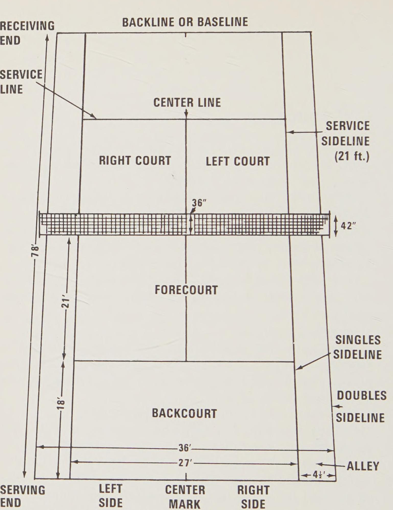
1. CÁC ĐỘI HÌNH TIÊU CHUẨN
KHI CÓ NHIỀU HƠN MỘT người tham gia điều hành một Chiến dịch, các đội hình thường xuất hiện. Đánh đôi cũng không ngoại lệ. Trong khi mô tả các đội hình này, mỗi lần chúng ta sẽ bắt đầu với cặp giao bóng.
Hai Dưới
Điều này có nghĩa là cả người giao bóng và đối tác đều đứng ở vị trí trước khi giao bóng, phía sau vạch cuối sân. (Xem Hình 1 cho tất cả các thuật ngữ sân thường dùng.) Đội hình này hầu như không đáng nhắc đến, vì nó hầu như không bao giờ được sử dụng. Nó mang tính tiêu cực, vì nó sẽ không cho phép bạn tận dụng bất kỳ lợi thế nào mà cú giao bóng của người giao bóng có thể mang lại.
Có lẽ những dịp hiếm hoi bạn sẽ thấy nó là với trẻ em—nơi một người gọi là “người đứng lưới” quá nhỏ để có thể hữu ích và do đó giúp đối tác của mình nhiều hơn bằng cách đứng lùi lại bên cạnh—và trong một số trường hợp hiếm hoi ở đánh đôi nữ và đánh đôi nam nữ, nơi một quý cô ngại lên lưới nhưng kiên quyết từ chối đứng bất cứ nơi nào gần lưới.
Đội hình Hai Dưới được sử dụng thường xuyên hơn nhiều bởi cặp nhận giao bóng, những người không bao giờ có lợi thế tung ra cú đánh đầu tiên, cụ thể là cú giao bóng. Tuy nhiên, nó vẫn mang tính tiêu cực đối với người nhận, bởi vì mục đích chính của nó là không cho phép người đứng lưới của đối phương chặn một cú trả giao bóng kém và thực hiện một cú vô-lê dứt điểm giữa hai đối tác nhận bóng. (Xem Hình 2.) Đội hình Hai Dưới thậm chí còn tiêu cực hơn nếu được sử dụng vì lý do là không ai trong số những người nhận muốn vô-lê và thay vào đó chỉ định đánh bóng cẩn thận trở lại cho người giao bóng cho đến khi họ đánh hỏng. Tuy nhiên, phần lớn, một cặp nhận bóng sử dụng Đội hình Tiêu chuẩn © ngự. Nó ngăn chặn tình huống hiển thị ở trên, nơi người nhận không có thể đánh cú trả bóng vượt qua người đứng lưới.
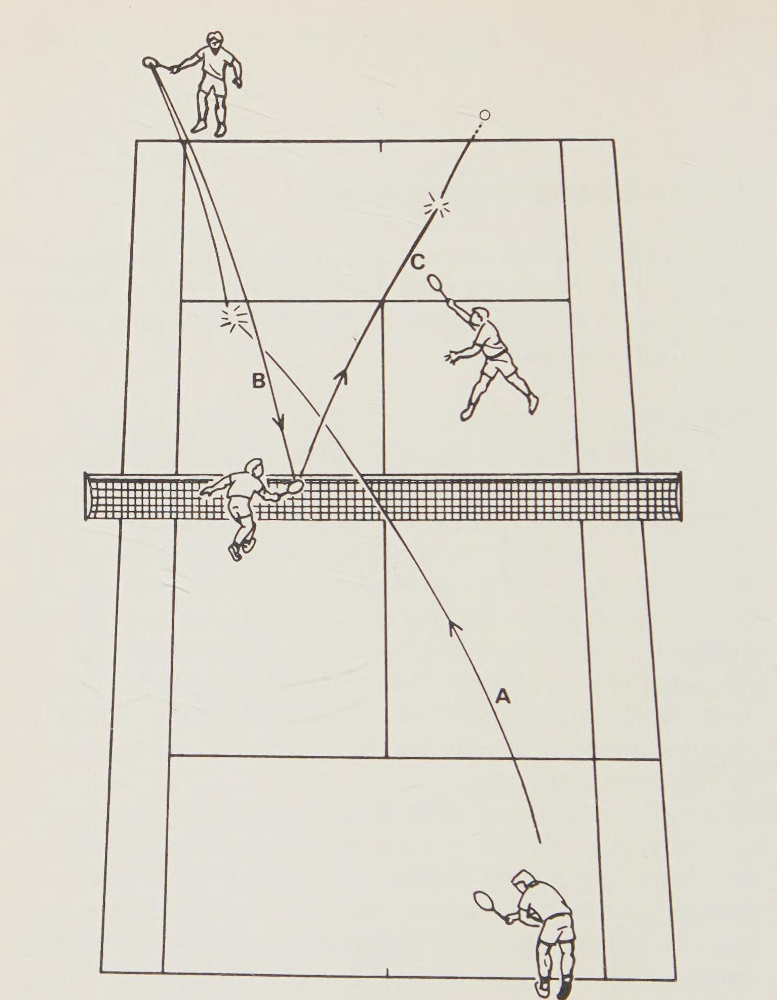
Đội hình Hai Dưới chỉ khi một cú giao bóng một mạnh được giao, trong trường hợp nó buộc một cú trả bóng yếu hoặc một cú lốp ngắn. Sau đó, đối với cú giao bóng thứ hai, đối tác của người nhận sẽ di chuyển về phía lưới.
Một trên Một dưới Một Trên đề cập đến người đứng lưới, vị trí ở đâu đó trong khu vực sân trước. Một Dưới là người giao bóng, người không có ý định theo cú giao bóng của mình lên lưới mà thay vào đó lập kế hoạch chơi bất kỳ chuỗi đánh bóng tiếp theo nào từ khu vực cuối sân hoặc từ phía sau vạch cuối sân.
Anh ta sẽ đánh mạnh (drive) và đối tác của anh ta, hy vọng rằng, sẽ vô-lê.
Một trên Một dưới là đội hình thường được chơi. Nó có thể được sử dụng từ giai đoạn bắt đầu cho đến mức độ hoặc tiêu chuẩn đủ cao để giành chức vô địch đánh đôi câu lạc bộ. Vượt quá mức đó, nó không thể chịu được áp lực gây ra bởi một cặp nhận bóng chơi Lối chơi Lên lưới chống lại đội hình Một trên Một dưới.
Trong khi nhận bóng, Một Trên đề cập đến đối tác của người nhận, người đứng ở lưới. Nếu người nhận có thể đánh bóng an toàn vượt qua tầm với của người đứng lưới đối phương, vị trí Một Trên đặt người giao bóng dưới áp lực phải thực hiện một cú trả bóng tốt—nếu không người nhận Một Trên hoặc người đứng lưới sẽ chặn nó, theo cách của Hình 2 nhưng ngược hướng.
Người chơi Một Dưới là người nhận, người mà, giống như người giao bóng, dự định chơi chuỗi bóng từ khu vực cuối sân hoặc phía sau vạch cuối sân.
Lối chơi Lên lưới (Net Game) Trong đội hình này, người giao bóng theo cú giao bóng của mình lên lưới, để tạo thành một rào chắn ở đó với đối tác của mình. Mục tiêu của bên giao bóng là tận dụng lợi thế vô-lê quả bóng trước, trước khi các đối thủ nhận bóng có cơ hội làm như vậy. Người giao bóng theo mọi cú giao, tốt hay tệ, lên lưới. Lý do là rằng nếu cú giao bóng mạnh, anh ta sẽ tận dụng tối đa lợi thế của nó; nếu nó yếu, anh ta không thể mạo hiểm đứng lại phía sau và nhường quyền sử dụng lần đầu vị trí lưới cho hai đối thủ của mình. Lý thuyết của anh ta trong trường hợp sau là tấn công là hình thức phòng thủ tốt nhất.
Trong khi nhận bóng, chơi đội hình Lối chơi Lên lưới có nghĩa là đối tác của người nhận đứng ở lưới và người nhận sẽ di chuyển vào và cùng anh ta tạo thành một rào chắn ngay khi có thể. Nếu người giao bóng không theo cú giao của mình lên lưới và vẫn đứng lại trong đội hình Một trên Một dưới, người nhận thường di chuyển vào sau cú đánh đầu tiên, tức là cú trả giao bóng của mình. Gần như không cần phải nói rằng Lối chơi Lên lưới là đội hình tấn công đáng gờm nhất của đánh đôi.
Đội hình Đối lập với Cú đánh Đội hình, với tư cách là các vị trí chiến thuật, hỗ trợ các cú đánh, nhưng không thay thế chúng. Truyền thuyết cho rằng, “Đánh đơn là trò chơi của những cú đánh, đánh đôi là trò chơi của chiến thuật,” nhưng đó là một sự cường điệu. Một cầu thủ đánh đơn với những cú đánh hợp lý nhưng không có ý niệm về chiến thuật là một đứa trẻ trước một người đánh bóng tương đương nhưng biết trò chơi. Người chơi thứ nhất có thể trông ngang ngửa với người thứ hai trong quá trình khởi động, nhưng không bao giờ sau đó.
Tương tự, yêu cầu một người “Kéo chiếc xà lan đó và nhấc kiện hàng đó” sẽ là vô vọng nếu anh ta không có cơ bắp. Vậy thì ích gì khi nói “Hạ thấp quả bóng đó, dứt điểm cú lốp đó,” với một cầu thủ đánh đôi không có cú drive xoáy lên (topspin) cũng như cú smash đáng tin cậy?
Chiến lược có thể để lại phần lớn cho các nhà hoạch định quân sự.
Một cầu thủ đánh đôi có nhu cầu cấp thiết hơn nhiều về chiến thuật và cú đánh.
Đội hình Lối chơi Lên lưới đòi hỏi một đặc tính thứ ba: sự linh hoạt.
Để chơi đội hình này thành công, bạn cần có khả năng theo cú giao bóng của mình lên lưới nhanh chóng và, với tư cách là người đứng lưới, di chuyển lùi lại đủ nhanh để bao quát các cú lốp qua đầu.
Chỉ khoảng một trong một nghìn cặp chơi Một trên Một Dưới làm vậy vì sự xuất sắc trong cú drive của họ. Những người còn lại làm vậy vì thiếu khả năng vô-lê (đặc biệt là khả năng vô-lê bóng thấp) hoặc thiếu sự linh hoạt trong việc chiếm lĩnh lưới và bao quát lưới chống lại những cú đánh chéo góc hoặc cú lốp của đối phương.
Thực tế là Một trên Một dưới là đội hình được sử dụng nhiều nhất bởi các tay vợt nói chung. Nhiều người không có ý định từ bỏ nó. Những cầu thủ đang tiến bộ phải đi qua nó, vì người ta phải đi trước khi chạy, và trung bình các bạn nữ sẽ ở lại trong đội hình này lâu hơn nam giới. Nói tóm lại, đội hình này xứng đáng được xem xét chi tiết.
2. MỘT TRÊN MỘT DƯỚI
ĐỘI HÌNH MỘT TRÊN MỘT DƯỚI không cứng nhắc như cái tên của nó gợi ý. Với tư cách là người giao bóng, bạn có thể:
= Thỉnh thoảng lên lưới sau cú giao bóng một một cách bất ngờ—để bắt một cú vô-lê thuận tay cao dễ dàng và ghi điểm gần như không tốn sức.
= Ưu tiên tấn công bằng cú drive thuận tay thay vì giao bóng, và sau đó tiến lên.
= Lên lưới trong tất cả các cú giao bóng một từ phía bên trái sang phía trái tay của người nhận ở ô bên trái. Sử dụng chiến thuật này, bạn lý luận rằng cú trả trái tay có thể yếu và, nếu bị lốp qua đầu đối tác đứng lưới của bạn, nó sẽ nằm ở phía thuận tay của bạn và bạn có thể bao quát được.
Tất cả những bước di chuyển này là những biến thể của Một trên Một dưới. Chúng không cấu thành lối chơi Lên lưới. Lối chơi Lên lưới có nghĩa là người giao bóng luôn luôn tiến vào—ngay cả với những cú giao bóng hai yếu—và rằng người đứng lưới, chứ không phải một người giao bóng thay đổi hướng, bao quát tất cả các cú lốp qua đầu mình dù anh ta chạm bóng ngay trên không hoặc lùi lại và cứu bóng sau khi bóng nảy.
GIAO BÓNG SANG Ô BÊN PHẢI Trong đánh đơn, bạn giao bóng chủ yếu từ gần vạch trung tâm, để có thể bảo vệ cả hai bên của sân. Do đó, trong đánh đôi, bạn giao bóng chủ yếu từ khoảng nửa đường giữa vạch trung tâm và đường biên dọc để bảo vệ cả hai bên nửa sân của mình.
Đúng là giao bóng từ gần vạch trung tâm giúp bạn dễ dàng hơn để tìm thấy trái tay của đối thủ và giao bóng từ sát đường biên dọc làm tăng cơ hội giao bóng một cú ace chéo góc rộng ra xa thuận tay của anh ta. Tuy nhiên, bất cứ khi nào bạn chọn sử dụng một trong hai chiến thuật này, bạn nên chuẩn bị tâm lý cho những kết quả có thể xảy ra nếu, sau tất cả, cú giao bóng của bạn cho thấy là dễ chơi đối với thuận tay của người nhận. (Xem Hình 3.) Nếu bạn coi đánh đôi là một trò chơi mà bạn có thể thoải mái chăm sóc chỉ một nửa sân, thì việc giao bóng quá thường xuyên từ A hoặc D sẽ sớm khiến bạn vỡ mộng.
D A B C: Một cú đánh chéo sân ngắn BC có thể là một cú dứt điểm trực tiếp, hoặc khiến bạn phải chật vật.
Tình huống D E F: Một cú lốp EF khiến bạn phải chạy dài. Từ ngoài sát đường biên dọc làm tăng cơ hội giao bóng một cú ace chéo góc rộng ra xa thuận tay của anh ta. Tuy nhiên, bất cứ khi nào bạn chọn sử dụng một trong hai chiến thuật này, bạn nên chuẩn bị tâm lý cho những kết quả có thể xảy ra nếu, sau tất cả, cú giao bóng của bạn cho thấy là dễ chơi đối với thuận tay của người nhận. (Xem Hình 3.) Nếu bạn coi đánh đôi là một trò chơi mà bạn có thể thoải mái chăm sóc chỉ một nửa sân, thì việc giao bóng quá thường xuyên từ A hoặc D sẽ sớm khiến bạn vỡ mộng.
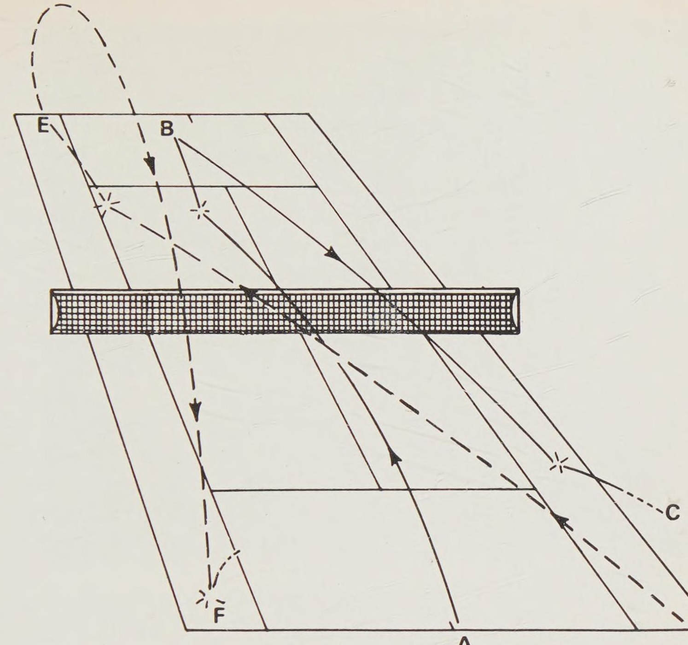
Nếu trình độ tennis của bạn và đối thủ vẫn chưa cao, sẽ có những lợi thế khi nhắm cú giao bóng một khá rộng ra xa thuận tay của người nhận ô bên phải. Thứ nhất, một cú giao bóng chéo, từ phía bên phải của bạn băng sang thuận tay của anh ta, sẽ dễ đưa bóng vào sân hơn là một cú nhắm dọc theo đường trung tâm, vì vậy bạn sẽ cảm thấy tự tin hơn khi đưa được nhiều cú giao bóng một vào cuộc. Điều này luôn là một lợi thế lớn, ở mọi cấp độ hoặc tiêu chuẩn chơi đánh đôi.
Thứ hai, anh ta có khả năng gặp khó khăn trong việc giữ cú trả bóng không bị đối tác đứng lưới của bạn chặn, người sẽ nhận được một cú vô-lê dễ dàng. Cú giao bóng càng rộng thì đối tác của bạn càng chặn được nhiều, và chúc mừng bạn. Có vẻ như bạn đã phát triển một sự kết hợp đẳng cấp một cách dễ dàng.
Hãy cẩn thận. Một người nhận thành thạo hơn sẽ đánh bóng qua đối tác đứng lưới của bạn dọc theo đường biên dọc bị hở của anh ta. Vị trí ban đầu được đảo ngược: bạn giao bóng càng rộng thì đối tác đứng lưới của bạn càng cần phải đứng đúng vị trí. Nếu anh ta bị bất động, bạn sẽ phải cân bằng lợi thế của việc giao bóng chéo tốt hơn với bất lợi đi kèm là đánh vào cú đánh mạnh hơn của người nhận, tức là thuận tay của anh ta.
Khá sớm bạn sẽ nhận ra rằng cú giao bóng dọc theo trung tâm là một phương án tốt hơn, và có lẽ cùng lúc đó đối tác đứng lưới của bạn nhận ra rằng loại cú giao bóng này cho phép anh ta di chuyển an toàn hơn và bao quát sân nhiều hơn.
Nếu bạn có thể đưa bóng dọc theo trung tâm bất cứ khi nào bạn muốn làm vậy, đồng thời giao bóng từ khoảng nửa đường ra đường biên dọc để bảo vệ nửa sân của mình, bạn có thể nói rằng mình có một cú giao bóng đánh đôi tốt sang ô bên phải. Hãy đặt đó làm mốc cho chính mình, một cột mốc, bất kể cấp độ hoặc tiêu chuẩn chơi của bạn.
Độ sâu Điểm tiếp theo là độ sâu. Cho dù bạn đưa bóng vào trái tay của người nhận hay không, nếu bóng ngắn, anh ta sẽ không gặp nhiều
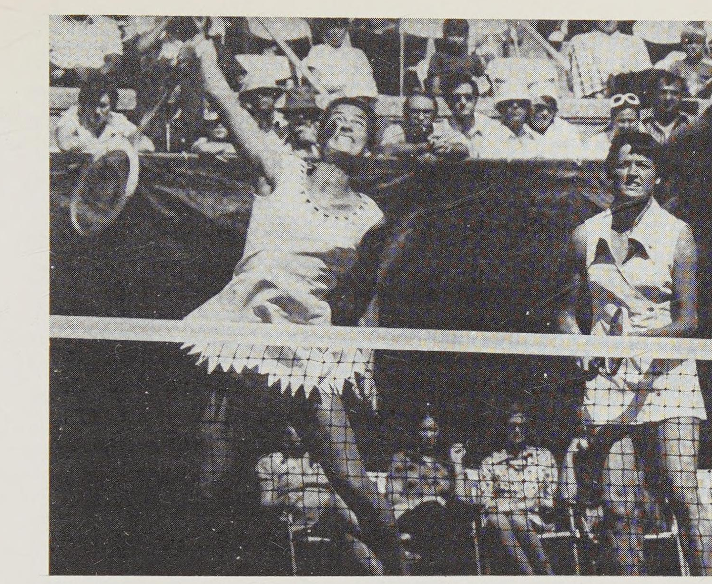
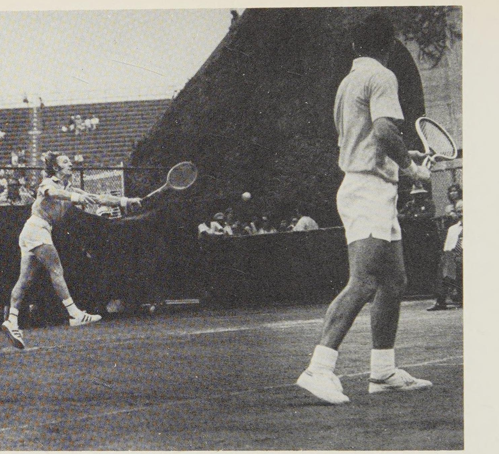
Khó khăn trong việc trả bóng và giữ cho bóng không bị đối tác đứng lưới của bạn chặn.
Bạn giao bóng càng sâu, cú đánh của đối thủ càng phải dài hơn trước khi chạm lưới. Điều này cho đối tác đứng lưới của bạn nhiều thời gian hơn để chặn bóng. Nó cũng cho bạn nhiều thời gian hơn để xử lý, nếu quả bóng bay về phía bạn. Ngoài ra, cú trả giao bóng này, được đánh từ vị trí lùi sâu, có khả năng sẽ rơi ngắn và do đó sẽ dễ xử lý hơn.
Hãy lưu tâm đến việc giao bóng sâu, nếu không bạn sẽ không thành công.
Giao bóng sâu cũng khiến bạn nhận ra nhu cầu về một độ cao an toàn hợp lý giữa bóng và lưới, và bạn cần nhận thức này vì các cú giao bóng có xu hướng đi xuống tự nhiên, khiến hầu hết các lỗi giao bóng là do bóng chạm lưới.
Nếu bạn có thể giao bóng từ khoảng nửa đường ra đường biên dọc và đưa bóng vào trung tâm và sâu bất cứ khi nào bạn muốn, bạn có một cú giao bóng đánh đôi rất tốt sang ô bên phải, bất kể trình độ của bạn.
Một cú giao bóng sâu vào bất kỳ phần nào của sân đối phương gần như luôn là một cú giao bóng tốt. Nếu bạn giao bóng vào trái tay của người nhận, bạn sẽ thấy rằng không nhiều cầu thủ có thể thực hiện một cú trái tay mạnh sang phía không thuận của họ. (Người nhận phải đánh sang phía không thuận để tránh đối tác đứng lưới của bạn.) Nếu thay đổi bằng cách giao sâu vào góc thuận tay, hãy lưu ý rằng người nhận thường trả bóng trong tầm với của đối tác đứng lưới của bạn.
Cú Ace (Giao bóng ăn điểm trực tiếp) Sau khi giao hai quả sâu vào trái tay ở ô bên phải và đạt tỉ số 40-15, bạn có thể muốn thử một cú ace, rộng ra ngoài thuận tay của đối thủ. Hầu hết mọi người liên tưởng cú ace rộng với tốc độ cực lớn, nhưng bạn sẽ đưa được nhiều cú giao bóng ngắn và chéo góc này vào sân hơn, thay vì ra ngoài, nếu bạn giao bóng chắc chắn thay vì giao quá nhanh. Các nhà vô địch tiết chế tốc độ một chút cho các cú giao bóng rộng, nhưng tất cả các cú giao của họ trông vẫn rất nhanh nên chúng ta không nhận ra điều đó.
Ý tưởng về một cú ace có kiểm soát thay vì một cú giao bóng cực nhanh bắt đầu bạn suy nghĩ về cú giao bóng hai. Chuyện gì sẽ xảy ra nếu bạn nhắm một cú giao bóng một nhanh và sâu vào trái tay nhưng bị hỏng, và sau đó người nhận di chuyển hơi lệch sang trái của họ để sẵn sàng tấn công cú giao bóng hai của bạn bằng thuận tay—nhưng thay vào đó bạn khiến họ bị ace bằng một cú giao bóng ổn định uốn cong ra rộng? Câu trả lời là bạn sẽ cảm thấy tuyệt vời—làm chủ tình thế. Nó giống như trong đánh đơn, khi bạn thu hút họ tiến vào bằng một cú bỏ nhỏ—và sau đó lốp bóng qua đầu họ gần như trước khi họ kịp dừng lại.
Rủi ro khi cố gắng giao bóng hai ăn điểm trực tiếp là bạn có thể bị lỗi kép không đáng có, hoặc, bạn có thể chỉ đơn giản là giao một quả bóng ngắn vào thuận tay của đối thủ. Tình huống sau không quá tệ nếu bạn nhận ra anh ta sẽ cố gắng đánh một góc nhọn—nếu bạn giao bóng từ ít nhất nửa đường ra biên, bạn có thể bao quát cú đánh này.
Nếu bạn không nhận ra cú trả bóng góc nhọn, và cũng giao bóng từ vạch trung tâm, thì bạn đã thực hiện loại cú giao bóng tệ nhất có thể sang ô bên phải.
Tuy nhiên, sự kết hợp giữa việc bảo vệ đường biên dọc, giao bóng sâu chủ yếu vào trung tâm nhưng không phải lúc nào cũng vậy, và thực hiện một cú ace rộng có kiểm soát—tất cả điều này tạo nên một cú giao bóng xuất sắc sang ô bên phải chống lại một người nhận có trình độ tương đương bạn, bất kể trình độ chung đó là gì.
Tốc độ Bạn cần hiểu rõ về tốc độ. Bạn giao bóng càng nhanh, đối thủ càng có ít thời gian để thực hiện cú đánh và bạn có thể khiến anh ta đánh yếu hoặc thậm chí đánh hỏng bóng, chưa nói đến việc anh ta không thể chạm tới và đánh bóng. Các nhà vô địch giao bóng nhanh và nhiều cầu thủ giỏi khác cũng vậy. Vì vậy, câu trả lời ngắn gọn chỉ có thể là bạn nên giao bóng nhanh nhất có thể.
Tốc độ nhanh của bạn phải bao gồm cả sự thoải mái và kiểm soát. Rõ ràng bạn không nên liên tục gồng mình và mất thăng bằng khi bóng trả về. Về phần kiểm soát, nếu không có nó, bạn không thực sự đang giao bóng, vì “giao bóng” thực sự có nghĩa là đưa bóng vào cuộc để bắt đầu điểm số; không có kiểm soát, bạn đang đưa bóng ra ngoài sân.
Tuy nhiên, trong đánh đôi, tốc độ không chỉ là giao bóng ở mức nhanh nhất có kiểm soát. Bạn nên luôn nhận thức được rằng nếu tốc độ này không gây khó khăn cho đối thủ thì nó có lẽ đang hỗ trợ anh ta. Anh ta đưa bóng trở lại nhanh hơn; bạn có ít thời gian hơn giữa cú giao bóng và cú đánh tiếp theo. Khía cạnh này đặc biệt quan trọng trong đánh đôi Lối chơi Lên lưới, nơi bạn theo cú giao bóng lên lưới, nhưng bạn cũng nên nhận thức được điều đó khi chơi Một trên Một dưới.
Hãy lưu ý cả tình trạng của bóng và các bề mặt sân khác nhau. Với những quả bóng cứng mới, tốc độ nhanh hơn của bạn có thể gây khó khăn cho đối thủ trên sân bê tông, nhưng với bóng cũ và sân chậm, nó có thể hỗ trợ anh ta. Nhưng đây là những yếu tố thứ yếu. Chủ yếu là đối thủ mới là điều quan trọng. Khi anh ta có thể xử lý bất kỳ tốc độ nào của bạn, bạn nên thay đổi cú giao bóng nhiều hơn thay vì đánh mạnh hơn. Nhưng điều quan trọng nhất trong trường hợp này là giữ thăng bằng, vị trí và tập trung nhiều hơn vào việc cố gắng giành chiến thắng từ cú trả bóng thay vì từ cú giao bóng của mình.
Nhiều cầu thủ nhận ra tất cả những điều này khi đánh vào một bức tường gạch hoặc bảng tập luyện khác, nhưng khi thi đấu họ không nhận ra sự tương đồng của một người nhận có thể xử lý tốc độ giao bóng của họ.
Việc đánh ngày càng mạnh vượt quá khả năng thực hiện cú đánh của bạn về mặt kỹ thuật được gọi là Pressing (Gây áp lực quá mức). Nếu tiếp tục, nó trở thành sự tuyệt vọng. Một dạng của điều này thường xảy ra trong đánh đôi nam nữ, nơi bạn nữ cố gắng giao bóng quá mạnh chống lại bạn nam. Trong trường hợp này, anh ta hầu như chỉ phải chơi những cú giao bóng hai của cô ấy, và khi một cú giao bóng một vào sân, anh ta đưa bóng trở lại trước khi cô ấy kịp sẵn sàng.
Trong đánh đôi nam, nữ hoặc nam nữ, bạn nên giữ một cái đầu lạnh và thay vì giao bóng mạnh hơn, bạn nên cố gắng thắng một cách hiệu quả hơn. Nói thì dễ hơn làm, nhưng nó sẽ dễ dàng hơn nhiều nếu bạn nhận ra đó là chiến thuật đúng đắn cần theo đuổi.
Một trên Một dưới—Tốc độ Giao bóng © Một cú giao bóng xoáy lên (topspin) dễ đưa bóng vào trung tâm của ô bên phải hơn. Một cú giao bóng cắt (slice) Có độ uốn ra ngoài nhiều hơn và cần được nhắm chuẩn xác qua nửa bên kia của lưới.
Ngay cả cú nảy của nó cũng hướng nhiều hơn về phía thuận tay của người nhận.
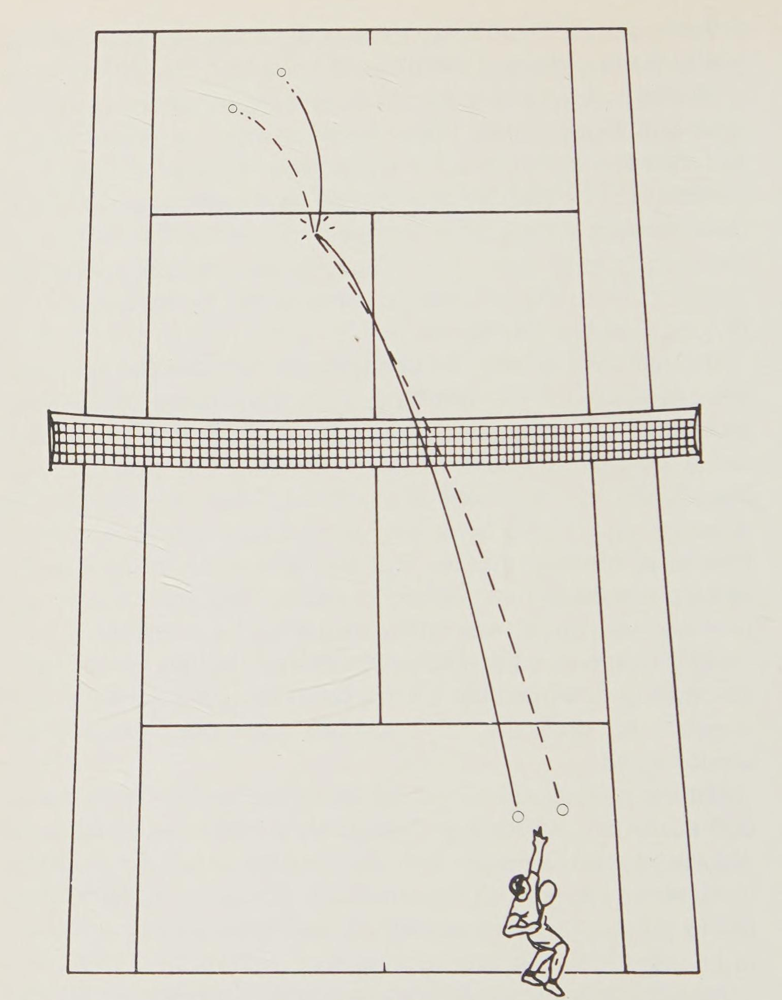
Thay đổi chủ đề, nếu bạn có một cú giao bóng mạnh và tốt, nó thường sẽ quá sức đối với những người nhận cùng trình độ với bạn.
Bạn sẽ thắng hầu hết các ván giao bóng của mình. Hãy coi đó là một tài sản và sử dụng nó một cách tự tin.
KỸ THUẬT GIAO BÓNG Bây giờ hãy chuyển từ chiến thuật sang các cú đánh.
Cú giao bóng dọc theo trung tâm của ô bên phải dễ thực hiện hơn với cú giao bóng xoáy lên (topspin) so với cú giao bóng cắt (slice). Đối với cú giao bóng xoáy lên, bạn tung bóng trên đầu, gập khuỷu tay mạnh và đưa vợt lên sao cho quả bóng lăn qua những sợi dây ngắn và do đó rời đi với độ xoáy lên.
Điểm quan trọng, về hướng, là vợt vung về phía trước và rõ rệt từ trái sang phải, kết thúc xuống dưới chân phải của bạn—và điều này tương đương với việc đưa bóng về phía trái của người nhận, dọc theo trung tâm sang trái tay của anh ta.
Bạn thực hiện cú giao bóng cắt (slice) bằng cách tung bóng trên vai phải và hơi chếch về phía trước, và cắt quanh quả bóngtừ phải sang trái. Vợt di chuyển ngang qua cơ thể và kết thúc xuống dưới chân trái của bạn. Toàn bộ hành động tạo ra một độ cong tự nhiên cho bóng, uốn cong nó về phía bên phải của người nhận, hướng về phía đường biên dọc sang thuận tay của anh ta.
Để đưa một cú giao bóng cắt vào trung tâm trong ô bên phải có nghĩa là nó phải băng qua lưới ở phía đối diện của trung tâm và uốn cong vào sân sang trái tay của người nhận. Đây có thể là một công việc căng thẳng khi tỉ số của bạn là 15-40 hoặc 4-5 và 30-tất cả hoặc đại loại như vậy. Nếu bạn do dự, và không áp dụng đủ độ cắt như thường lệ, bóng sẽ uốn ít hơn và rơi vào sai ô.
Ngoài ra bạn thậm chí không có được sự thoải mái khi giao bóng qua điểm thấp nhất của lưới. Về tất cả những điều này, xem Hình 4.
Đoán trước (Second Guessing) Cách dễ nhất để đưa cú giao bóng của bạn vào sân là giao xoáy lên khi nhắm vào trái tay và giao cắt khi nhắm vào thuận tay.* Hãy thử cách này nếu đối thủ của bạn không đủ kinh nghiệm để nhận ra bạn đang sử dụng cú giao nào và do đó hướng đi có thể xảy ra của nó.
Tuy nhiên, đối với một cầu thủ kinh nghiệm hơn, hướng của cú tung bóng sẽ ngay lập tức tiết lộ điều đó—đặc biệt là vào cuối trận đấu, khi anh ta không thể tránh khỏi việc quen với bạn.
Bạn sẽ phải thực hiện một số cú đánh 'đánh lừa' (second guessing). Hãy đứng hơi rộng hơn về phía đường biên dọc hơn bình thường và người nhận cũng sẽ di chuyển rộng hơn, để bao quát góc rộng mà bạn đe dọa giao bóng; trong khi di chuyển rộng hơn, anh ta để lộ phía trái tay nhiều hơn bình thường. Bạn tung bóng sang phía bên phải của mình cho một cú giao bóng cắt và anh ta tự động chuẩn bị di chuyển để bao quát đường cong uốn ra ngoài của bạn.
Thay vào đó, bạn giao bóng vào trái tay anh ta. Quả bóng uốn cong vào anh ta và thường buộc anh ta phải thực hiện một cú đánh gò bó mà đối tác đứng lưới của bạn có thể chặn và vô-lê dứt điểm.
Đối với cú giao tiếp theo cho người nhận ô bên phải này, bạn có thể đứng ở cùng vị trí rộng này và một lần nữa tung bóng lên phía bên phải của mình cho một cú giao bóng cắt.
Lần này anh ta không biết bạn định giao bóng sang phía nào.
Bây giờ bạn có thể giao bóng rộng sang thuận tay của anh ta, nếu muốn, với cơ hội thành công cao hơn nhiều so với trước đó.
Tương tự, bạn có thể thực hiện cú giao bóng đầu tiên của ván như một cú giao bóng xoáy lên dọc theo trung tâm. Nếu bạn thực hiện cú giao tiếp theo là một cú giao bóng xoáy lên sâu vào góc thuận tay của đối thủ, anh ta có thể không có đủ thời gian để đứng đủ xa phía sau quả bóng để nhắm mục tiêu chính xác.
Đối tác của bạn, mà không liều lĩnh để hở đường biên dọc quá sớm, có thể một lần nữa chặn được cú trả bóng.
Những ví dụ trên là minh họa cho các thuật ngữ, “sử dụng cú giao bóng tốt,” hoặc “trộn lẫn các cú giao bóng.”
Đừng đi quá xa với kho tàng các cú giao bóng đánh lừa của bạn.
Ví dụ, đối với cú giao bóng hai, bạn có thể quyết định đứng 7 Tất nhiên, nếu đối thủ của bạn ở ô bên phải tình cờ là người thuận tay trái, bạn có một nhiệm vụ dễ dàng trong việc đánh những cú giao bóng cắt chéo sang trái tay của anh ta. Đó có thể là cú đánh ổn định hơn của anh ta, nếu không anh ta sẽ không chơi ở đó, nhưng nó khó có thể nguy hiểm như thuận tay của một người thuận tay phải. Gần vạch trung tâm và tung bóng trên đầu cho một cú giao bóng xoáy lên—để dụ đối thủ tin chắc rằng bạn sẽ giao bóng dọc theo trung tâm, trong khi thực ra bạn đang lên kế hoạch cho một cú ace thứ hai chậm và rộng. Nếu bạn làm điều này, bạn đang tự chuốc lấy rắc rối. Nếu bạn không ace được anh ta, bạn sẽ đưa cho anh ta một quả bóng chậm và ngắn nảy cao hơn lưới (do độ xoáy lên của nó)—và toàn bộ sân thuận tay của bạn bị hở.
Từ góc rộng mà bạn đã tạo ra cho anh ta và độ nảy cao của quả bóng, anh ta có thể đánh một cú cắt góc xuống hoặc một cú drive xoáy lên chéo sân và khiến bạn đứng hình. Xem Hình 5.
Bạn thà giao bóng lỗi kép còn hơn.
Một bất lợi khác của việc quá lạm dụng đánh lừa là các cú đánh của bạn, trong trường hợp này là giao bóng, có thể không theo kịp chiến thuật. Điều này có thể dẫn đến việc bạn giao quá nhiều lỗi. Đánh đôi không chỉ là chiến thuật. “Trộn lẫn chúng” đòi hỏi phải luyện tập giao bóng rất nhiều.
Giao bóng Xoáy-Cắt (Topspin-Sliced) Có lẽ bạn không thích giao bóng theo những hướng “không tự nhiên”, nghĩa là xoáy lên sang thuận tay và cắt sang trái tay, nhưng bạn biết mình đã đạt đến trình độ mà bạn phải làm tốt hơn là chỉ giao bóng theo những hướng tự nhiên cho những đối thủ những người dự đoán được cú giao của bạn và xử lý chúng một cách tương đối dễ dàng.
Bạn muốn có một cú giao bóng nằm đâu đó giữa cú giao bóng xoáy lên và giao bóng cắt. Nó sẽ không có độ an toàn vượt lưới và dộ rơi nhiều như cú giao bóng xoáy lên, cũng không có độ uốn xuyên thấu như cú giao bóng cắt, nhưng lợi thế lớn của nó là bạn có thể thay đổi hướng từ một cú tung bóng và vị trí bóng cố định.
Cú tung bóng của bạn sẽ không bị lộ.
Một cú giao bóng như vậy là cú giao bóng xoáy-cắt (topspin-sliced). Các cầu thủ gọi các cú giao bóng là Cắt (Sliced), Xoáy lên (Topspin), American Twist hoặc Kick (một dạng phóng đại của Topspin) và Phẳng (Flat) hoặc Cannonball và trong
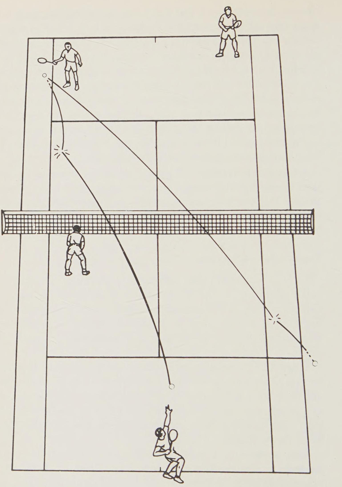
Những ngày đầu họ nói về Xoáy ngược (Reverse Spin-ngược với Cắt) và Xoáy ngược Twist (Reverse Twist-ngược với American Twist)—nhưng trong suốt thời gian qua cú giao bóng chủ lực của nhiều cầu thủ thực chất là (mặc dù không được đặt tên) một cú giao bóng xoáy-cắt.
Bạn thực hiện một cú giao bóng cắt bằng cách tung bóng hơi phía trước vai phải và cắt quanh nó. Tại khoảnh khắc tiếp xúc giữa bóng và dây, bạn cảm thấy khuỷu tay mình gần như duỗi thẳng hoàn toàn và bạn cảm thấy mình đang đánh xuống và quanh quả bóng—giống như ném một quả bóng uốn cong ra ngoài.
Bạn thực hiện một cú giao bóng xoáy lên bằng cách tung bóng trên đầu và gập khuỷu tay mạnh để bạn có đủ lực đánh quả bóng với mặt vợt đang đi lên (để tạo độ lăn về phía trước hoặc xoáy lên cho bóng). Tại khoảnh khắc tiếp xúc giữa bóng và dây, bạn cảm thấy khuỷu tay mình vẫn đang trong quá trình duỗi ra.
Bạn thực hiện một cú giao bóng xoáy-cắt bằng cách tung bóng không xa về phía trước và sang phải như đối với một cú giao bóng cắt, và bằng cách đánh quả bóng với cảm giác rằng khuỷu tay của bạn vẫn còn ở một mức độ nào đó đang mở ra.
Hình 6 là một sơ đồ so sánh của ba cú giao bóng. Lưu ý rằng trong mọi trường hợp, khuỷu tay được hiển thị là duỗi thẳng tại khoảnh khắc tác động. Việc minh họa nó bị gập trong các bản vẽ xoáy lên và xoáy-cắt sẽ cho bạn một ấn tượng hoàn toàn sai, khiến bạn tưởng tượng rằng bạn nên giao bóng với một cánh tay gập.
Thực tế là với hai cú giao bóng này, đặc biệt là cú xoáy lên, bạn phải cảm thấy khuỷu tay mình vẫn đang mở ra, tung bóng trên đầu cho một cú giao bóng hai xoáy lên. Cả hai hành động khiến đối thủ của bạn mong đợi một cú giao dọc đường trung tâm, nhưng bạn định đánh lừa anh ta và giao một cú ace rộng. Bạn đang chơi một trò chơi mạo hiểm. Nếu nó không thành công, bạn có lẽ thậm chí sẽ không chạm được vào cú trả bóng của anh ta.
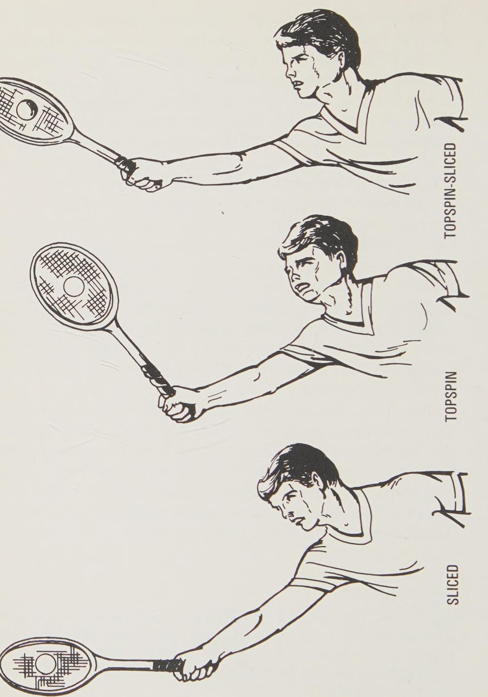
XOÁY-CẮT (TOPSPIN-SLICED) rằng bạn đang “đánh trong khi vung lên”. Hình 6 cũng là một sơ đồ so sánh về hình ảnh tinh thần mà bạn nên có về vị trí mặt vợt khi tác động.
Rõ ràng, văn bản và sơ đồ là không đủ. Và, cho các mục đích thực tế, hình ảnh chuỗi cũng vậy. Bạn không thấy được bức tranh tổng thể, cũng như tốc độ tương đối của các phần trong cú vung. Để phát triển cú giao bóng xoáy-cắt của riêng mình, bạn phải quan sát ai đó giao bóng nó.
Điều đó sẽ không khó. Trước đây bạn có thể nghĩ rằng hàng tá người giao bóng cắt, một số uốn cong và lướt thấp qua lưới, và những người khác bằng cách nào đó cao hơn và an toàn hơn nhiều trong khi vẫn nhanh tương đương. Những cú giao bóng sau thực chất là Xoáy-Cắt. Bạn có thể phân tích chúng bây giờ, lưu ý yếu tố xoáy lên gắn liền với chúng.
Sau đó, bạn sẽ ở vị trí có thể tự mình thử nghiệm, một cách tự nhiên hơn nhiều so với việc làm theo văn bản hoặc hình minh họa của bất kỳ loại nào.
Từ cú giao bóng cắt hiện tại, có lẽ tất cả những gì bạn cần là tung bóng lùi lại một chút.
Ai biết được, có lẽ bạn nhận ra mình đã giao bóng xoáy-cắt từ lâu rồi? Tương tự, một cách vô thức bạn có thể tung bóng hơi lệch sang phải khi bạn muốn giao Nhưng với các cú giao xoáy lên và xoáy-cắt, bạn cảm thấy rằng khuỷu tay của bạn vẫn đang mở ra khi tác động, rằng bạn đang đánh bóng trong khi vung lên. Đó là điều tạo nên độ xoáy lên.
LƯU Ý: Cách cầm vợt Continental được hiển thị (phần đế của lòng bàn tay nằm trên bề mặt trên của tay cầm vợt) không phải là bắt buộc. Nó được ưu tiên, nếu bạn làm chủ được nó, vì phần cuối của tay cầm nằm chếch ra khỏi cổ tay thay vì nằm gần như thẳng hàng với nó. Khoảng hở này cho phép cổ tay bật mạnh hơn. Rộng và một chút gần đầu hơn khi bạn nhắm dọc theo trung tâm. Bạn chưa bao giờ nhận ra—nhưng bạn có thể chắc chắn rằng những đối thủ khôn ngoan của bạn đã nhận ra.
Giao bóng Phẳng hoặc Cannonball
Một cú giao bóng phẳng (flat) có biên độ sai số thấp hơn bất kỳ loại giao bóng nào khác. Vì không được cắt hay xoáy lên, nó không uốn cong hay rơi xuống đáng kể.
Đi theo một đường thẳng hơn, sau khi băng qua lưới, nó có khoảng không ngắn nhất có thể để rơi vào sân và do đó có thể có rất ít độ an toàn vượt lưới. Đặc trưng chính của nó là tốc độ, vì nếu không thì chẳng có lý do gì để giao bóng phẳng, vì vậy một lần nữa nó cần lướt thấp qua lưới. Và khi đánh nó mạnh, bạn có thể đánh hỏng.
Các cú giao bóng Cannonball chủ yếu chỉ dành cho các cầu thủ nam vừa cao, mạnh lại vừa chính xác để không lãng phí hầu hết các //lần thử của mình.
Mặc dù giao bóng phẳng là một loại hình giao bóng riêng biệt, nó hiếm khi hoàn toàn phẳng. Khi giao bóng sâu vào góc thuận tay của ô bên phải, bạn có thể muốn thêm một chút độ cắt để tạo cảm giác kiểm soát. Khi giao bóng dọc theo trung tâm của ô bên phải hoặc hướng về phía trái tay của ô bên trái, bạn có thể muốn cảm thấy mặt vợt phẳng của mình hơi úp lên trên quả bóng, cảm giác rằng bạn đang tạo cho nó một chút xoáy ngược hoặc xoáy về phía trước.
Độ xoáy về phía trước lăn theo đúng hướng như xoáy lên, nhưng khi chúng ta nói về xoáy lên (topspin) trong một cú giao bóng, chúng ta luôn ám chỉ độ xoáy mạnh hơn được áp dụng với hành động giao bóng xoáy lên như mô tả ở trang 27 và hiển thị trong Hình 6.
Bạn có thể không thích khái niệm cảm nhận một chút độ cắt hoặc một chút xoáy về phía trước, và nghĩ rằng nó làm giảm tốc độ của cú cannonball. Trong trường hợp đó, hãy đánh bóng mạnh nhưng với thời gian tiếp xúc dài giữa bóng và dây, cảm giác như bạn đang làm phẳng quả bóng trước khi nó rời khỏi dây vợt.
Hoặc chọn một khái niệm khác, vì mọi cú đánh đều phải có một cảm nhận về tinh thần và thể chất, kể cả cú cannonball của bạn.
Sẽ không có hy vọng gì cho bạn nếu bạn coi nó chỉ là một cú đánh phẳng.
Xem Hình 7.
Đánh bóng mạnh và tập trung vào độ sâu, không phải góc đánh. Bất kể bạn chọn đánh mạnh thế nào, bạn cần một khái niệm tinh thần về sự kiểm soát. Không có ích gì khi chỉ có tốc độ trong đầu và để quả bóng bay thẳng ra khỏi dây vợt.
Một trên Một dưới—Giao bóng Cannonball ©
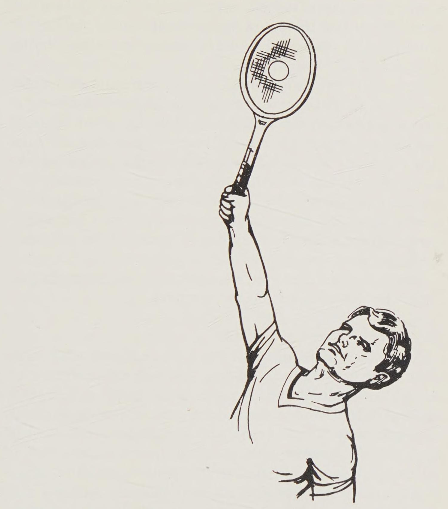
Ô NGUY HIỂM (DANGER COURT) Trở lại từ cấp độ cao của giao bóng cannonball xuống mức thông thường, ô bên phải là Ô Nguy Hiểm (Danger Court). Có nhiều điểm số hơn ở ô bên trái, nhưng bạn nhận thức rõ về những điểm này hơn. Nếu bạn mất điểm khi giao bóng sang ô bên phải, bạn sẽ luôn phải nỗ lực hồi phục trong những điểm tiếp theo, luôn cố gắng cứu vãn tỉ số 0-30 hoặc 15-40 hoặc ván đấu.
Bạn cần có khả năng tự bảo vệ mình khỏi một tình huống mà người nhận ô bên phải với cú thuận tay mạnh chiếm lấy cú giao bóng của bạn, đặc biệt là cú giao bóng hai, một cách áp đảo và liên tục khiến bạn bị dẫn một điểm. Nhu cầu cơ bản của bạn là khả năng đưa cú giao bóng hai sâu vào trái tay của người nhận, trong khi giao bóng từ ít nhất nửa đường ra đường biên dọc.
Đừng coi đây là một cú giao bóng phòng thủ tránh xa thuận tay của anh ta ếu không bạn sẽ rơi vào trạng thái tâm lý sai lầm. Hãy biến cú giao bóng của bạn thành một cuộc tấn công mạnh mẽ vào trái tay anh ta. Điều đó tạo ra sự khác biệt hoàn toàn.
Bất kể ý định của bạn là gì, bất kể mục tiêu ở đâu, bất kể bạn tung bóng thế nào—hãy quan sát nó. Giữ đầu ngẩng cao.
GIAO BÓNG SANG Ô BÊN TRÁI Nếu bạn có thể giữ được các điểm ở ô bên phải, bạn sẽ xử lý tốt những điểm ở ô bên trái. Bạn có sự tự tin khi đang dẫn một điểm và cũng dễ dàng hơn nhiều để tìm thấy trái tay của đối thủ ở ô này. Cú giao bóng chéo dễ thực hiện của bạn sẽ hướng về đó. Bạn có thể đưa cú giao bóng xoáy lên của mình vào góc trái tay của ô bên trái với ít áp lực hơn bất kỳ nơi nào khác.
Tuy nhiên, điều này giả định rằng các đối thủ của bạn có sức mạnh tương đương.
Thường thì họ không như vậy, và khi đó người mạnh hơn quá thường chơi ở ô bên trái, từ đó anh ta có thể kiểm soát nhiều phần của cuộc chơi hơn. Bạn nên nhớ về Ô Nguy Hiểm và không để các điểm số tuột mất một cách không cần thiết khi giao bóng cho đối tác bên phải yếu hơn. Một bạn nữ giao bóng trong đánh đôi nam nữ nên nhận thức được điều này ngay từ điểm đầu tiên. Cô ấy có thể vô tình mất điểm và không thể hồi phục, tỉ số trở thành 0-30, 15-30, 15-40, 30-40, mất ván. Điều này nghe có vẻ phân biệt nam nữ, với việc người nhận nam quá giỏi để có thể là thật, nhưng nó thường xảy ra theo cách đó.
Cú trả bóng thông thường của người nhận ô bên trái sẽ hướng về phía trái tay của bạn, vì vậy bạn nên bảo vệ khu vực này nhiều nhất có thể bằng cách giao bóng từ vị trí xa hơn một chút so với nửa đường ra đường biên đôi.
Giao bóng từ xa hơn cũng cho bạn một góc rộng hơn tới trái tay của người nhận, khiến anh ta khó bước quanh bóng và thực hiện một cú thuận tay. Nếu anh ta lốp bóng qua đầu đối tác của bạn, bạn sẽ phải chạy dài hơn mức cần thiết, nhưng lần này quả bóng sẽ nằm ở phía thuận tay của bạn.
Nếu đối thủ chơi ở ô bên trái chủ yếu vì thuận tay của anh ta yếu (điều mà bạn có thể nhận ra trong lúc khởi động hoặc ngay sau đó), bạn có thể giao bóng cho anh ta từ gần vạch trung tâm. Nếu không, giao bóng từ vạch trung tâm sẽ tạo điều kiện cho cú tấn công thuận tay của người nhận hướng về trái tay của bạn, và đó là một chiến thuật tồi từ phía bạn.
Đánh lừa (Second guessing)? Giao bóng từ vạch trung tâm nhưng nhắm vào trái tay của anh ta? Điều này cho phép anh ta đánh một cú trái tay chéo sân rộng ra xa trái tay của chính bạn. Bạn định gây bất ngờ cho anh ta lần đầu với một cú đánh vào trái tay để đối tác đứng lưới của bạn có thể chặn và ghi điểm, và lần tới là một cú ace dọc theo trung tâm? Chà, cú giao bất ngờ vào trái tay có thể hiệu quả, nhưng cú ace dự định dọc theo trung tâm không dễ khiến anh ta bất ngờ. Khi một người giao bóng đứng gần vạch trung tâm, người nhận luôn cảm thấy bị đe dọa bởi một cú ace dọc đường trung tâm và theo bản năng sẽ phòng thủ chống lại nó. Nếu cú giao dọc trung tâm của bạn không gây khó khăn cho người nhận, phía trái tay của bạn sẽ bị hở rộng và bạn sẽ ở vị trí bất lợi. Với tư cách là người giao bóng, bạn đã có lựa chọn tốt hơn.
Quan sát các trận đánh đôi từ trình độ cao xuống thấp, bạn sẽ không thấy nhiều cầu thủ giao bóng từ gần vạch trung tâm, và hầu hết sẽ giao bóng từ vị trí xa hơn ở phía bên trái so với phía bên phải.
Người thuận tay trái ở Ô bên Trái Ít có người thuận tay trái chỉ đơn thuần là hình ảnh ngược của người thuận tay phải. Phần lớn họ có một cú thuận tay phát triển quá mức và một cú trái tay kém phát triển. Bạn có thể đã đánh bại một cầu thủ như vậy trong đánh đơn trước đó vào buổi chiều vì bạn có thể tấn công vào trái tay của anh ta, và bây giờ anh ta ở đây trong đánh đôi, thực hiện cú thuận tay hết lần này đến lần khác và chiếm ưu thế trước cú giao bóng của bạn. Bạn cố gắng nhắm dọc theo trung tâm vào trái tay của anh ta, nhưng anh ta bước quanh bóng và thực hiện một cú thuận tay tốt hơn bao giờ hết.
Quyết định rằng bạn phải giao bóng vào trái tay anh ta bằng mọi giá, bạn giao bóng từ vạch trung tâm và cuối cùng bạn buộc anh ta phải chơi một cú trái tay. Nhưng anh ta thực hiện điều đó mà không gặp khó khăn; anh ta chơi cú trái tay xoáy trong đặc trưng của mình, rộng ra xa trái tay của bạn. Khi bạn đánh anh ta trong đánh đơn, đây gần như là cú trái tay duy nhất anh ta có thể thực hiện, và giờ đây nó dường như là tất cả những gì anh ta cần làm.
Bạn thắng anh ta trong đánh đơn và giờ anh ta đang áp đảo bạn trong đánh đôi. Bất kể bạn giao bóng ở đâu, anh ta đều thực hiện hai cú đánh thuần thục nhất của mình: thuận tay chéo sân, và trái tay sang phía không thuận. Phải có một chiến thuật nào đó để đối phó với tình huống như vậy.
Có một cách. Hãy chơi Đội hình Song hành (Tandem). Hãy gọi nó là Tandem, một từ mô tả ngắn gọn, và coi nó là một phần bình thường trong lối chơi đánh đôi của bạn để gọi và sử dụng khi cần. Gọi nó là Đội hình kiểu Úc (Australian Formation) là quá xa vời. Ở Úc, nó được coi là một đội hình kiểu Mỹ, nên không quốc gia nào có quyền sở hữu độc quyền về nó.
Anh ta đang đứng ở cùng một vị trí như khi bạn giao bóng sang ô bên phải, điều mà ngay cả khi đó cũng là quá gần cả lưới và đường biên dọc để có hiệu quả. Tandem nhấn mạnh sự tham gia không thỏa đáng của người đứng lưới. Người đứng lưới nên đứng gần trung tâm hơn và lùi xa lưới hơn.
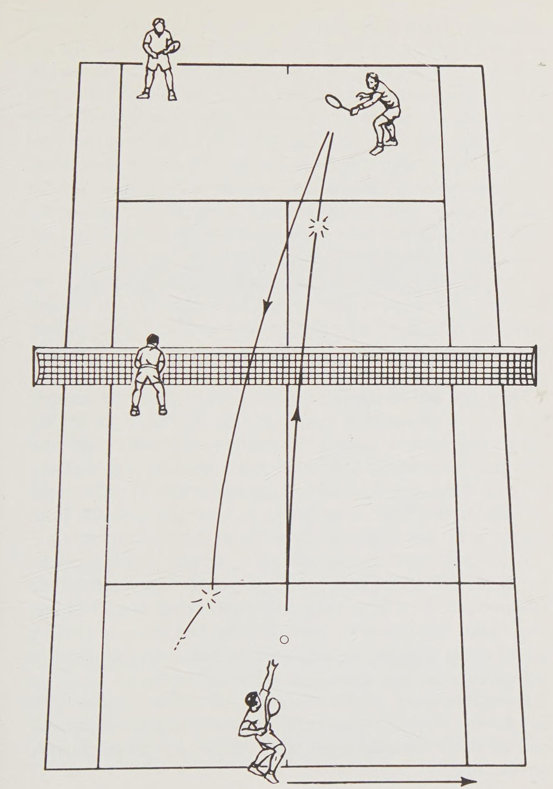
BORSseoeRsBeeas Ae: SSSOES SSR CH PGSIS OS SESH SO SSAAUSS HPCOTSRSSSCHOCVORBAGDAGOS SNSas5eNR0BIR0a 0 9 giseoeegese JER RSRSTRSSRESSASSSSRSEE SERRE SSRRESe a Sere é@Qneeecessess 2S Để chơi Đội hình Song hành (nghĩa là người này đứng sau người kia), đối tác đứng lưới của bạn đứng cùng phía sân với bạn. Ở vị trí này, anh ta chặn hai cú trả bóng tự nhiên của người thuận tay trái: thuận tay chéo sân và trái tay sang phía không thuận. Bạn đứng ngay cạnh vạch trung tâm, định thực hiện một cú giao bóng cắt dọc theo đường trung tâm vào trái tay anh ta. Sau đó, bạn sẽ xử lý cú trả bóng của anh ta, mà bạn có thể kỳ vọng là sẽ yếu hơn trước đó.
Tuy nhiên, ngay sau khi giao bóng, bạn phải di chuyển ngay lập tức để bao quát phía thuận tay đang bị hở hoàn toàn của mình. Giao bóng và di chuyển—giống như thể bạn đang giao bóng và chiếm lĩnh lưới trong một chuyển động phối hợp.
Bạn làm điều này—và người thuận tay trái, từ trái tay (hoặc thuận tay, nếu cú giao của bạn không tìm thấy trái tay anh ta) đánh bóng dọc theo trung tâm sân giữa bạn và đối tác của bạn vào vùng không có người bảo vệ và ghi một điểm thắng tuyệt đối. Điều gì đã sai lần này? Đó là người đứng lưới. Xem Hình 8.
Vì bạn sẽ di chuyển sang phải để bao quát phía bên phải bị hở của sân, nên chính người đứng lưới phải bảo vệ trung tâm. Để có cơ hội làm vậy, anh ta phải bắt đầu bằng cách đứng gần trung tâm hơn nhiều so với bình thường, ít nhất là nửa đường giữa đường biên đơn và đường trung tâm. Anh ta cũng cần đứng lùi xa hơn trước, ít nhất là nửa đường lùi từ lưới đến vạch giao bóng, để cho mình có nhiều thời gian di chuyển hơn.
Một người đứng lưới có thể cảm thấy bị hở và dễ bị tấn công ở vị trí này, nhưng Tandem cũng không phải là một đội hình tự nhiên và thoải mái đối với người giao bóng. Nói tóm lại, bạn có thể cảm thấy mình đang làm quá nhiều thứ và rắc rối. Mặt khác, đó là chiến thuật tốt nhất để kiềm chế một người thuận tay trái vốn dĩ áp đảo. Với nhiều sự luyện tập trước đó, bạn có thể áp dụng nó tùy ý trong một trận đấu.
Hãy ghi nhớ Tandem không chỉ cho những người thuận tay trái mà còn cho bất kỳ người thuận tay phải nào ở ô bên trái với cú trái tay phát triển quá mức và thuận tay kém phát triển. Nhiều người chơi hai tay là như vậy. Hiển thị cả hai cú đánh) và bạn chơi từ A. Bạn thường trao đổi những cú drive với anh ta, như AB, và nếu bạn có thể buộc anh ta di chuyển rộng, bạn có thể lốp bóng qua đầu đối tác của anh ta.
Nếu bạn cảm thấy cú drive của anh ta tốt hơn của bạn, hãy thực hiện một cú lốp như vậy ngay khi có cơ hội.
Thỉnh thoảng bạn có thể thực hiện một cú đánh vượt qua (passing shot) dọc theo đường biên dọc của người đứng lưới bên nhận, nhưng thường thì anh ta cố gắng dụ bạn thử làm điều này.
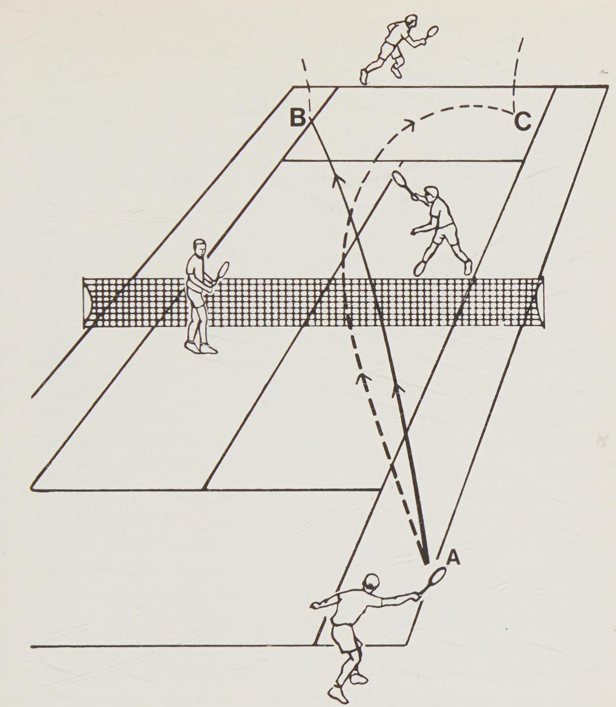
ĐÁNH BÓNG BỀN SAU GIAO BÓNG Mặc dù các chuỗi đánh bóng bền trong đánh đôi hiếm khi kéo dài như trong đánh đơn, nhưng một lượng nhất định các pha đánh bền cuối sân vẫn diễn ra. Nó thường kéo dài hơn từ phía bên phải sang ô bên phải, thuận tay đối thuận tay.
Trừ khi cú trả giao bóng của đối thủ quá ngắn và cao đến mức bạn có thể dứt điểm một cú thắng vượt qua đối tác đứng lưới của anh ta hoặc gần như đánh xuyên qua anh ta, bạn sẽ sớm nhận ra rằng bạn muốn đối tác đứng lưới này đứng lùi lại (nhận bóng Hai Dưới) thay vì đứng ở lưới (nhận bóng Một trên Một dưới). Đội hình nhận bóng Hai Dưới cho phép người giao bóng nhiều không gian hơn. Từ một cú trả giao bóng yếu đến trung bình, bạn có thể tấn công vào trái tay của bất kỳ đối thủ nào. Đối với một cú trả bóng mạnh hoặc khó chịu, bạn không có một người đứng lưới đối phương đe dọa đứng ngay trên đầu mình.
Các pha đánh bền chống lại đội hình nhận bóng Một trên Một dưới thường theo mô hình hiển thị trong Hình 9, với cả hai người đứng lưới cố gắng chặn bóng nếu có thể.
Nếu bạn có cú thuận tay mạnh hơn đối thủ ở cuối sân, chiến thuật của bạn là làm anh ta kiệt sức. Đừng coi điều này là thiếu sáng tạo, vì việc chiếm ưu thế trong một cuộc trao đổi cú drive thuận tay không bao giờ nhàm chán. Nếu cú thuận tay của anh ta tốt hơn của bạn, chiến thuật của bạn là phá vỡ bất kỳ cuộc trao đổi drive nào càng sớm càng tốt, trước khi quá muộn.
Cú đánh đầu tiên được ưu tiên trong việc phá vỡ dự định này là một cú lốp bóng qua đầu người đứng lưới đối phương. Đó không chỉ là tránh cuộc trao đổi drive, mà là tấn công. Nếu bạn không để mắt để thực hiện cú đánh này ngay khi có cơ hội, bạn có thể không có cơ hội thứ hai. Bạn có khả năng phải nhận phần thua trong cuộc trao đổi drive và bị buộc phải lốp bóng phòng thủ. Khi đó, người đứng lưới sẽ chiếm thế chủ động, bất kể anh ta chọn tấn công một hay nhiều lần.
Nếu không có cơ hội để đánh bóng qua đầu người đứng lưới, lựa chọn
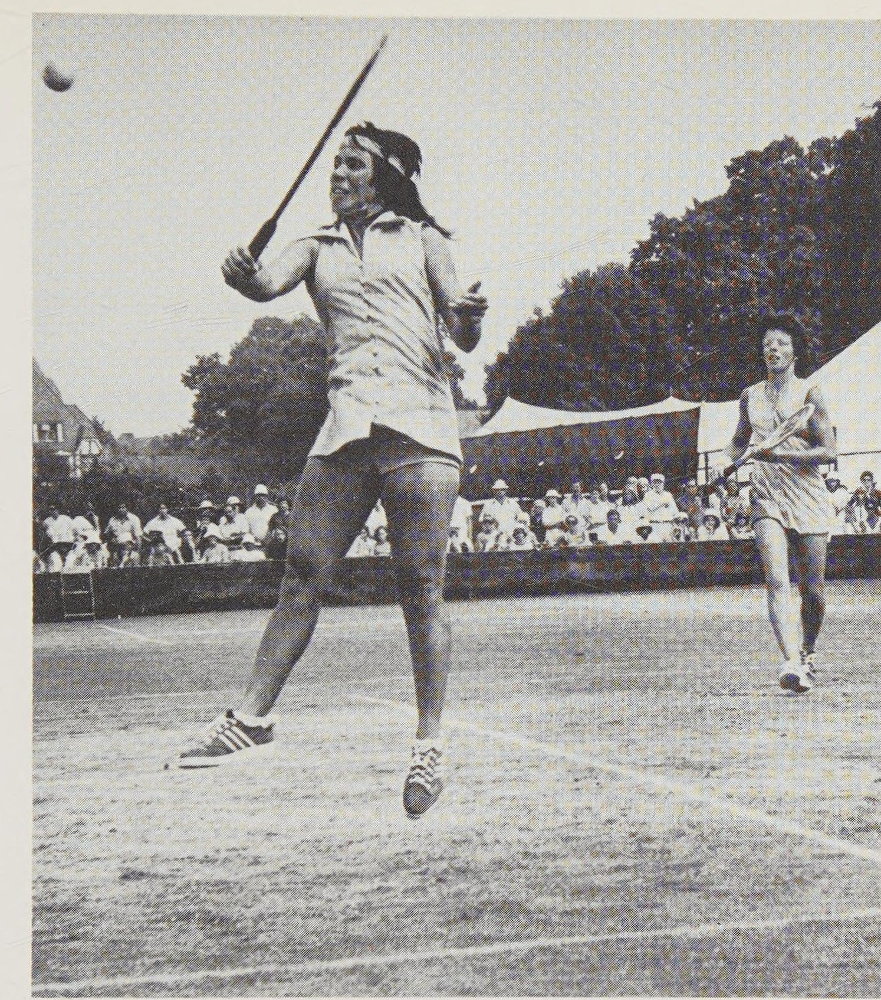
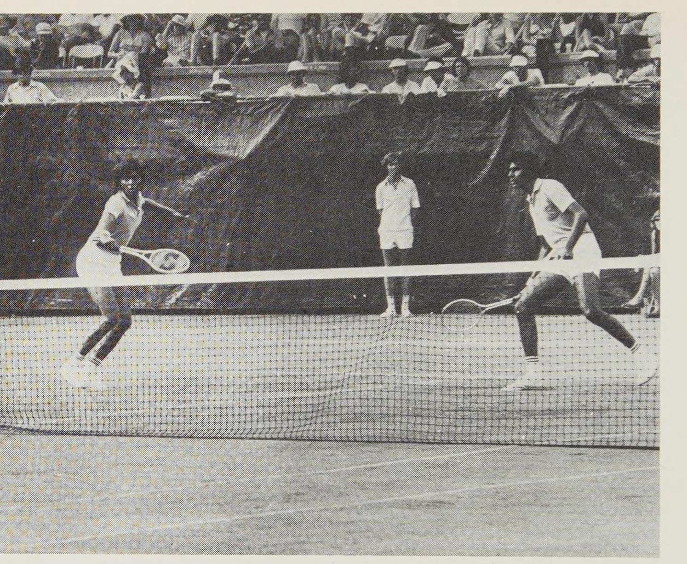
Lựa chọn cú đánh tiếp theo để phá vỡ cuộc trao đổi là đánh quả bóng trở lại đối thủ cuối sân cao, chậm và sâu, và chờ đợi diễn biến. Đây thường là một chiến thuật tốt hơn là thử một cú bóng ngắn, điều mà dễ dàng chỉ là yếu hơn là gây khó khăn vì quá ngắn. Đối với cú đánh vượt qua dọc theo đường biên của người đứng lưới, nếu nó không thành công, đó gần như chắc chắn là một điểm thua cho phía bạn.
Biết điều này, bạn sẽ có thể tránh rơi vào trạng thái thiếu kiên nhẫn-tự sát thường thấy trong đánh bền Một trên Một Dưới. “Đánh vào khoảng sân trống” là kim chỉ nam của bạn.
Trong đánh bền từ phía bên phải sang ô bên phải ở đánh đôi nữ, các bạn nữ sử dụng cú lốp bóng qua đầu người chơi lưới thường xuyên hơn nhiều so với nam giới. Điều này có thể hiểu được, vì cầu thủ nữ trung bình không thể với cao như vậy và hài lòng hơn với việc chỉ đánh bóng vượt qua và để mọi thứ cho đối tác cuối sân của mình.
Trong đánh đôi nam nữ, sự dễ bị tổn thương trước các cú lốp bóng qua đầu bạn nữ là gót chân Achilles của bất kỳ cặp nào xếp đội hình với bạn nam chơi ở ô bên phải và bạn nên luôn nhận thức đầy đủ về điều này. Lốp bóng qua người đứng lưới trong đánh đôi nam ít dễ dàng hơn, nhưng từ bất kỳ cú đánh rộng nào, bạn chỉ phải lốp qua phía trái tay của anh ta.
Tóm lại, lốp bóng qua người đứng lưới nên là một phần của lối chơi của bạn thay vì là một sự tình cờ. Hãy học tập các bạn nữ.
Lý do cho việc các pha trao đổi từ phía bên phải sang ô bên phải thường diễn ra là vì cả hai cầu thủ cuối sân trong hai góc đối diện chéo này có xu hướng đứng lùi.
Không ai mạo hiểm tiến lên lưới, dù là chống lại cú drive thuận tay của đối phương hay cú lốp thuận tay qua đầu người đứng lưới. Tuy nhiên, từ phía bên trái sang ô bên trái, bạn nên chiếm lĩnh lưới ngay khi bạn đã thực hiện một cú đánh tốt. Trái tay của đối thủ ít có khả năng quá tốt so với khả năng vô-lê của bạn, và nếu anh ta thực hiện một cú lốp trái tay qua đầu đối tác của bạn, nó sẽ nằm ở phía thuận tay của bạn, nơi bạn có thể bao quát được. Thường là một chiến thuật thua cuộc việc bị ghim ở vạch cuối sân trái tay, với một người đứng lưới lơ lửng đối diện bạn.
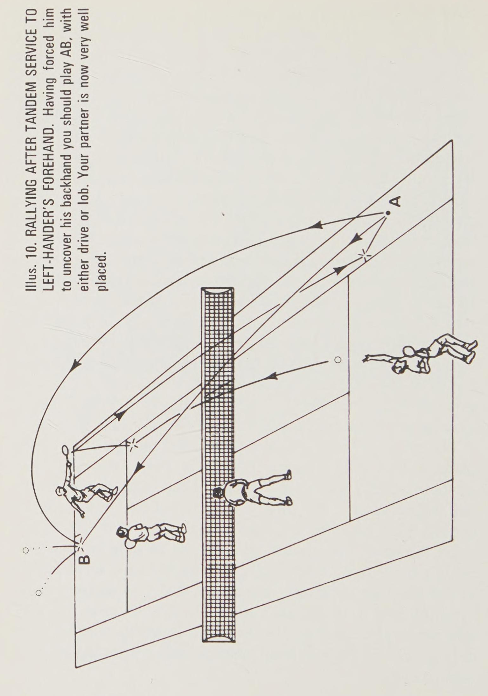
Bạn sẽ thấy nhận định cuối cùng đặc biệt chính xác khi bạn giao bóng cho một người thuận tay trái ở ô bên trái, người có khả năng dập liên tiếp những cú thuận tay vào góc trái tay của bạn. Nếu bạn không thích tiến lên lưới chống lại thuận tay của đối thủ ô bên phải, thì việc làm vậy chống lại một cú thuận tay trái thường mạnh hơn thuần túy là như đem đầu mình đặt vào miệng sư tử. Còn về việc lốp bóng qua người đứng lưới, đó là cú lốp trái tay của bạn chống lại cú đập thuận tay của anh ta, và bạn có thể trở nên không chắc chắn. Một chiến thuật tốt hơn, như chúng ta đã thấy, là giành quyền chủ động và chơi Đội hình Song hành (Tandem).
Khi chơi Song hành, bạn có thể giao bóng vào trái tay của người thuận tay trái để nhận được một cú trả bóng mà bạn có thể xử lý bằng thuận tay của mình. Hoặc, bạn có thể giao bóng rộng để buộc anh ta để hở trái tay cho cú trả bóng tiếp theo của bạn. Như hiển thị trong Hình 10, điều này có thể là một cú drive hoặc cú lốp. Đây là lối chơi chủ độngtốt hơn nhiều so với việc bị mắc kẹt trong góc trái tay, thậm chí cảm thấy như mình đang ở dưới một cái hố.
GIAO BÓNG THUẬN TAY TRÁI Trong một phần trước, Giao bóng sang Ô bên Trái, bạn đã thấy rằng thông thường là một chiến thuật tồi cho người thuận tay phải khi để hở trái tay cho đối phương tấn công bằng cách đứng ngay bên trái vạch trung tâm và giao bóng dọc theo đường trung tâm của ô bên trái. Hình ảnh phản chiếu của tình huống đó có vẻ là bạn, với tư cách là một người thuận tay trái, đứng ngay bên phải vạch trung tâm và giao bóng dọc theo đường trung tâm của ô bên phải. Nhưng đây không phải là một tình huống đảo ngược hoàn toàn và những khác biệt sẽ thay đổi kết quả thực tế.
Thứ nhất, cú giao bóng thuận tay trái của bạn hướng về trái tay của đối thủ, và ít cầu thủ ô bên phải có thể đánh một cú trái tay sang phía không thuận của họ với sức xuyên thấu như một cú thuận tay từ ô bên trái. Thứ hai, bạn có thể có một cú giao bóng cắt thuận tay trái uốn cong buộc đối thủ phải chơi trái tay
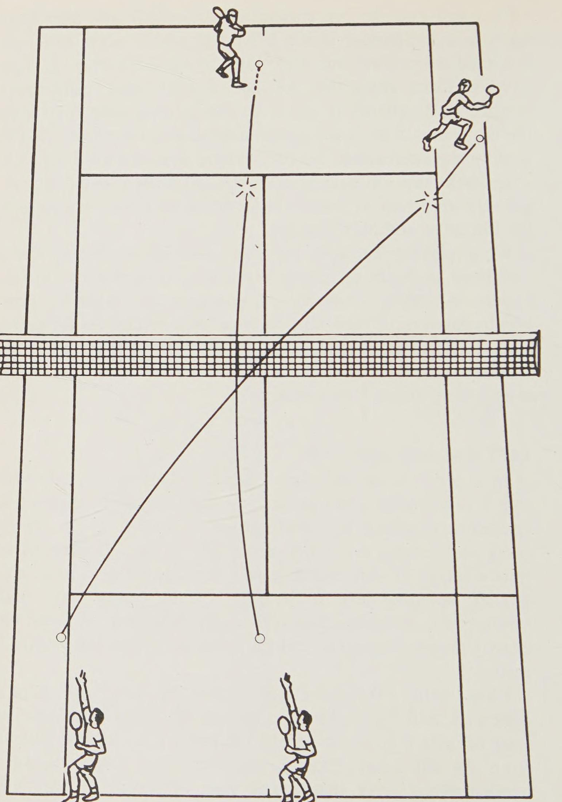
Gần như từ phía sân của đối tác anh ta. Xem Hình.
Ngoài việc kéo giãn đối thủ, cú giao bóng sang ô bên phải này cho phép đối tác đứng lưới của bạn di chuyển tốt về phía trung tâm của sân với ít rủi ro để hở đường biên dọc của mình. Để giao bóng từ vị trí rộng hơn nhằm bảo vệ trái tay sẽ phá hủy hiệu quả của cú giao bóng. Tóm lại, nếu bạn cảm thấy đối thủ không thể xử lý cú giao bóng từ vạch trung tâm của bạn, hãy dùng nó để tấn công anh ta. Chỉ khi anh ta có thể xử lý nó, bạn mới nên di chuyển ra một vị trí phòng thủ hơn.
Tương tự, nếu bạn làm chủ được cú giao bóng cắt uốn cong này, bạn nên giao bóng từ vị trí rộng phía bên trái sang ô bên trái. Đối thủ sẽ cố gắng lốp bóng qua đầu đối tác của bạn, rộng về phía trái tay của bạn (hình ảnh phản chiếu của Tình huống DEF trong Hình 3 ở trang 15) nhưng anh ta sẽ không chính xác nếu anh ta thực hiện hầu hết các nỗ lực từ gần hàng rào biên. Có lẽ Hình 11 hơi cường điệu một chút ở đây, nhưng ai biết được một cơn gió tạt ngang hỗ trợ không bao giờ thổi? Dù sao, tất cả nó là một ví dụ điển hình về một cú đánh mạnh được sử dụng hết giá trị thay vì bị hạn chế bởi chiến thuật hoặc vị trí.
Dù cường điệu hay không, trong Hình 11, một cú giao bóng cắt uốn cong trông ra là tự nhiên nhất đối với một người thuận tay trái, nhưng không may là không hiều cầu thủ có được nó như mong đợi. Truy nguyên về nguồn gốc, khi bạn bắt đầu chơi tennis, bạn không có cú giao bóng mạnh và bạn cần bảo vệ trái tay của mình. Vì vậy bạn đứng xa vạch trung tâm—ở phía bên phải, gần vạch trung tâm này hoặc từ vị trí rộng phía bên trái, cú giao này có thể hiệu quả đến mức một người giao bóng thuận tay trái có thể chấp nhận để hở trái tay của mình đến mức tối đa. Ở phía bên phải bạn có thể thấy nó bị hở, và ở bên trái nó sẽ bị hở nếu người nhận lốp bóng qua người đứng lưới.
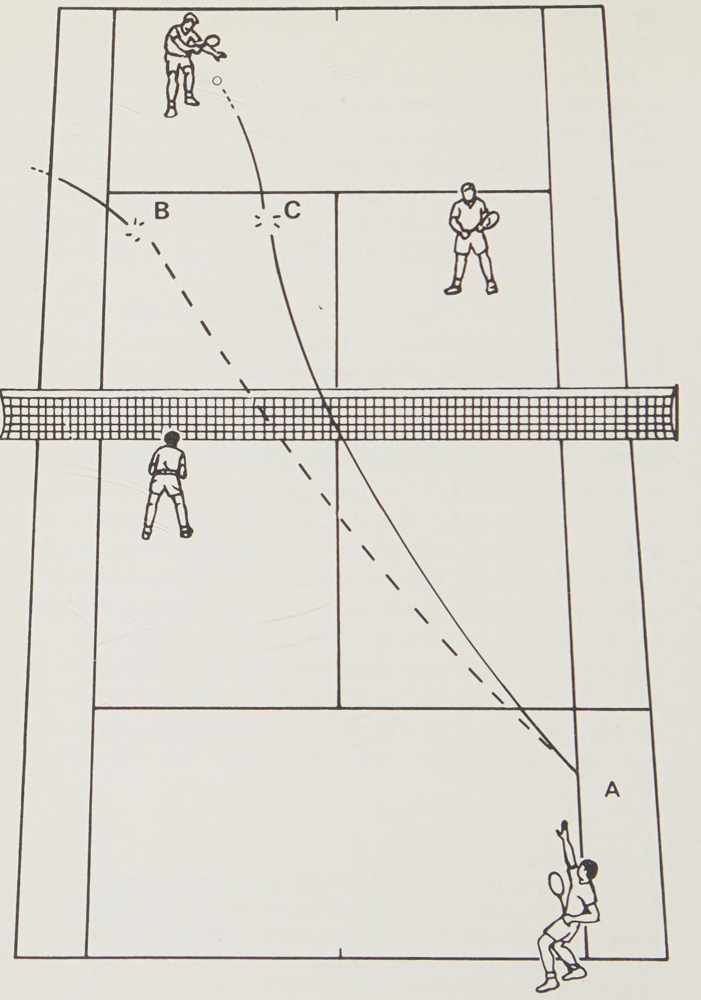
Nơi trò chơi bắt đầu—và giao bóng, sang phía không thuận, tức là bên trái của bạn.
Điều này trở thành cách giao bóng tự nhiên hơn của bạn, thay vì cắt quanh quả bóng.
Nếu bạn muốn phát triển một cú giao bóng cắt, hãy tập luyện từ từ.
Bạn có nhiều khả năng bị chấn thương vai từ áp lực liên tục của một hành động giao bóng mới hơn là từ bất kỳ điều gì khác, chẳng hạn như đánh hỏng một hoặc hai cú smash hoang dã.
Hầu hết những người thuận tay trái thích loại giao bóng hành động xoáy lên.
Sử dụng cú giao như vậy, bạn có thể đứng rộng ở phía bên phải, giao bóng rộng sang thuận tay của đối thủ, và có sẵn cú thuận tay của chính mình cho hầu hết các cú trả bóng. Giống như cú giao bóng cắt uốn cong trong Hình 11, khái niệm ở đây là gây khó khăn cho đối thủ bằng cách kéo giãn anh ta ra. Tuy nhiên, tất cả những người thuận tay trái cũng nên nhận thức rõ về khả năng bẩm sinh trong việc kiềm chế hoặc làm gò bó đối thủ nhận bóng. Xem Hình 12.
ĐỐI TÁC ĐỨNG LƯỚI CỦA NGƯỜI GIAO BÓNG Như đã chỉ ra ở Hình 8 trang 35, khi nói về Tandem, người đứng lưới trung bình đứng quá gần cả lưới và đường biên dọc để có hiệu quả.
Anh ta bảo vệ đường biên dọc của mình như thể sẽ là một nỗi nhục nếu từng có một cú thắng đi xuống đó, nhưng anh ta thản nhiên để quả đường biên đôi và tung bóng trên đầu và hơi lệch sang phải.
Điều này đe dọa một cú giao xoáy lên rộng văng ra, AB. Thay vào đó, giao bóng gần như thẳng vào người nhận, AC. Độ cong uốn quả bóng hơi lệch sang trái anh ta, và sau đó cú nảy bật lên và gãy vào phía cơ thể anh ta, buộc anh ta phải thực hiện một cú trái tay gò bó với ít hoặc không có lực. Tương tự, từ phía bên trái, bạn có thể đẩy một cú giao bóng cắt vào sát cơ thể người nhận ở phía thuận tay. Chắc chắn đó phải là một trong những niềm vui của cuộc sống khi có một cú giao bóng thuận tay trái thực sự tốt. Bóng bay qua anh ta dọc theo trung tâm để đối tác của anh ta xử lý, gần như thể cầu thủ này không có đường biên dọc riêng để bao quát. Khi người nhận lốp bóng, người đứng lưới để nó vòng qua đầu mình và chỉ đơn giản là di chuyển sang phía bên kia, hài lòng rằng anh ta đã hoàn thành nhiệm vụ chiến thuật của mình bằng cách không đứng im ở phía sai lầm như một người mới bắt đầu. Khi đối tác của anh ta mất giao bóng, anh ta thường coi điều này hoàn toàn là do đối tác không giao bóng hoặc đánh bền đủ tốt.
Không phải vì người đứng lưới trung bình tự mãn hay vô cảm. Nhìn chung, anh ta đánh giá thấp sự hữu ích của chính mình cho đội. Đặc biệt, anh ta quá tự ý thức về việc bảo vệ đường biên dọc của mình.
Anh ta cũng sai lầm về khả năng vô-lê của mình. Biết rằng mình không vô-lê tốt, anh ta lý luận rằng mình càng đứng gần lưới bao nhiêu thì càng có nhiều khả năng đưa bóng qua lưới, ngay cả khi đánh hỏng. Sự thật là nếu anh ta đứng lùi lại một chút so với lưới, anh ta sẽ có nhiều thời gian hơn để quan sát bóng và anh ta sẽ thực hiện cú vô-lê tốt hơn. Còn về những cú đánh hỏng, chúng hiếm khi qua lưới, bất kể bạn đứng gần lưới đến mức nào.
Nếu bạn từng là một người đứng lưới khiêm tốn, bạn sẽ thấy rằng việc đứng lùi lại cho bạn nhiều thời gian hơn để chặn bóng—để hỗ trợ đối tác của bạn bằng cách bảo vệ trung tâm ở một mức độ nào đó. Nó cũng ngăn đối thủ lốp bóng qua đầu bạn, ít nhất là với một cú lốp kém.
Còn về đường biên dọc mà bạn bảo vệ một cách hăng hái, bạn có nhiều thời gian hơn để bảo vệ nó.
Tham gia Lần tới khi thi đấu, hãy đứng lùi lại, gần như nửa đường lùi về vạch giao bóng, và xem bạn xoay xở ra sao. Bạn có lẽ sẽ chơi tốt chống lại những quả bóng cao, nhưng nếu một trong những người nhận buộc bạn mắc lỗi với những cú vô-lê thấp, bạn nên đứng gần lưới hơn một chút chống lại người nhận cụ thể đó. Có một điều chắc chắn: bạn sẽ cảm thấy sự quan tâm và cảm giác tham gia lớn hơn khi đối tác của mình đang giao bóng, thay vì gần như bị gạt ra khỏi cuộc chơi và chờ đợi nó kết thúc để bạn có thể tham gia trở lại.
Khi bạn đã tự tin chơi từ vị trí lùi sâu hơn, bạn nên thử đứng xa đường biên dọc hơn một chút.
Đừng thử cả hai bước cùng lúc, hoặc vị trí mới của bạn có thể cảm thấy quá khác lạ và không thoải mái.
Không có vị trí đứng lưới cố định cho tất cả mọi người, vì vậy hãy thử nghiệm và tìm ra vị trí của riêng bạn. Ngay cả điều đó cũng sẽ thay đổi tùy theo những người nhận khác nhau và bạn có thể thích một vị trí hơi khác khi chơi ở phía bên phải hoặc bên trái của sân. Tổng cộng, bạn cần cảm thấy rằng đường biên dọc của mình đủ an toàn, rằng bạn có thể chạm tới một cú lốp ngắn, và đồng thời bạn sẵn sàng và khao khát bao quát trung tâm ở một mức độ nào đó. Để có ý niệm về phạm vi bao quát hợp lý, xem Hình 13.
Nếu bạn vẫn còn nghi ngờ về bất kỳ điều gì trong số này và nghĩ rằng nó chỉ áp dụng cho những người vô-lê giỏi, bạn nên học một bài học từ đối thủ của mình. Khi nhận bóng, chẳng phải bạn thích thấy người đứng lưới đối phương là một con mèo thuần thục sao? Trước đây bạn cũng có thể ngần ngại chiếm lĩnh vị trí lưới khi đối tác của bạn đang nhận bóng, nhưng với tư cách là một người chơi lưới tích cực, bạn sẽ nhận ra lợi ích của việc làm điều này, ít nhất là bất cứ khi nào anh ta nhận cú giao bóng hai.
Vô-lê Muốn thực hiện những cú vô-lê thành công? Bạn sẽ nhanh nhẹn hơn nhiều theo cách đó và ít có khả năng đánh hỏng hơn nếu bạn ngần ngại. Hãy cố gắng đánh bóng thay vì cảm thấy bóng đang đánh bạn. Hãy tạo một vết bầm trên nó.
Giữ vợt chắc chắn và giữ cổ tay vững. Thực hiện một cú đánh ngắn và dứt khoát. Một cổ tay yếu và đầu vợt bị kéo lê hoặc rủ xuống trông thảm hại hơn bất kỳ khuôn mặt cầu thủ nào.
Nếu bóng cao và chậm về phía thuận tay, hãy trượt chân trái phía trước. Điều này đưa bạn gần lưới hơn và đồng thời xoay người nghiêng so với lưới. Cả hai hành động đều ngăn bạn
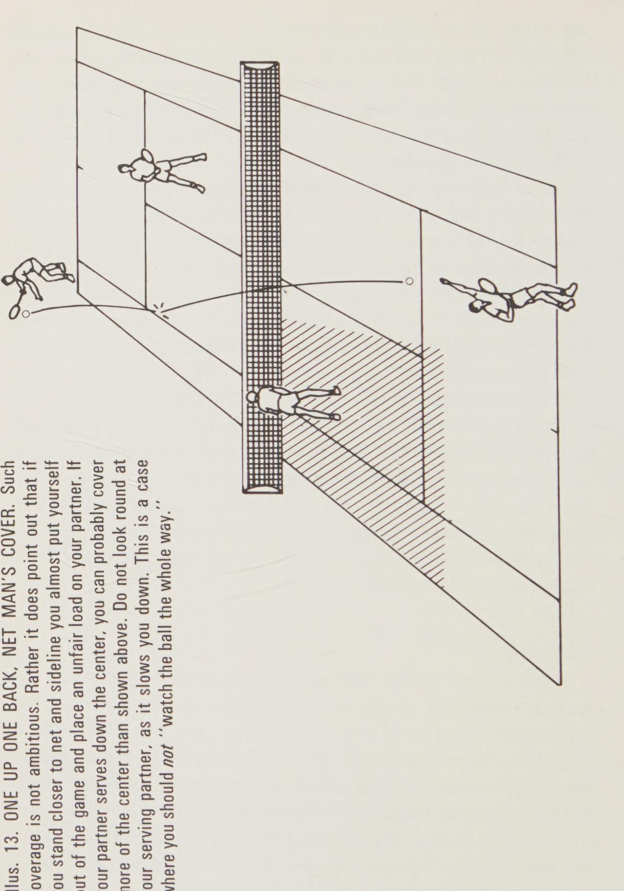
Đánh bóng rộng ra khỏi sân. Nếu một quả bóng tương tự bay về trái tay, hãy trượt chân phải về phía trước. Đây là những gợi ý đơn giản. Chà, vô-lê là dễ nhất khi bạn đứng tại lưới trong đánh đôi.
Đập bóng (Smashing) Hãy coi đó là chiến thuật đánh đôi chính xác rằng bạn nên luôn cố gắng chạm tới càng nhiều cú lốp càng tốt và đập chúng, thay vì chỉ lặng lẽ di chuyển sang phía bên kia và để chúng cho đối tác của bạn. Đừng tưởng tượng rằng bạn luôn phải đập hết sức, cũng như bạn không phải lúc nào cũng giao bóng theo cách đó.
Đường đi hướng xuống của một cú đánh trên đầu khiến quả bóng nảy lên cao một cách khó chịu cho đối thủ. Do đó, các cú đập bóng của bạn thường sẽ gây khó khăn cho đối thủ nhiều hơn là cú đánh của đối tác giao bóng của bạn. Sử dụng một hành động tương tự như cú giao bóng của bạn, nhưng không hoàn toàn giống hệt vì bạn không cần vung vợt nhiều như vậy. Để giao bóng, hãy đưa vợt lên phía sau cơ thể; để đập bóng, hãy đưa vợt lên phía trước.
Khi Bạn bị Lốp bóng qua đầu Để rõ ràng, hãy lấy hai trường hợp cực đoan.
Tất nhiên là điều đó hiển nhiên. Nhưng hãy quan sát các cặp khác, và hết lần này đến lần khác bạn sẽ thấy người đứng lưới di chuyển thẳng sang ngang và chỉ bắt đầu loạng choạng lùi lại khi đối thủ chuẩn bị đập bóng—và anh ta kết thúc bằng việc thu bóng bằng dây giày của mình.
Bạn có thể đang rút lui theo đường chéo hướng tới đội hình Hai Dưới chỉ để thấy rằng đối tác của bạn đang thực hiện một cú cứu bóng tuyệt vời bằng cú lốp trái tay.
Anh ta gửi một quả bóng chéo dài sẽ rơi sâu vào góc trái tay của đối thủ và khiến họ phải phòng ngự. Hãy dừng việc rút lui ngay lập tức và tiến lên, tái lập đội hình tấn công Một trên Một dưới của bạn một lần nữa.
Bạn cũng sẽ thấy những cầu thủ không làm được điều này, nhưng tất cả những gì mà chiến thuật chính xác hướng tới là, “Một trên Một dưới để tấn công. Hãy Thực hiện đi Bạn không được kỳ vọng phải trở thành một chuyên gia vô-lê và đập bóng, bao quát hoàn toàn trung tâm và xử lý mọi cú lốp hướng về phía sân của mình. Nếu bạn làm được, bạn sẽ chơi với một đối tác có khả năng tương đương và cả hai sẽ chơi lối chơi Lên lưới thay vì Một trên Một dưới.
Tuy nhiên, chiến thuật yêu cầu bạn phải thực hiện một mức độ bao quát lưới nhất định—nếu không đối thủ sẽ thực sự như chơi hai chống một—vì vậy hãy thực hiện đi.
Tương tự, các bạn nữ có lẽ sẽ đồng ý rằng trong đánh đôi nữ người chơi lưới thường thu mình sát vào góc tạo bởi lưới và đường biên dọc, để đối tác giao bóng tự xoay xở một mình. Lý luận khiêm tốn của cô ấy là cô tin rằng các cú đánh cuối sân của đối tác an toàn hơn là lối chơi lưới của chính mình. Có lẽ đúng là vậy, nhưng liệu chúng có luôn hiệu quả hơn?
Hãy để điều đó chưa ngã ngũ, nhưng hãy khẳng định rằng bất kỳ bạn nữ nào vô-lê tự tin nên rời khỏi cái góc lưới-biên dọc đó và đóng góp vai trò quan trọng của mình trong trận đấu.
Người chơi lưới ngần ngại nhất trong tất cả là bạn nữ trong đánh đôi nam nữ, gần như có một tình yêu với cột lưới. Nếu bạn là một người như vậy, không yêu cầu bạn phải nở rộ sau một đêm thành một chuyên gia vô-lê bao quát trung tâm đầy táo bạo, nhưng bạn thực sự nên đứng lùi lại để ngăn chặn các cú lốp bóng được đánh vào bạn. Nếu bạn liên tục bị lốp bóng qua đầu bởi bạn nữ đối phương ở ô bên phải, bạn đang cho phép cú thuận tay của đối tác mình bị loại bỏ khỏi cuộc chơi chỉ trong một cú đánh—một cú đánh được thực hiện bởi thành viên yếu hơn của cặp đối thủ, trong khi cùng lúc đó đối tác của cô ấy làm chủ lưới.
Chặn bóng (Intercepting) Nếu nghi ngờ cuối cùng của bạn về lối chơi lưới liên quan đến việc chặn bóng, đây là hai nguyên tắc cơ bản:
Bất kỳ quả bóng nào bạn có thể đánh thành một cú thắng chắc chắn trong một cú đánh là của bạn. Không quan trọng nếu bạn băng thẳng sang đường biên dọc của đối tác cuối sân và kết thúc bằng cách tựa vào hàng rào biên. Điểm số đã kết thúc. Bạn, người chơi gần lưới hơn, là người thích hợp để thực hiện điều đó.
Trong bất kỳ vị trí nào mà bạn có thể thực hiện một cú đánh xuyên thấu hơn với cú vô-lê của mình so với cú đánh cuối sân mà đối tác của bạn có thể thực hiện và bạn có thể quay trở lại vị trí ban đầu ngay lập tức mà không mất thăng bằng, thì cú đánh đó là của bạn.
Đó không phải là cướp bóng (poaching hoặc sharking, đặc biệt là trong đánh đôi nam nữ). Đó là chặn bóng. Hãy áp dụng bài kiểm tra đối thủ một lần nữa; chẳng phải sẽ đơn giản hơn nhiều khi đối đầu với một cặp mà người đứng lưới của họ không bao giờ chặn bóng sao?
Được chơi theo cách này, chặn bóng là một chiến thuật vững chắc, không hề có một sự mạo hiểm nào đi kèm. Tuy nhiên, thỉnh thoảng bạn sẽ thấy một người chơi lưới giỏi làm nhiều hơn thế. Sau khi quyết định rằng đối thủ đã cam kết thực hiện một cú drive chéo sân, anh ta lao vượt xa trung tâm và thực hiện một cú vô-lê thắng điểm. Không gì thành công như sự thành công, vì vậy nó được gọi là một cú chặn bóng táo bạo. Nhưng ếu đối thủ đánh lừa được người đứng lưới này và, vào giây cuối cùng, thay đổi hướng đánh và dễ dàng vượt qua anh ta dọc theo đường biên dọc bị hở rộng—thì anh ta phải trả giá cho sự không thành công và bị gọi là 'kẻ săn mồi' (shark).
Những cú chặn bóng táo bạo chỉ có thể được thực hiện nhất quán khi đối thủ không đủ giỏi để đánh lừa bạn. Ở nơi anh ta có thể làm vậy, và bạn phải đợi thêm một phần nhỏ thời gian để chắc chắn anh ta không thể thay đổi hướng, bạn sẽ quá muộn cho một cú chặn bóng táo bạo. Thật thất vọng khi nghe điều này—nhưng đó là tennis.
3. MỘT TRÊN MỘT DƯỚI—NHẬN GIAO BÓNG
Nhận bóng Một trên Một dưới có nghĩa là người chơi trả giao bóng thường đứng lùi lại và chơi các cú đánh cuối sân và đối tác của anh ta chiếm vị trí lưới và chặn bất cứ điều gì anh ta có thể một cách an toàn. Đôi khi đối tác của người nhận đứng lùi lại trong khi cú giao bóng một được thực hiện và đôi khi người đứng sau (người nhận giao bóng) tiến lên sau khi đánh một quả bóng ngắn, nhưng đội hình cơ bản của họ được phân loại là Một trên Một dưới.
NGƯỜI ĐỨNG LƯỚI Mặc dù người đứng lưới thường chiếm vị trí sai khi đối tác của anh ta đang giao bóng, chính người đứng lưới này, khi anh ta trở thành người đứng lưới nhận bóng, hiếm khi hoặc không bao giờ thu mình vào góc chật hẹp gần lưới và đường biên dọc. Với góc nhìn thay đổi, bây giờ anh ta tìm kiếm sự tham gia thay vì né tránh nó. Anh ta thường chờ đợi diễn biến từ ngay phía trong vạch giao bóng.
Sau đó, khi đối tác của anh ta đánh bóng an toàn vượt ra ngoài tầm với của người đứng lưới đối phương hoặc qua đầu anh ta, anh ta tiến lên—không quá gần, nhưng đến nơi mà anh ta cảm thấy mình có cơ hội tốt nhất để chặn bóng. Anh ta không để hở đường biên dọc của mình, nhưng anh ta ít quan tâm đến điều đó hơn khi anh ta ở lưới với đối tác của mình đang giao bóng.
Điều này là tự nhiên đối với anh ta. Đối tác của anh ta sẽ drive hoặc lốp bóng về phía cuối sân và vì vậy người giao bóng sẽ ở xa và người đứng lưới nhận bóng cảm thấy khao khát được tham gia. Ngược lại, khi đối tác của anh ta giao bóng (và bóng phải rơi vào ô giao bóng và vì thế là ngắn), người đứng lưới của bên giao bóng cảm thấy rằng người nhận gần như đang đứng ngay trên đầu mình. Anh ta đứng trong góc của mình, quyết tâm bảo vệ đường biên dọc hoặc bị đánh bại trong nỗ lực đó.
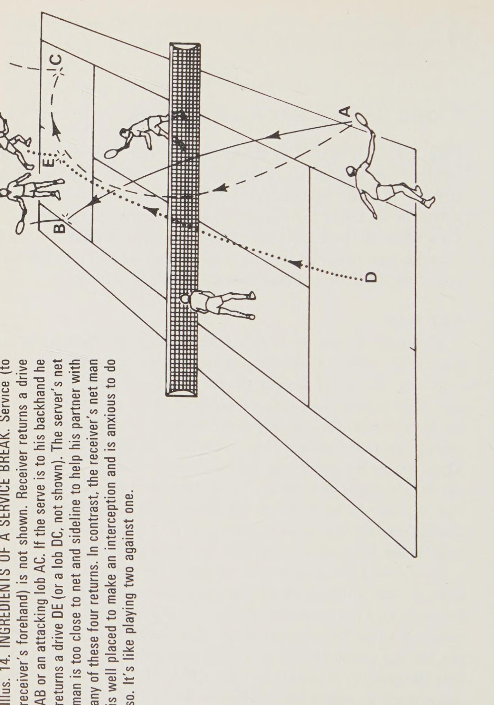
Hệ quả trong đánh đôi Một trên Một dưới là thường thì cặp nhận bóng tự nhiên chiếm vị trí tốt hơn cặp giao bóng. Đây là một lý do (thuần túy chiến thuật) tại sao các cú giao bóng bị phá vỡ thường xuyên hơn ở cấp độ chơi thấp hơn là ở tiêu chuẩn cao hơn. Xem Hình 14.
CHỌN PHÍA SÂN Bạn nên cảm thấy thoải mái khi nhận bóng ở cả ô bên phải hoặc bên trái, vì khả năng này cho phép bạn phối hợp với nhiều loại đối tác. Tuy nhiên, một khi bạn lập đội với một đối tác cố định, mỗi người trong số bạn nên chọn một ô hoặc ô kia và đứng yên ở đó.
Bằng cách này, bạn sẽ phát triển một sự kết hợp tốt hơn so với điều có thể nếu bạn liên tục thay đổi. Dưới đây là một số hướng dẫn để chọn sân.
Ô bên phải nên được chọn bởi người chơi có cú thuận tay tốt hơn và ô bên trái bởi người chơi có cú trái tay tốt hơn. Đừng tưởng tượng rằng điểm mạnh của bạn nên hướng về trung tâm vì lý do là đối thủ có thể hướng hầu hết các cú đánh vào đó. Yếu tố chi phối là cú trả giao bóng. Vì người giao bóng đối phương có thể dễ dàng chạm tới hai cánh ngoài của cả hai người nhận, việc đặt điểm mạnh của bạn ở trung tâm sẽ có nghĩa là anh ta có thể đưa một tỷ lệ cao các cú giao bóng một vào sân về phía những mặt yếu của bạn.
Nếu một người chơi tốt hơn ở cả thuận tay và trái tay so với đối tác của mình, anh ta thường là cầu thủ mạnh hơn và nên chọn ô bên trái. Từ phía này, anh ta có thể bao quát nhiều phần của sân hơn và chiếm lĩnh nhiều hơn cuộc chơi.
Hai đối tác có thể có những cú thuận tay và trái tay hợp lý, nhưng một người chuyên về drive và người kia chuyên về vô-lê. Người vô-lê nên chơi ở ô bên trái, từ đó anh ta có thể chặn bóng tốt hơn, và thực hiện nhiều cú đánh trên đầu hơn.
Một người thuận tay trái nên chơi ở ô bên trái. Có ý kiến cho rằng điều này dẫn đến việc có hai cú trái tay dọc theo đường trung tâm Người thuận tay Phải Cú Drive Thuận tay mạnh Người thuận tay Trái Cầu thủ yếu hơn Người Cầu thủ mạnh hơn Ô bên Phải Ô bên Trái Người Vô-lê tốt hơn trung tâm, điều này là một điểm yếu. Đúng, nhưng cặp đấu này sẽ gặp điểm yếu lớn hơn nhiều nếu họ đặt trái tay ra phía ngoài, vì cả hai người nhận đều sẽ để hở trái tay trước những cú giao bóng chéo của đối phương. Điều này tạo cho họ sự tự tin ngay từ đầu và gần như chắc chắn khiến họ giao bóng tốt hơn bình thường. Hơn nữa, trong các pha đánh bền sau giao bóng và trả giao bóng, như được tóm tắt trong Hình 9 ở trang 37, cả hai người nhận chủ yếu sẽ phải đánh trái tay. Bạn có thể nói rằng
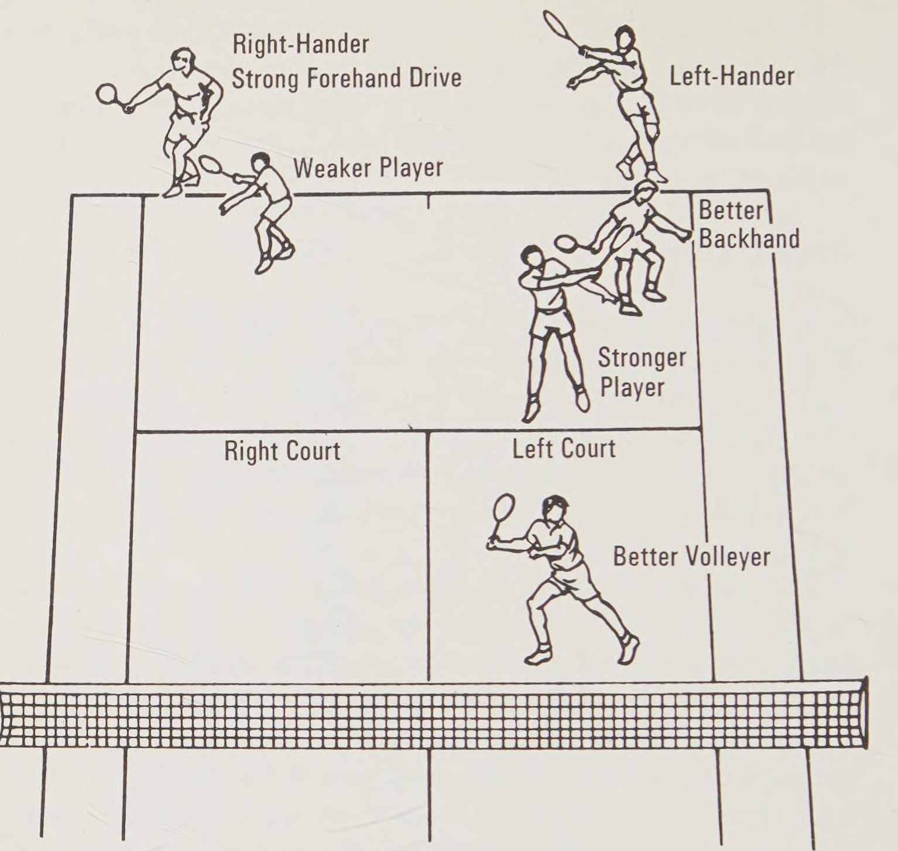
Rằng một người thuận tay trái chơi ở ô bên phải và đối tác của anh ta ở ô bên trái sẽ tạo ra một lối chơi thiên về trái tay.
Điều này chỉ tạm chấp nhận được nếu cả hai đối tác đều ổn định ở cú trái tay hơn là thuận tay. Trong trường hợp tốt nhất, điều đó sẽ tạo ra một cặp phòng ngự.
Một người thuận tay trái với cú thuận tay rất tốt nên luôn chơi ở ô bên trái. Như chúng ta đã thấy trước đó, anh ta có thể thống trị trận đấu.
Hình 15 là bản tóm tắt bằng hình ảnh của tất cả những điều này.
Hầu hết các ngoại lệ rõ ràng hơn là thực tế. Ví dụ, hai đối tác thuận tay trái có thể làm theo các mô hình dành cho hai người thuận tay phải. Nhưng chuyện gì sẽ xảy ra nếu bạn có một người thuận tay phải với cú thuận tay, vô-lê và overhead mạnh mẽ? Anh ta nên chơi ô bên phải để tận dụng tối đa cú thuận tay hay ô bên trái để khai thác khả năng bao quát lưới của mình?
Chà, nếu anh ta có cú trái tay hợp lý, anh ta có lẽ là cầu thủ mạnh hơn trong hai đối tác, và do đó nên chiếm ô bên trái. Nếu cú trái tay của anh ta thấp hơn nhiều so với tiêu chuẩn của cú thuận tay, anh ta có lẽ thành thạo trong việc bước quanh bóng và sử dụng cú thuận tay gần như toàn thời gian, trong trường hợp đó anh ta nên ở ô bên trái. Nếu cú trái tay của anh ta cực kỳ dễ bị tấn công, anh ta sẽ phải sang ô bên phải. Điều đó có nghĩa là khả năng bao quát trung tâm bằng cú overhead sẽ bị mất và hiệu quả vô-lê cũng sẽ bị giảm đến một mức độ nào đó. Chúng không quan trọng bằng khả năng trả giao bóng của anh ta.
Đánh đôi Nữ và Nam Nữ Các tiêu chí chọn bên của nam giới cũng áp dụng cho đánh đôi nữ. Vui lòng xem lại Hình 15.
Trong đánh đôi nam nữ, yếu tố chi phối là sự tham gia nhiều hơn của cầu thủ mạnh hơn và điều đó thường có nghĩa là nam giới nên chơi ở ô bên trái. Không cần tranh luận thêm, hãy chấp nhận những gì đã được chứng minh là đúng qua nhiều năm, cụ thể là, một người nam chiếm ô bên phải phần lớn khiến anh ta bị gạt ra khỏi cuộc chơi. Còn đối với bạn nữ chơi ở ô bên trái, điều đó có khả năng là quá sức đối với cú trái tay của cô ấy. Nếu trái tay tình cờ là cú đánh tốt hơn của cô ấy, điều này là do sự ổn định hơn là tốc độ hoặc sức mạnh thực sự. Do đó, nó khó có thể đánh bại cú giao bóng của đối phương là nam và đối với cú giao bóng của bạn nữ, cô ấy vẫn phải đối mặt với việc đánh bóng băng qua một người đứng lưới đầy hăng hái. Vì vậy trong đánh đôi nam nữ, gần như luôn là nữ bên phải và nam bên trái.
Một bạn nữ thuận tay trái tạo ra một sự phức tạp. Nếu cô ấy có thể chơi ở ô bên phải, cô ấy nên làm vậy. Không phải vì cô ấy sẽ chơi tốt hơn ở đó, mà vì hiệu quả lớn hơn của bạn nam khi chơi ở ô bên trái thay vì từ bên phải sẽ khiến họ trở thành một cặp mạnh hơn về tổng thể. Để có thể chơi ở ô bên phải, cô ấy cần là một người thuận tay trái với cú thuận tay thẳng và trái tay vững chãi.
Nếu cô ấy là loại người thuận tay trái phổ biến với cú thuận tay xoáy chéo và trái tay xoáy ngược sang phía không thuận, cô ấy sẽ quá không phù hợp với ô bên phải đến mức hiệu quả lớn hơn của bạn nam từ bên trái cũng không bù đắp nổi. Cú trái tay của cô ấy không thể chịu đựng được cú giao bóng của đối phương là nam cũng như không thể tránh khỏi anh ta khi anh ta ở trên lưới. Vì vậy lần này bạn nữ phải có ô bên trái quen thuộc và bạn nam chiếm ô còn lại.
Hy vọng không hề mất đi nếu cả hai đều biết cách chơi đội hình này. Trước hết, cả hai đều có thuận tay hướng ra phía ngoài, vì vậy nhiệm vụ của người giao bóng đối phương sẽ khó khăn hơn.
Giả sử bạn nam trả bóng và tiến lên, đây là một cách thực hành tấn công đánh đôi nam nữ khá chuẩn. Đối tác nữ của anh ta, như những người thuận tay phải, có thể đứng ở lưới hoặc ở cuối sân. Nếu ở phía sau, cú trả bóng của người giao sẽ được đánh dọc theo đường biên đến cô ấy, để tránh người nam đã tiến lên lưới, nhưng nó sẽ chủ yếu đến với cú thuận tay trái của cô ấy, điều mà có lẽ là cú đánh mạnh nhất của cô ấy. Nếu cô ấy đứng ở lưới và đối tác của cô ấy đã trả một cú thuận tay rộng và mạnh, cô ấy không hoàn toàn dễ bị lốp bóng vì một lần nữa, cú lốp sẽ hướng về phía thuận tay của cô ấy, nơi cô ấy có thể với cao hơn. Để tăng sự bảo vệ ở đây, cô ấy không nên đứng gần lưới hơn khoảng nửa đường giữa vạch giao bóng và lưới. Cô ấy cần luôn nhận thức được rằng nếu bị lốp bóng qua đầu, quả bóng sẽ nằm ở phía trái tay của đối tác, nơi khả năng bao quát cú lốp của anh ta bị hạn chế.
Ở mặt bất lợi, khi bạn nam trả bóng và tiến lên, cú đánh của anh ta chủ yếu hướng về thuận tay của người giao. Điều này không xuyên thấu bằng khi anh ta chơi ở ô bên trái và tấn công vào trái tay. Có lẽ sức mạnh ổn định nhất của nam trong đánh đôi nam nữ là khi anh ta trả cú giao bóng hai của bạn nữ sâu vào góc trái tay của cô ấy, rồi tiến lên và bao phủ lưới, và hoặc vô-lê hoặc đập bóng ghi điểm từ cú trả bóng của cô ấy. Sức mạnh đó bị tước mất khi anh ta chơi với một bạn nữ thuận tay trái, nhưng bù lại là các cú trả bóng của cô ấy giờ đây hướng về trái tay của người giao.
Một mặt bất lợi khác là thực tế bạn nam không thể sử dụng cú đánh trên đầu (overhead) một cách tự do. Anh ta cần nhận thức được điều này, vì vậy bất khi nào một cú lốp sắp được tung lên, anh ta nên di chuyển sang bên trái và cố gắng đưa cú đập thuận tay vào cuộc thay vì bị trói buộc vào việc chỉ chơi một cú vô-lê trái tay cao. Tất nhiên, anh ta sẽ dùng cú đập trái tay nếu anh ta có, nhưng ít cầu thủ có và không ai có thể so sánh với cú đập thuận tay.
Từ những điều trên, có thể thấy khá rõ loại nam giới bị thiệt thòi nhất khi chơi ở ô bên phải là người chơi ô bên trái trong đánh đôi nam, nơi anh ta dựa chủ yếu vào việc trả bóng nhanh về trái tay, tiến lên chơi lưới, và là trụ cột của đội với các cú đánh trên đầu.
Tuy nhiên, người luôn chơi ô bên phải trong đánh đôi nam và có cú thuận tay mạnh và thà drive hơn là vô-lê—chà, anh ta thích giữ ô bên phải của mình và anh ta sẽ thích có một đối tác nữ thuận tay trái đánh những cú thuận tay chéo sân từ ô bên trái.
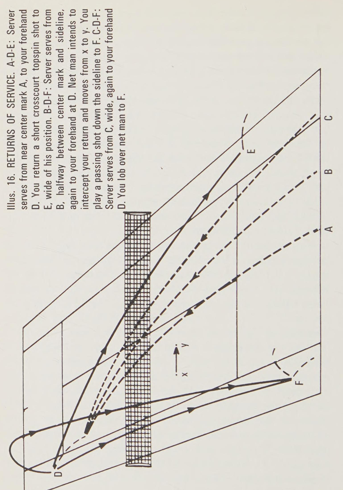
Tennis có những hạn chế của nó, nếu không chúng ta đều sẽ hoàn hảo, nhưng có vẻ như luôn có một câu trả lời thỏa đáng cho hầu hết mọi thứ.
Hai người thuận tay trái, cả hai đều có cú thuận tay chéo sân và trái tay sang phía không thuận? Về mặt chiến thuật, đó là một thảm họa. Sự ga lăng đơn thuần nên chiếm ưu thế và bạn nữ nên được trao ô bên trái yêu thích của mình.
TRẢ GIAO BÓNG Đánh đôi nam nữ có những đặc thù riêng, nhưng ngoài ra bạn nên coi cú trả giao bóng là mấu chốt trong lối chơi của người nhận.
Là cú đánh đầu tiên, nó phải vào sân thì mọi thứ khác mới có thể phát triển. Ngoài ra, nó bao gồm một loạt các cú đánh: drive, vô-lê, lốp và đôi khi thậm chí là bỏ nhỏ, từ thuận tay và trái tay, nhưng điểm mấu chốt là mỗi cú đều được thực hiện chống lại một cú giao bóng.
Hầu hết mọi người không nhận ra điều này và kết quả là không luyện tập các cú đánh của họ như những cú trả giao bóng. Họ đánh bền với một đối thủ duy nhất để luyện cú đánh, nhưng không bao giờ luyện trả giao bóng đánh đôi đúng nghĩa.
Cách tốt nhất để làm điều này là chơi ba người, Hai chống Một, không thay đổi đối tác cho đến khi kết thúc ván. Ba cầu thủ lần lượt giao bóng, bắt đầu với một trong hai đối tác đánh đôi; người chơi đơn giao tiếp theo, sau đó là đối tác đánh đôi còn lại, sau đó đối tác đánh đôi đầu tiên giao bóng lần nữa. Trong hai phần ba ván đấu, người chơi đơn được luyện tập cú trả giao bóng đánh đôi của mình. Tỉ lệ không ủng hộ việc anh ta thắng nhiều hơn một hoặc hai ván, nếu có, vì vậy anh ta được tập luyện cường độ cao.
Hình 14 cho thấy bốn loại trả giao bóng. Về khía cạnh đa dạng này, nhưng chỉ giới hạn ở những cú thuận tay từ ô bên phải, vui lòng xem Hình 16.
Các cú đánh trong Hình 16 Cú đánh chéo sân D-E. Nếu cú giao bóng A—D nhẹ và chậm và nảy cao, cú đánh dễ nhất là một cú cắt hướng xuống cho D-E.
Nếu bạn thích đánh drive, nó nên có độ xoáy lên (topspin) mạnh, để quả bóng sẽ rơi vào sân bất kể góc đánh sắc bén mà bạn đang thực hiện.
CÚ ĐÁNH VƯỢT QUA (PASSING SHOT) D-F. Điều này đơn giản nếu người đứng lưới di chuyển quá sớm. “Quá sớm” có nghĩa là bạn cảm thấy mình có nhiều thời gian để nhắm cú đánh dọc theo đường biên thay vì phải thay đổi nó vào phút cuối. Bất kỳ loại cú đánh nào cũng được—nhưng hãy đưa bóng qua lưới và nhắm vào một điểm bên trong vạch cuối sân, không phải hướng về vô tận.
Là một câu chuyện hoàn toàn khác khi cố gắng thực hiện một cú đánh vượt qua Khi người đứng lưới trì hoãn việc di chuyển cho đến khi bạn gần như đã quyết định cú trả bóng của mình. Bạn thấy anh ta di chuyển (bạn không thể bỏ lỡ điều này) và bạn biết anh ta sẽ chặn cú đánh của bạn. Hy vọng là vô ích, đó là phản ứng tự nhiên của chúng ta, cú đánh của bạn phải được thay đổi. Hãy hài lòng nếu bạn có thể làm điều này theo bất kỳ cách nào, vì thực sự rất ít người được ban cho phản xạ đủ nhanh để thay đổi cú đánh theo nhiều cách khác nhau.
Hầu hết các cầu thủ kinh nghiệm chỉ dựa vào một “kế hoạch thảm họa” duy nhất nếu bị buộc phải thay đổi vào giây cuối cùng. Dưới đây là bốn gợi ý:
= Tiếp tục với cú đánh của bạn, nhưng đánh mạnh hơn nhiều so với ý định ban đầu. Người đứng lưới có thể chạy thẳng vào quả bóng.
= Cố gắng kéo cú đánh của bạn rộng hơn nhiều với nhiều độ xoáy lên.
Người đứng lưới có thể chỉ chạm bóng bằng mép vợt.
= Đẩy cổ tay về phía trước, để quả bóng đi sang phía không thuận của bạn, dọc theo đường biên của người đứng lưới cho một cú đánh vượt qua. Điều này sẽ dẫn đến một cú thắng, nhưng bạn có thể thấy đó là điều khó khăn nhất để thực hiện.
= Lật mặt vợt lên vào phút cuối để cú trả bóng của bạn trở thành một kiểu cú lốp. Nó có thể không phải là một cú lốp tốt, nhưng nó có nhiều cơ hội thoát khỏi sự chặn bóng của người đứng lưới hơn là cú đánh ban đầu, vốn không có cơ hội.
Cú lốp D-F. Giữ vợt chắc chắn và thực hiện một cú lốp dứt khoát, không bao giờ là một cú lốp kiểu 'có lẽ tôi sẽ thử'. Nhắm bóng đủ sâu, vì các cú lốp có thói quen không may là ngắn hơn so với dự định và do đó trở thành mồi ngon cho người đứng lưới. Đừng bao giờ cố gắng hất quả bóng vừa đủ qua đầu anh ta, với ý nghĩ rằng nó sẽ chắc chắn rơi vào sân. Nếu có một cú đánh kiểu hất (pop), bạn có thể cá rằng nó sẽ có xu hướng bị ngắn hơn so với cú lốp—trở thành mồi ngon gần như trước khi bạn đánh.
Với những cảnh báo này trong đầu, một cú lốp thuận tay từ ô bên phải qua đầu người đứng lưới không khó. Quả bóng đi qua phía trái tay của anh ta, nơi anh ta không với tới nhiều. Đó là một cú đánh bạn có thể thường xuyên sử dụng. Hãy coi đó là một cú đánh tấn công.
Đối với thuận tay là vậy, nhưng khi cú giao bóng đi vào trung tâm, bạn có thể cảm thấy người đứng lưới tạo ra mối đe dọa lớn hơn. Đúng là anh ta có thể di chuyển xa hơn về phía trung tâm mà không để hở đường biên dọc của mình, nhưng mặt khác, ít nhất bạn bắt đầu đánh trái tay từ một vị trí cách xa anh ta—bạn không phải đánh bóng xuyên qua cơ thể anh ta để tránh xa anh ta. Xem Hình 17.
Nhận bóng ô bên Trái—Trái tay Tốt và Thuận tay Kém Nếu bạn có cú trái tay tốt và thuận tay kém, đừng đứng xuất ra xa đường biên đơn và để người giao bóng biết điều đó.
Ngay cả khi bạn thực hiện một vài cú trả giao bóng trái tay mạnh, hầu hết những người giao bóng tưởng rằng thuận tay của bạn mạnh hơn và họ sẽ tránh xa nó.
Được giao từ phía bên trái, hướng của bóng là chéo sang trái tay của bạn, vì vậy bạn có thể đánh trái tay hết lần này đến lần khác một cách ít gây chú ý. Thỉnh thoảng người giao bóng sẽ thử một cú giao bóng một dọc theo trung tâm, nhưng điều này sẽ là với ý định gây ra lỗi hoặc ace bạn thay vì khám phá cú thuận tay của bạn. May mắn thay, những cú giao bóng nhanh và đơn độc này hiếm khi vào sân, vì ít người giao bóng luyện tập chúng. Khi một cú như vậy phía mạnh hơn—tốt, bạn sẽ đánh BC. Nếu cú giao là AD—lại tốt lần nữa, vì bạn có thể thực hiện cú trả trái tay DC mà không phải chịu áp lực khi phải đánh xuyên qua cơ thể người đứng lưới đối phương, như bạn đã phải làm khi đánh BC. Đây là loại thái độ bạn muốn có khi nhận bóng.
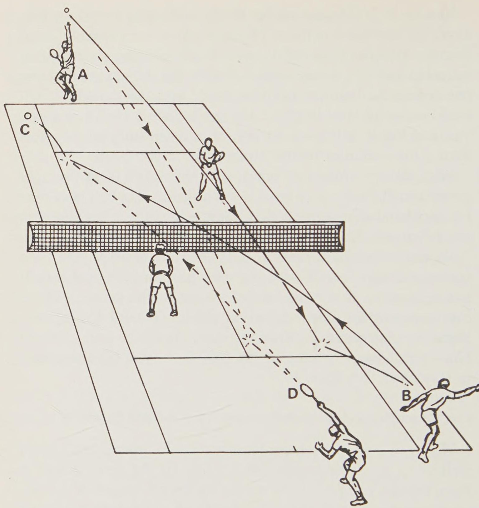
Vào sân, đừng để lộ điểm yếu thuận tay của bạn bằng cách thực hiện một cú đánh yếu ớt hoặc một cú đánh hoang dã và không phối hợp. Trừ khi bạn đang phòng ngự rõ ràng trước một cú giao bóng rất tốt, đừng lốp bóng, vì điều này cũng có xu hướng cảnh báo người giao bóng rằng thuận tay của bạn có thể đáng nghi. Thay vào đó, hãy di chuyển đến quả bóng như thể bạn đang nói, “Cuối cùng cũng đến! Bây giờ là lúc cho một cú thuận tay,” và đánh một cú chắc chắn. Nếu nó vào sân, thì tốt. Nếu không, đó là một điểm chi tiêu xứng đáng nếu cú lừa của bạn thành công và người giao bóng quay trở lại với mô hình an toàn tưởng tượng của họ là giao bóng vào trái tay của bạn. Điều dễ lộ nhất bạn có thể làm là thể hiện bước chân yếu ớt và ngập ngừng. Làm vậy, và trò chơi kết thúc.
Thuận tay của bạn sẽ bị phơi bày không thương tiếc nếu người giao bóng kiểm tra nó bằng cách giao những cú giao bóng hai dọc theo trung tâm. Anh ta sẽ nhận ra ngay rằng đó không phải là một cú đánh mạnh và rằng trái tay là cú trả giao bóng ưu tiên của bạn. Tuy nhiên, điều này có thể không bao giờ xảy ra, vì những người giao bóng không thích giao bóng hai dọc theo trung tâm của ô bên trái, vì lý do kép là họ cảm thấy mình có lẽ đang cho người nhận một cú thuận tay dễ dàng và rằng họ có thể bị lỗi kép, vì họ không quen giao loại bóng này. Vì vậy bạn may mắn.
Với tất cả những điều này hoạt động có lợi cho bạn, bạn sẽ là một hà chiến thuật tồi thế nào nếu để lộ bài ngay từ đầu bằng cách đứng gần trung tâm để bảo vệ một cú thuận tay mà người giao bóng đối phương không hề biết là yếu. Một khi anh ta chắc chắn đó là phía yếu của bạn, anh ta sẽ giao bóng dọc trung tâm tốt hơn nhiều, vì khi đó lương tâm anh ta thanh thản rằng mình không thực hiện những cú giao bóng thử nghiệm và rủi ro. Kỳ lạ, nhưng không có gì cải thiện một cú đánh hơn là chơi nó với một lương tâm thanh thản.
Chiến thuật thì rất tốt, nhưng để giúp chúng hiệu quả, bạn có thể thấy rằng bạn cần ít nhất một cú thuận tay đáng kể. Hãy quay lại với những điều cơ bản trong luyện tập: quan sát bóng suốt quãng đường để làm cho nó có vẻ chậm hơn; di chuyển với sự phối hợp thay vì vụng về hoặc liều lĩnh; giữ cổ tay thật vững; đánh quả bóng chắc chắn và giữ nó trên dây vợt trong thời gian tiếp xúc lâu nhất có thể. Tiến bộ từ đó.
Ô bên Trái—Thuận tay Mạnh
Đừng giữ bí mật về điều đó. Hãy phô diễn nó như một lá cờ chiến trận. Đứng xa về phía đường biên dọc. Bạn sẽ không liên tục bị ace. Những cú ace dự định dọc đường trung tâm không dễ giao vào sân, và trong mọi trường hợp chúng được giao từ phía bên trái và vì vậy không thể uốn cong rộng ra xa thuận tay của bạn như những cú ace sang thuận tay ở ô bên phải. Chúng có thể uốn một lượng đáng kể nếu giao từ vạch trung tâm—nhưng liệu bạn có mạo hiểm làm điều này nếu bạn giao bóng cho một cầu thủ ô bên trái có thuận tay mạnh?
Hãy tận dụng tối đa cú thuận tay mạnh của bạn. Bên cạnh việc đứng xa để nhận giao bóng, hãy bước quanh mọi quả bóng bạn có thể và đánh một cú thuận tay “lướt” (slider) rộng sang trái tay của người giao bóng.
Khiến người giao bóng khó tìm thấy trái tay của bạn với cú giao bóng hai của anh ta. Khi cuối cùng anh ta thực hiện được, cú giao bóng của anh ta sẽ phải rộng và ngắn, điều mà bạn có thể đánh chéo trở lại. Nếu điều này khiến anh ta cảm thấy rằng cuối cùng anh ta đã chạm tới trái tay của bạn nhưng nó không mang lại nhiều lợi ích, thì chắc chắn bạn đang chiếm ưu thế.
Ô bên Trái—Sức mạnh Cân bằng Lốp bóng qua đầu người đứng lưới không phải là một chiến thuật hứa hẹn như ở ô bên phải. Khó khăn chính là người đứng lưới có tầm với cao hơn với cú overhead thuận tay và có xu hướng nhảy lên đón bóng ở phía này nhiều hơn thay vì di chuyển sang ngang. Nếu bạn đưa bóng qua đầu anh ta thành công, đối tác của anh ta có thể có thời gian để thực hiện một cú nửa-đập (half-smash) và đưa bạn vào thế phòng ngự một lần nữa.
Để bù đắp, những cú drive của bạn chủ yếu hiệu quả hơn những cú của đối tác ở ô bên phải. Cú đánh của bạn tấn công vào trái tay của người giao bóng.
Trong giai đoạn đầu sự nghiệp của một cầu thủ, ô bên trái là ô khó chơi hơn, đơn giản vì nó đòi hỏi phải chơi nhiều cú trái tay hơn. Một khi cú trái tay của bạn đã hình thành tuy nhiên, ô bên trái trở nên dễ quản lý hơn, và cuối cùng nó trở thành sự ưu tiên của hầu hết các cầu thủ. Một cú trái tay chéo sân tự nhiên hơn một cú phải được hướng sang phía không thuận.
Một cú thuận tay thẳng hoặc dọc đường biên được hầu hết những người thuận tay phải ưu tiên—từ việc luyện tập họ có được với cú đánh này trong việc liên tục tấn công trái tay của những người thuận tay phải khác trong đánh đơn.
Cú Drive và Cắt Bóng Bay Lên (Rising-Ball) Bạn biết rằng việc đánh bóng khi nó đang bay lên là một lợi thế. Bạn đưa bóng trở lại nhanh hơn, thường buộc đối thủ phải vội vã thực hiện cú đánh và đôi khi thậm chí khiến anh ta bị hẫng. Rắc rối là bạn thường tự vội vã dẫn đến sai lầm thay vì khiến đối thủ vội vã.
Trong đánh đôi Một trên Một dưới, cầu thủ trung bình nên chấp nhận quả bóng đang rơi làm cơ sở cho cú trả giao bóng của mình. Anh ta có thể thực hiện một cú đánh bóng bay lên khi hoàn cảnh yêu cầu trong một chuỗi đánh bóng tiếp theo, khi anh ta đã quan sát kỹ quả bóng. Một cú đánh bóng bay lên đến tự nhiên hơn theo cách này.
Đây là một ví dụ. Bạn đang thi đấu, ở ô bên phải, ván đầu tiên, điểm đầu tiên. Người giao bóng hỏng cú giao một và cú giao hai đi tới, tốc độ dưới trung bình, vào thuận tay của bạn. Bạn cảm thấy hơi run, nhưng bạn quan sát bóng suốt quãng đường, bạn để bóng rơi một chút, sau đó bạn drive bóng an toàn qua lưới với thời gian tiếp xúc dài giữa bóng và dây vợt. (Không có gì phải vội. Cặp giao bóng đang chơi Một trên Một dưới, vì vậy không phải là người giao bóng đang áp sát lưới trong khi bạn dành thêm một chút thời gian với cú trả bóng của mình.) Người giao bóng đưa bóng trở lại, và bạn quan sát nó ổn định rồi drive trả lại, mạnh hơn một chút. Bạn và anh ta lặp lại điều này—đến bất lợi cho anh ta, vì cú đánh cuối cùng của anh ta ngắn ô sân khó thi đấu hơn, vì lý do đơn giản là nó đòi hỏi phải đánh nhiều cú trái tay hơn. Tuy nhiên, một khi cú trái tay của bạn đã định hình, ô bên trái sẽ trở nên dễ xử lý hơn, và cuối cùng nó trở thành lựa chọn ưa thích của đa số người chơi. Một cú trái tay chéo sân tự nhiên hơn một cú phải đánh sang góc xa. Cú thuận tay thẳng hoặc dọc dây được hầu hết các tay vợt thuận tay phải ưa thích—từ sự rèn luyện mà họ có được qua việc liên tục tấn công vào trái tay của những đối thủ thuận tay phải khác trong đánh đơn.
Cú Đánh Drive và Slice Khi Bóng Đang Lên
Bạn biết rằng đánh bóng khi đang nảy lên (rising ball) là một lợi thế. Bạn đưa bóng trả lại nhanh hơn, thường buộc đối thủ phải vội vàng thực hiện cú đánh và đôi khi thậm chí khiến họ bị động chôn chân tại chỗ. Rắc rối là bạn thường tự làm mình vội vàng dẫn đến mắc lỗi hơn là làm đối phương vội vã.
Trong thể thức đôi Một Lên Một Xuống (One Up One Back), người chơi phong trào trung bình nên lấy việc đón bóng khi đang rơi xuống (dropping ball) làm nền tảng cho cú trả giao bóng của mình. Anh ta có thể chơi một cú bóng đang lên tùy theo đòi hỏi của tình huống trong loạt rally tiếp sau, khi mắt anh ta đã bắt nhịp tốt với trái bóng. Cú đánh khi bóng đang lên sẽ tự nhiên hơn nhiều theo cách này.
Đây là một ví dụ. Bạn đang chơi một trận đấu, ở ô sân bên phải, ván đầu tiên, điểm đầu tiên. Người giao bóng hỏng quả giao bóng thứ nhất và quả giao bóng thứ hai bay qua, tốc độ dưới mức trung bình, vào cánh thuận tay của bạn. Bạn cảm thấy khá run, nhưng bạn dõi theo quả bóng trên suốt đường đi, bạn để bóng hơi rơi xuống một chút, rồi bạn drive bóng an toàn qua lưới với thời gian tiếp xúc dài giữa bóng và mặt dây. (Không có gì phải vội. Cặp giao bóng đang chơi Một Lên Một Xuống, nên không có chuyện người giao bóng lập tức ập sát lưới trong lúc bạn dành thêm một chút thời gian cho cú trả bóng của mình.) Người giao bóng đỡ được bóng trả lại, và bạn quan sát bóng chạm đất ổn định rồi drive trả lại, mạnh hơn một chút. Bạn và anh ta lặp lại điều này—gây bất lợi cho anh ta, bởi vì cú đánh cuối cùng của anh ta bị ngắn và cao. Bạn tiến lên và đánh nó khi bóng đang bay lên, từ gần lưới, với một cú đánh ngắn hướng xuống giữa hai cầu thủ để ghi điểm thắng. Bạn đã có cảm giác và hình ảnh về quả bóng, bạn đã thắng một điểm, và có lẽ bạn đã hết run.
Hãy đối chiếu điều này với khái niệm đánh bóng bay lên bằng mọi giá. Từ cùng một cú giao bóng hai chậm đó, bạn có thể đánh một cú buộc người giao bóng phải vội vã thực hiện cú đánh, hoặc thậm chí khiến anh ta bị hẫng. Tuy nhiên, nếu bạn cảm thấy run, bạn có nhiều khả năng sẽ vội vã thực hiện cú đánh và đánh quá sớm, đưa bóng thẳng vào lưới hoặc bay ra ngoài đường biên thuận tay của người giao bóng. Tiếp xúc dài? Bạn không có thời gian để nghĩ về nó. Ngoài việc đánh bóng bay lên nhanh chóng, bạn còn tự hối thúc mình về mặt tinh thần.
Nếu bạn là một cầu thủ đánh bóng bay lên tự nhiên hơn, bình tĩnh hơn và chắc chắn hơn so với bóng đang rơi, bạn sẽ đạt được cả hai lợi ích. Chúc may mắn.
Tương tự, bạn biết rằng các cú cắt làm quả bóng đi thẳng, thậm chí treo lơ lửng trong không trung một chút, vì vậy chúng dễ dàng hơn cho đối thủ vô-lê hơn là một cú drive. Nhưng người giao bóng không tiến lên lưới. Anh ta sẽ không thực hiện một cú vô-lê, dễ hay khó. Do đó, trong đánh đôi Một trên Một dưới, hãy cứ cắt cú trả giao bóng của bạn, nếu bạn cảm thấy an toàn hơn với cú cắt, bất cứ khi nào sự chắc chắn là yếu tố then chốt. Hãy nhớ rằng bạn đang cố gắng thắng một trận đánh đôi, không phải luyện tập cú drive thuận tay hoặc trái tay cho một trận đánh đơn sắp tới hoặc đại loại như đó.
NGƯỜI ĐỨNG LƯỚI ĐỐI PHƯƠNG Bạn sẽ nhận ra một người đứng lưới không tham gia từ tư thế của anh ta là quá gần với lưới. Hãy tận dụng tối đa không gian anh ta cho phép bạn, từ cả ô bên phải hoặc bên trái. Ngoài những cú trả bóng thông thường cho người giao bóng (sâu, rộng hoặc không đặc sắc), từ ô bên phải bạn có thể lốp bóng qua loại người đứng lưới này gần như tùy ý và bạn cũng có thể lốp bóng qua anh ta bất cứ khi nào bạn bị buộc vào thế phòng ngự. Từ ô bên trái bạn không thể tung bóng qua anh ta dễ dàng như vậy, nhưng từ ô này bạn đôi khi có thể-thêm một cú bỏ nhỏ vào kho tàng cú đánh của mình. Nó sẽ phải chống lại một cú giao bóng yếu, tất nhiên, nhưng không cầu thủ nào đứng sát lưới bao giờ nghĩ đến việc chạy băng qua sân bằng trái tay để cứu đối tác của mình.
Hãy nhận thức rằng bạn và đối tác của bạn thực tế đang chơi như hai người chống lại một (người giao bóng), và bạn có thể đặt mục tiêu thắng tất cả các ván giao bóng có một người đứng lưới nhút nhát.
Người Đứng Lưới Hăng Hái Hãy đối đầu với anh ta. Chấp nhận thử thách của anh ta ngay sau khi anh ta đã thực hiện cú đánh táo bạo đầu tiên bằng cách cướp lấy cú trả giao bóng của bạn.
Nếu bạn không làm vậy, anh ta sẽ đặt dấu ấn khó chịu lên bạn suốt cả ngày.
Đây là một tình huống—bạn có thể nhớ một tình huống tương tự với sự đau đớn—có thể dễ dàng xảy ra với bất kỳ ai. Chơi ở ô bên phải, bạn nhận cú giao bóng đầu tiên của ván và trả bóng an toàn vượt qua lưới và theo hướng của người giao bóng. Người đứng lưới đoán rằng bạn sẽ không cố gắng đánh vượt qua anh ta dọc theo đường biên ngay từ cú bóng đầu tiên, vì vậy anh ta nhảy băng qua và vô-lê một cú thắng sắc lẹm giữa bạn và đối tác đứng lưới Một Trên của bạn. Anh ta đã dẫn trước một lần chặn bóng.
Cú giao tiếp theo cho bạn là một cú thuận tay và bạn thiếu khôn ngoan khi cố đánh vượt qua anh ta dọc theo đường biên của anh ta. Quá lộ liễu; anh ta đang chờ điều đóvà bùm, một cú vô-lê trái tay thắng điểm giữa bạn và đối tác Một Trên của bạn một lần nữa. Bạn có lẽ sẽ thua ván đó.
Ba ván sau, anh ta lại đối mặt với bạn, lần này có vẻ đang nghỉ ngơi. Bạn bắt đầu một cú trả bóng thuận tay chéo sân và bất ngờ anh ta đang trên đường băng qua sân. Bạn cố gắng giữ bóng tránh xa anh ta—chỉ để đánh bóng ra ngoài đường biên thuận tay của người giao bóng.
Con hổ đứng lưới này đã “ép bạn ra ngoài”. Anh ta dẫn trước ba lần.
Bạn nghĩ có lẽ nên thử một cú lốp. Nghĩ, có lẽ, thử?
Nó yếu, tất yếu. Anh ta không chỉ đập bóng, anh ta nghiền nát nó. Trái tay của bạn, vốn nằm xa người đứng lưới. Đánh BC, sâu. Cú giao AD hướng về thuận tay của bạn. Người đứng lưới đối diện bạn và có thể di chuyển về phía trung tâm. Bạn phải đánh xuyên qua anh ta. Thực hiện một cú đánh chéo sân DE. AF là một cú giao bóng một nhanh và sâu vào góc thuận tay của bạn. Một cú lốp FG qua trái tay người đứng lưới là cách an toàn nhất để tránh anh ta. Hãy chuẩn bị thực hiện cú đánh này. Nhiều cầu thủ coi cú lốp chỉ là phương án cuối cùng, nhưng đây là tình huống mà nó là cú đánh được ưu tiên. Đây là đánh đôi Một trên Một dưới, hãy nhớ, nơi người đứng lưới có ý định chặn các cú drive hơn là bao quát các cú lốp.
Thật là xúc phạm nếu anh ta đập bóng văng ra ngoài hàng rào phía sau và thậm chí tệ hơn nếu anh ta đánh trúng bạn. Hãy khép lại câu chuyện này và xem xét những chiến thuật bạn nên theo đuổi trong tương lai.
Khi chuẩn bị sẵn sàng để đánh quả bóng đầu tiên của ván, hãy lưu ý nếu người đứng lưới chiếm vị trí mà từ đó anh ta có thể dễ dàng chặn bóng. Nếu anh ta làm vậy, gần như chắc chắn là anh ta định làm thế. Bạn giờ đây đã được cảnh báo để tránh xa anh ta.
Nếu cú giao bóng hướng về trái tay, bạn bắt đầu bằng việc đứng xa anh ta—xem lại Hình 17. Bạn sẽ không gặp nhiều khó khăn trong việc giữ khoảng cách. Nếu cú giao bóng hướng về thuận tay, hãy chuẩn bị trả bóng chéo sân. Nó sẽ nằm ngoài tầm với của anh ta.
Anh ta không cao 10 feet, cũng như bạn khi bạn ở trên lưới và cố gắng với một cú drive chéo sân. Nếu cú giao bóng rộng, người đứng lưới phải đứng yên tại chỗ nếu không sẽ để hở đường biên dọc của mình.
Nếu anh ta mắc sai lầm khi cố gắng chặn bóng và bạn đánh vượt qua anh ta với một khoảng cách thoải mái, thì bạn, chứ không phải anh ta, là người dẫn trước trong cuộc đối đầu này.
Cú giao bóng mà một người đứng lưới cảnh giác dễ thực hiện cú chặn đầu tiên nhất là cú giao bóng một rơi sâu vào góc thuận tay của bạn. Thứ nhất, bạn phải đánh xuyên qua anh ta từ một quả bóng đủ sâu để cho anh ta thời gian thực hiện cú chặn. Thứ hai, cú giao này không để hở đường biên dọc của anh ta nhiều như một cú giao bóng rộng và ngắn làm, và vì sâu, nó cho anh ta nhiều thời gian hơn để quay trở lại đó nếu anh ta thấy bạn nhắm vào nó. Thứ ba, một cú giao sâu vào góc thuận tay không phải lúc nào cũng dễ đánh drive chéo sân vượt qua tầm với của người đứng lưới và giữ an toàn bên trong đường biên của người giao bóng.
Do đó, trừ khi bạn có thể đứng đủ xa sau một cú giao sâu vào góc thuận tay của mình, để bạn cảm thấy hoàn toàn kiểm soát và có thể drive nó an toàn ngoài tầm với, cú đánh tốt nhất là một cú lốp qua phía trái tay người đứng lưới. Chống lại một người đứng lưới đe dọa, hãy chuẩn bị thực hiện điều này như một cú đánh mạnh ngay từ quả bóng đầu tiên bạn nhận được, vì quả bóng đầu tiên này có thể là một cú giao bóng một nhanh sâu vào góc thuận tay của bạn. Nếu bạn coi nó là một cú đánh tấn công, bạn sẽ chấp nhận nó dễ dàng hơn như một thành viên chính thức trong họ những cú trả giao bóng của mình. Xem Hình 18.
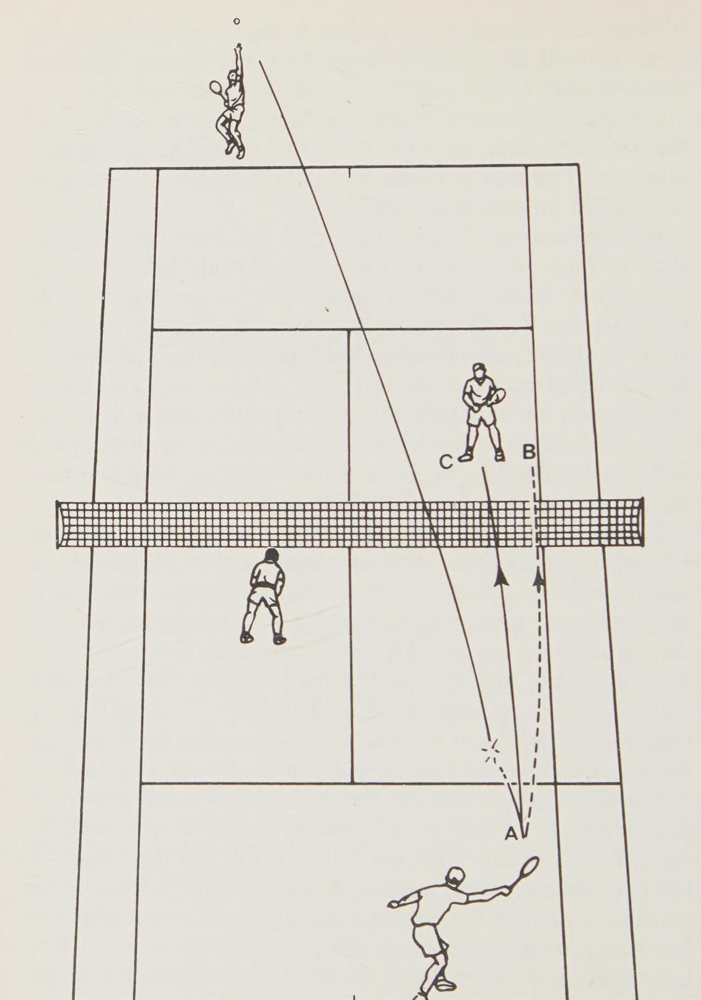
Tấn công, bạn sẽ chấp nhận nó dễ dàng hơn như một thành viên chính thức trong họ những cú trả giao bóng của mình. Xem Hình 18.
Áp dụng những chiến thuật này vào tình huống ban đầu ở đầu phần này, bạn có thể thấy cách xử lý một người đứng lưới hăng hái người đã chặn cú trả bóng đầu tiên của bạn và đang tìm kiếm thêm. Từ cú giao tiếp theo sang thuận tay của bạn, đừng cố đánh vượt qua anh ta, mà lốp bóng qua đầu anh ta. Đó là điều cuối cùng anh ta mong đợi. Anh ta sẽ không thể dẫn trước hai lần.
Với bất kỳ cú giao bóng khó khăn nào, hãy lốp bóng qua đầu anh ta. Lốp thật cao, không cho anh ta cơ hội đập bóng. Ngay cả khi một quả ra ngoài, anh ta cũng không có đóng góp gì vào việc thắng điểm. Nếu cú giao bóng ở trái tay của bạn, hãy trả bóng cách xa anh ta để một lần nữa anh ta không có vai trò gì trong đó.
Bạn chưa có cơ hội để khẳng định mình. Nhưng ngay khi người giao bóng tạo điều kiện bằng một cú giao bóng hai mềm và ngắn vào phía thuận tay của bạn, hãy đánh mạnh và đánh thẳng vào người đứng lưới.
Đừng nhắm dọc theo đường biên của anh ta—điều mà anh ta không hề để hở dù sao đi nữa, vì cú giao bóng mềm và ngắn. Anh ta cầm vợt ở tay trái, vì vậy bạn có khả năng “đánh vào cú vô-lê trái tay của anh ta”. Nhắm vào hông phải của anh ta, nơi không anh ta hiên hay bất kỳ ai khác có thể thực hiện một cú đánh mà không phải di chuyển cơ thể ra khỏi đường bóng. Không có gì hung hãn ở đây cả. Bạn không đánh trúng anh ta, anh ta sẽ đánh hỏng.
Xem Hình 19. Ở tay trái, tạo cho anh ta một cú vô-lê trái tay nửa sẵn sàng. Phản ứng nhanh nhất của anh ta sẽ là một cú vô-lê trái tay. Nhắm AC, mạnh, vào hông phải của anh ta. Không ai có thể đánh được từ vị trí này mà không phải di chuyển cơ thể ra khỏi đường bóng. Bạn sẽ không đánh trúng người đứng lưới. Anh ta sẽ đánh hỏng, hoặc tốt nhất là chỉ phòng thủ.
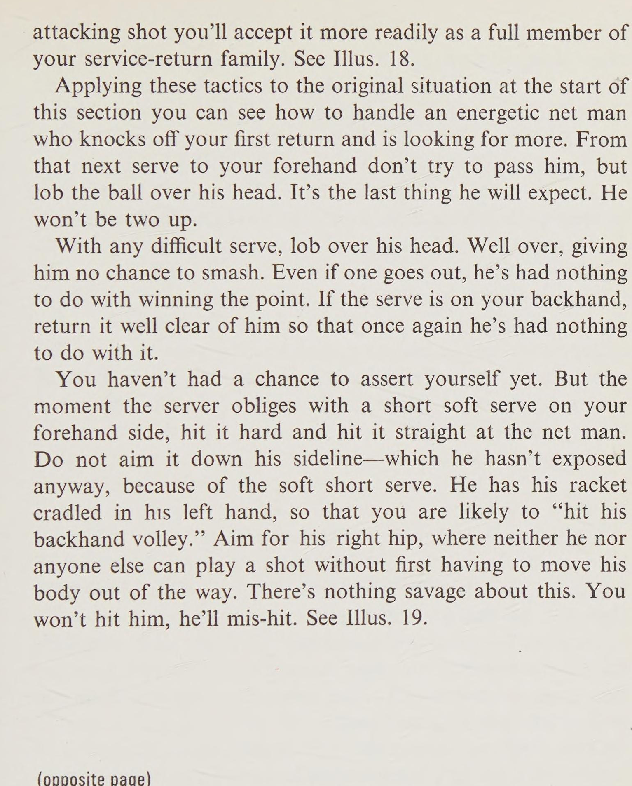
Vị trí hiện giờ là gì? Kể từ cú chặn bóng ban đầu, người đứng lưới định tỏ ra hung hăng đó đã không thể chạm vào bạn.
Bạn đã vượt qua anh ta, đánh rộng ra ngoài anh ta, gần như xuyên qua anh ta.
Anh ta cảm thấy rằng nếu có cơ hội, bạn sẽ đánh dọc đường biên của anh ta tiếp theo. Vì vậy, tốt hơn là anh ta nên bắt đầu chăm sóc phía sân của mìnhcó lẽ bằng cách cố gắng cứu một số cú lốp đó.
Một khi anh ta bắt đầu chú ý đến những cú lốp đó, anh ta sẽ không còn nghĩ về việc chặn bóng. Bạn đóng chiếc đinh cuối cùng vào quan tài nếu bạn bắt đầu đánh bóng dọc theo trung tâm, xuyên qua trái tay của đối tác anh ta trong khi người đứng lưới của bạn đe dọa ở lưới.
Tóm lại, khi bạn gặp một người chơi lưới hung hăng chiến thuật đúng đắn là đối đầu với anh ta. Điều đó không có nghĩa là đánh mọi quả bóng vào anh ta, mà là giữ tâm trí bạn ở phía sân của anh ta thay vì chỉ cố gắng điều khiển quả bóng ra khỏi tầm với của anh ta theo đường chéo. Đừng bao giờ bỏ qua, dù chỉ trong một khoảnh khắc, những cú đánh của bạn—từ ô bên phải bạn cần một cú thuận tay tốt để thực hiện chiến thuật của mình.
Từ Ô bên Trái Một người đứng lưới hăng hái hiếm khi táo bạo ở phía này, vì bây giờ anh ta phải thực hiện những cú chặn bóng bằng trái tay thay vì thuận tay. Điều này ít bản năng hơn và tầm với của anh ta ngắn hơn.
Tuy nhiên, khả năng bị giảm sút của anh ta phần nào được bù đắp bởi vì vị trí lưới của anh ta giờ đối diện với trái tay của bạn. Nếu anh ta thuận tay trái, thì cú chặn thuận tay của anh ta đe dọa cú trả giao bóng trái tay của bạn và trong tình huống như vậy, một người đứng lưới áp đảo trông có vẻ như đang đứng ngay trên đầu bạn.
Hãy loại bỏ cảm giác rằng bạn đang chơi ở thế bất lợi và đối đầu với anh ta, bất kể anh ta thuận tay phải hay trái. Nếu bạn có cú thuận tay mạnh và đứng xa về phía đường biên dọc và nhận càng nhiều cú giao bóng vào thuận tay càng tốt, người đứng lưới sẽ không có nhiều cơ hội để chặn bóng. Bạn luôn đe dọa một cú đánh vượt qua thuận tay dọc theo đường biên của anh ta.
Nếu bạn đứng rộng gần đường biên dọc, một cú giao bóng tìm thấy trái tay của bạn cho phép bạn thực hiện một cú trả bóng chéo góc sắc nét vượt ra ngoài tầm với của người đứng lưới. Một góc như vậy thường dễ thực hiện, vì hầu hết các cú trái tay của cầu thủ đều đi chéo sân một cách tự nhiên.
(Nếu cú trái tay của bạn không như vậy, và bạn thích trượt cú trái tay sang phía không thuận, thì rất nghi ngờ việc bạn nên chơi ở ô bên trái.) Nếu trái tay là cú đánh tốt hơn của bạn, thì như đã thảo luận trước đó, bạn sẽ thực hiện hầu hết các cú trả giao bóng bằng cú đánh này. Chúng phải băng qua người đứng lưới—và anh ta muốn chặn chúng. Nếu anh ta thuận tay phải, bạn sẽ có thể đánh chéo sân vượt ra ngoài tầm với của cú vô-lê trái tay của anh ta. Nếu anh ta thuận tay trái, bạn có thể lốp bóng qua phía trái tay của anh ta. Cho dù anh ta thuận tay phải hay trái—nhưng thực sự là một kẻ săn mồi, bạn nên chuẩn bị lốp bóng nếu bạn nhận được một cú giao bóng một nhanh và sâu trong góc trái tay của mình.
Điều đó sẽ cảm thấy dễ dàng hơn khi bạn có một kế hoạch để thực hiện thay vì cảm thấy mình là người bị động.
Bạn hiện đã thấy việc tránh một người đứng lưới cảnh giác khó khăn như thế nào. Khi đối tác của bạn giao bóng, chẳng lẽ bạn không nên là một người như vậy sao?
Từ cú trả giao bóng đến Lối chơi Lên lưới Nhiều cuộc tranh luận đã nổ ra về giá trị tương đối trong đánh đôi của giao bóng, vô-lê, đập bóng và trả giao bóng. Không cần tranh luận, có thể nói rằng cặp có cú trả giao bóng tốt hơn thường thắng. Ít nhất bạn có thể chắc chắn một điều: nếu cú trả giao bóng trở thành sở trường của bạn, bạn sẽ không phải chịu áp lực tâm lý trước trận đấu—bạn có thể để điều đó cho đối thủ của mình. Vì vậy, lần tới khi một thành viên trong nhóm tập bốn người của bạn không đến, có lẽ bạn có thể coi đó là một điều may mắn tiềm ẩn và thực hiện một vài ván Hai chống Một nghiêm túc.
Trong đánh đôi cấp thấp, trả giao bóng không khó. Cú giao bóng chậm, nó rơi vào một khu vực hạn chế mà bạn có thể dễ dàng bao quát ngay cả khi bạn chậm chạp, và người giao bóng thường tặng bạn một hoặc hai cú lỗi kép. Gần như số ván giao bóng bị mất nhiều như số ván thắng, vì vậy một ván giao bóng bị phá không quá quan trọng.
Từ giai đoạn này, người giao bóng chiếm ưu thế hơn người nhận, giành được tỷ lệ thắng ván giao bóng ngày càng cao khi trình độ chơi cải thiện. Mặc dù điều này đưa người giao bóng lên trên, nhưng nó cũng có nghĩa là anh ta ngày càng cần phải chắc chắn giữ được ván giao bóng của mình vì anh ta không thể chấp nhận một ván giao bóng bị phá.
Cuối cùng, một cặp Một trên Một dưới sẽ phát triển đến giai đoạn mà họ quyết định rằng một ván giao bóng bị phá là một vấn đề thực sự nghiêm trọng. Có lẽ vào khoảng thời gian này, họ quyết định rằng cần hai cầu thủ để chắc chắn giữ được ván giao bóng, và theo đó, người đứng lưới tham gia đầy đủ ở giai đoạn này.
Khi bạn đạt đến giai đoạn nỗ lực giữ mọi ván giao bóng trước những cú trả giao bóng ngày càng tốt hơn, bạn quyết định rằng mình sẽ làm tốt hơn với hai người đứng lưới. Vì vậy, bạn tiến lên đội hình Lối chơi Lên lưới—nếu bạn có sự linh hoạt và những cú đánh để chơi nó.
4. LỐI CHƠI LÊN LƯỚI (NET GAME)
Cầu thủ Mạnh: “Cậu có tiến lên trong cú giao bóng của tôi không?”
Cầu thủ Kém: “Ồ, có*: Luôn luôn vậy,”
SM : “Được. Cứ tiến lên bao xa tùy thích. Tôi sẽ bao quát các cú lốp.”
CK : “Được.”
SM : “Ô bên phải ổn với cậu chứ?”
CP : “Ổn,”
Đó là tất cả những gì họ cần nói. Trong hầu hết các trường hợp, họ tạo thành một sự kết hợp hợp lý ngay từ đầu.
Có rất nhiều điều cần giải thích, nhưng tất cả đều rơi vào một mô hình dễ hiểu.
Một khi bạn hiểu nó, bạn không bao giờ cần phải phân tích lại và bạn có thể không cần trò chuyện với một đối tác mới nhiều hơn những cầu thủ kiệm lời ở trên.
PHẠM VI BAO QUÁT CỦA NGƯỜI ĐỨNG LƯỚI Hãy nhìn vào Hình 20, để xem bạn sẽ đối mặt với điều gì.
* Các bạn nữ, trung bình nhỏ hơn nam giới và cổ tay, bàn tay kém mạnh hơn, sẽ mất nhiều thời gian hơn để phát triển các cú đánh và khả năng bao quát sân cần thiết để chơi đánh đôi Lên lưới thành công. Kích thước sân là như nhau cho một trận đánh đôi nữ cũng như nam, vì vậy nữ giới cần phải vươn rộng hơn cho các cú vô-lê và với cao hơn cho các cú lốp. Tuy nhiên nếu nữ giới có thể chơi kiểu tennis của nam, các chương về Lối chơi Lên lưới này vẫn áp dụng. Vui lòng đọc 'nữ' thay cho 'nam' và 'của cô ấy' cho 'của anh ấy', và tất cả những phần còn lại.
Nếu bạn bị sốc, tốt nhất là nên đối mặt với nó sớm. Hãy cùng lý luận.
Mục tiêu của một cặp chơi Lối chơi Lên lưới là tạo thành một rào chắn không thể xuyên phá ở lưới, thắng điểm bằng những cú vô-lê và đập bóng.
Để tạo thành rào chắn này, người giao bóng phải theo cú giao bóng của mình lên lưới—tiến sâu vào, sao cho anh ta có thể thực hiện cú vô-lê đầu tiên từ bên trong vạch giao bóng. Nếu không, anh ta chắc chắn sẽ phải vô-lê thấp và nửa-vô-lê—luôn đánh bóng hướng lên, và điều đó không thể tạo thành một rào chắn không thể xuyên phá. Rõ ràng, anh ta cần tiến lên nhanh. Nếu anh ta phải nghĩ đến việc quay lại để cứu một cú lốp qua đầu đối tác đứng lưới, anh ta sẽ không bao giờ đạt được vị trí rào chắn của mình. Do đó, bạn (với tư cách là người đứng lưới) phải nhận tất cả các cú lốp ở phía sân của mình, và vì vậy vùng tô bóng của Hình 20 kéo dài từ lưới đến vạch cuối sân.
Đừng Để Bị Lốp Qua Đầu
Nếu một cú lốp khiến bạn bất ngờ và bay ra ngoài tầm với qua đầu bạn, bạn chứ không phải đối tác của bạn phải quay lại và đuổi theo nó.
Bạn, đứng tương đối yên, ở vị trí tốt hơn để làm điều này so với anh ta; anh ta đang tiến về phía trước, nhanh chóng. Vì vậy bạn chạy lùi và đón cú lốp khi bóng nảy và lốp nó cao để cho đối tác của bạn thời gian lùi lại bên cạnh bạn, và cả hai cùng hy vọng điều tốt nhất.
Tuy nhiên, vị trí rào chắn lưới dự định đã mất. Bạn đã bị lốp qua đầu; bạn đã làm hỏng điểm đó cho cả đội.
Đối với một cú lốp sâu, bạn phải lùi lại nhanh chóng, vẫn đối diện về phía trước, nhảy cao, và đập cú lốp khi bóng còn trên không ở mức hết tầm với. Sau đó bạn tiến lên phía trước một lần nữa bên cạnh đối tác của mình.
리로 rào chắn lưới của bạn vẫn nguyên vẹn.
Bạn không được để bị lốp qua đầu. Để đạt được sự bao quát này, bạn có thể đứng khoảng nửa đường lùi từ lưới đến vạch giao bóng, như hiển thị trong Hình 20. Di chuyển lùi nhanh, thay vì đứng quá xa lưới và cho phép người nhận điều hướng cú trả bóng vào chân bạn. Nếu bạn cao, nếu bạn có phản xạ nhanh trong việc lùi y là phần sân của người đứng lưới cho đến khi người giao bóng thực hiện an toàn cú vô-lê đầu tiên và tiến gần hơn để tạo rào chắn lưới. Ngay cả khi đó, với cú vô-lê thuận tay và cú đánh trên đầu hướng về trung tâm, phạm vi bao quát của người đứng lưới sẽ tiếp tục gần như tương tự trong khi người giao bóng giao bóng sang ô bên phải.
Lối chơi Lên lưới—Xử lý cú lốp ©
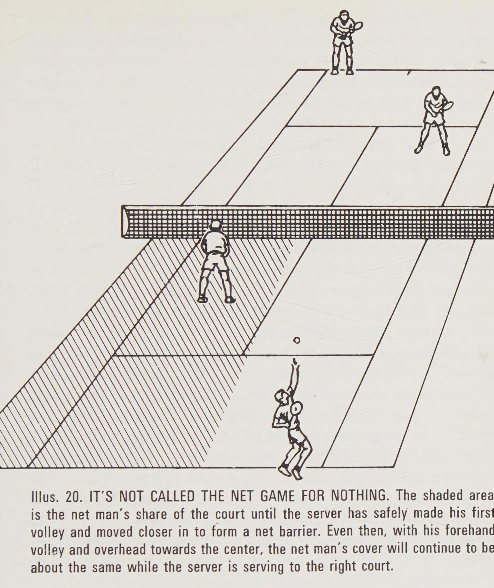
Lùi trong khi vẫn đối diện về phía trước, hoặc nếu đối thủ không có hiện tượng sử dụng cú lốp, bạn có thể đứng gần lưới hơn một chút.
Nơi bạn đứng là việc của riêng bạn—miễn là bạn không bị lốp qua đầu liên tục, hoặc bị lốp qua mỗi khi đối thủ cần một điểm số quan trọng, và bằng cách này hoặc cách khác làm mất ván giao bóng của đối tác vì bạn.
Bây giờ bạn biết Cầu thủ Mạnh muốn nói gì khi anh ta đảm bảo với đối tác tương lai: “Cứ tiến lên bao xa tùy thích. Tôi sẽ bao quát các cú lốp.”
Những ý kiến phản đối Bạn có thể phản đối lý luận này và nói rằng đối tác của bạn có cú giao bóng mạnh mà người nhận không thể làm bất cứ điều gì họ muốn, chẳng hạn như đẩy một cú lốp sâu qua đầu bạn bất cứ khi nào họ muốn.
Bạn nói rằng bằng cách đứng xa lưới hơn mức cần thiết, bạn đang bảo vệ quá mức chống lại các cú lốp hiếm khi xảy ra và chấp nhận một vị trí lưới ít tấn công hơn cho các cú vô-lê của mình.
Thay vì làm vậy, bạn thà đứng gần lưới hơn, nơi bạn có nhiều cơ hội vô-lê bóng xuống hơn.
Chà, điều đó đã được nói rằng bạn có thể đứng nơi bạn muốn. Nếu đối tác của bạn có cú giao bóng áp đảo, anh ta hầu như không cần bạn chút nào, và về vấn đề đó, anh ta thậm chí có thể không cần tiến lên lưới sau cú giao bóng. Nhưng nếu anh ta phải chiến đấu để giữ ván giao bóng của mình chống lại những người nhận có thể xử lý cú giao của anh ta và thực hiện những cú trả bóng tốt, bao gồm cả cú lốp, thì điều thiết yếu là với tư cách là một cặp, bạn phải có một 'mái nhà' cho ngôi nhà của mình. Một rào chắn lưới phải cao cũng như rộng.
Bao quát Trung tâm Nhắc đến chiều rộng đưa chúng ta đến điểm thứ hai về vùng tô bóng của Hình 20. Ngoài việc phòng chống cú lốp, bạn cũng nên bao quát khoảng gần trung tâm nếu có thể. Lý do là vì bạn dễ dàng vô-lê từ lưới, nơi quả bóng cao hơn, hơn là đối tác đang tiến vào của bạn. Đối với cú vô-lê đầu tiên, anh ta sẽ chưa đến được vị trí gần lưới như bạn; anh ta sẽ không đứng bên cạnh bạn, tạo thành một rào chắn gần như song song với lưới. Anh ta sẽ phải thực hiện một cú vô-lê thấp hơn và do đó khó khăn hơn, hoặc có lẽ là một cú nửa-vô-lê.
Có vẻ là một quãng đường dài để bạn bao quát, nhưng nó ít hơn nhiều một khi bạn nhận thức được điều đó và bị thuyết phục rằng đó là điều đúng đắn nên làm.
Bạn không thể bắt đầu từ một vị trí lưới gần đường biên dọc và nhảy sang, vì điều này khiến bạn bị hở và dễ bị tổn thương trước một cú đánh dọc đường biên hoặc một cú lốp qua đầu. Hãy cho mình một cơ hội và đứng gần trung tâm, hơi lệch một chút so với nửa đường giữa đường biên dọc và đường trung tâm.
Bao quát Đường biên dọc Còn đường biên dọc của bạn thì sao? Bạn có nhiều khả năng bảo vệ quá mức đường biên dọc của mình hơn là bảo vệ quá mức chống lại các cú lốp.
Trừ khi người nhận công khai nhắm vào bạn, anh ta hiếm khi tấn công đường biên dọc của bạn. Chống lại một cú giao bóng mạnh, anh ta cố gắng tránh xa bạn. Từ một cú giao bóng yếu, anh ta không muốn lãng phí một cơ hội tốt; anh ta thấy rằng sẽ tốt hơn khi đánh mạnh vào chân của đối tác đang tiến vào //với mọi cơ hội thành công thay vì mạo hiểm một cú đánh “có lẽ” đó có thể đi dọc đường biên của bạn, nhưng cũng có thể đập thẳng vào cú vô-lê trái tay của bạn, được thực hiện từ vị trí cao hơn lưới.
Khi đối tác của bạn giao bóng rộng, bạn phải bảo vệ đường biên dọc của mình.
Điều đó không cần bàn cãi.
Bạn có rất nhiều việc phải làm với tư cách là người đứng lưới. Cú đánh trên đầu và các cú vô-lê của bạn cần phải vững chắc. Để bao quát một nửa sân từ vị trí lưới, bạn cần di chuyển tốt, nhưng việc biết trước về những gì mình nên làm cho phép bạn di chuyển nhanh hơn nhiều so với một cầu thủ có phản xạ cơ thể nhanh nhưng lại nghi ngờ trong tâm trí.
Tâm trí đánh bại cơ bắp một khoảng cách xa.
Bạn có thể chơi Lối chơi Lên lưới với ít sự bao quát hơn không?
Bạn có thể phản đối rằng bạn muốn chơi đánh đôi Lên lưới, nhưng bạn không cảm thấy mình phải bao quát tất cả vùng tô bóng đó khi bạn là người đứng lưới trước khi dám thử đội hình cao quý này. Bạn đã thấy nhiều người giao bóng theo sau cú giao bóng của họ và những cú lốp bay qua đầu người đứng lưới và người giao bóng ch somehow cứu được. Ngoài ra, các cú trả bóng đi dọc trung tâm và người giao bóng chơi hầu hết trận đấu mà không có người đứng lưới và anh ta vẫn thắng gần hết các ván giao bóng của mình. Hoặc bạn có thể nói rằng bạn và tất cả các đối tác của mình chơi theo cách này—một cách hài lòng, cảm ơn.
Đây là một số câu trả lời dễ chịu:
# Đừng ngần ngại. Hãy chơi Lối chơi Lên lưới ngay khi bạn muốn.
= Nếu bạn cảm thấy không thể bao quát toàn bộ vùng tô bóng đó, ít nhất hãy điều chỉnh sự bao quát theo lối chơi của đối thủ. Nếu họ chủ yếu đánh drive, hãy cố gắng bao quát trung tâm thay vì tập trung vào việc phòng chống cú lốp.
= Tuy nhiên, hãy ý thức rằng các ván tập luyện không phải là ván đấu chính thức. Khi chỉ tập luyện, bạn bè của bạn thường muốn đánh những cú drive mạnh hoặc thử những góc ngắn hoặc chơi một loạt các cú đánh thú vị—vì vậy họ hiếm khi bận tâm đến cú lốp.
Trong một trận đấu thì khác. Khi một người nhận thấy đối tác của mình theo cú giao bóng tiến lên để chặn lưới, anh ta thường quyết định rằng cách tốt nhất là lốp bóng. Chính cặp đấu mà bạn đã tập luyện chống lại có khả năng làm điều này cao nhất, nếu sau đó bạn gặp họ trong một trận đấu.
= Chống lại một cặp lốp bóng mọi cơ hội, nếu bạn không bao quát những cú lốp hướng về phía sân của mình, vị trí của bạn như một cặp sẽ liên tục bị xáo trộn. Đối tác giao bóng của bạn sau đó sẽ quyết định rằng anh ta không thể mạo hiểm tiến lên và sẽ đứng lùi lại thay vào đó.
Nói cách khác, bạn sẽ quay lại chơi Một trên Một dưới—và đó không phải là sự tiến bộ. Hình 20 và các trang giải thích đi kèm nhằm ngăn chặn điều này xảy ra với bạn. Đó không phải là sự tiến bộ. Hình 20 và các trang giải thích đi kèm nhằm ngăn chặn điều này xảy ra với bạn. S Đừng nghi ngờ khả năng bao quát cú lốp của mình. Không ai có thể lốp qua đầu một người đàn ông khỏe mạnh đang mong đợi bị lốp và từ chối bị lốp qua. Hãy thử điều này ngược lại trong một ván tập: khi bạn là người nhận, hãy nói với người đứng lưới đối phương rằng bạn sẽ cho anh ta tập đập bóng bằng cách cố gắng lốp bóng qua đầu anh ta. Bạn sẽ sớm thấy rằng những cú lốp duy nhất anh ta không thể //di chuyển lùi lại và bao quát bằng một cú đập là những cú đi ra ngoài sân. Bạn đã chuẩn bị cho anh ta, tất nhiên, và tương tự trong một trận đấu, bạn nên chuẩn bị sẵn sàng.
Lối chơi của người đứng lưới là chìa khóa của đội hình Lối chơi Lên lưới.
Hãy nhìn lại cuộc trò chuyện ngắn giữa những người bạn của chúng ta ở đầu chương. Điều duy nhất khác được thống nhất là phía sân, nơi Cầu thủ Mạnh một cách khéo léo gợi ý, mà không nói ra, rằng anh ta nên chiếm ô bên trái. SM, với tư cách là một cầu thủ đánh đôi mạnh, sẽ bao quát toàn bộ vùng tô bóng khi anh ta là người đứng lưới. CP cũng vậy, vì câu trả lời đầu tiên của anh ta cho thấy anh ta không xa lạ với đánh đôi Lên lưới, và anh ta cũng được hỗ trợ bởi cú giao bóng mạnh của đối tác.
Một đối tác giao bóng mạnh cho phép bạn bao quát trách nhiệm của mình tốt.
Một đối tác giao bóng yếu thực tế yêu cầu bạn phải làm vậy. Vì vậy trong cả hai trường hợp, đừng nghi ngờ—hãy bao quát nửa sân của bạn một cách đầy đủ, và có lẽ là nhiều hơn nửa một chút.
CÁC CÚ ĐÁNH CỦA NGƯỜI ĐỨNG LƯỚI Các cú đánh của bạn với tư cách là người đứng lưới—vô-lê và đập bóng—đã được thảo luận trong Chương 2 trang 49, và những lưu ý sau đây là bổ sung.
Nếu bạn đánh hỏng một cú vô-lê, hãy đảm bảo rằng lần tới bạn quan sát quả bóng suốt quãng đường di chuyển của nó. Nếu bạn đánh yếu, hãy đấm cú tiếp theo. Nếu bạn vô-lê một quả bóng nhanh ra ngoài, hãy chặn cú tiếp theo.
Nếu không có cú vô-lê nào mang lại cảm giác thoải mái cho bạn hãy đưa cánh tay trái lên để giữ thăng bằng và đưa vợt lên gần vai phải của bạn. Bạn không cần một cú vung đầy đủ như khi giao bóng.
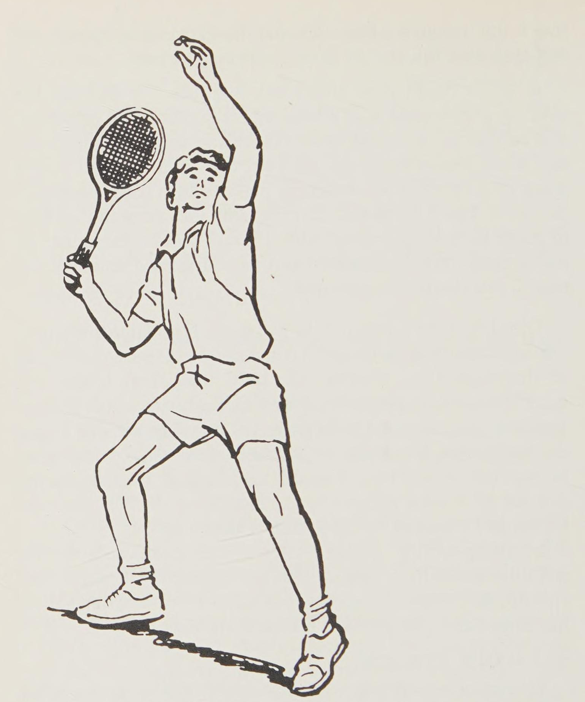
Quen, hãy sử dụng một chút động tác theo bóng (follow-through). Ít cầu thủ kết hợp động tác theo bóng với một cú vô-lê, nhưng điều đó mang lại hiệu quả kinh ngạc trong việc làm mượt cú đánh.
Đập bóng (Smashing) Cú đập bóng của bạn cần sự vững chắc hơn là tốc độ, bởi vì ở trình độ chơi Lối chơi Lên lưới tương đối cao, bạn sẽ nhận được nhiều cú lốp tốt hơn là những cú lốp kém. Để đập một cú lốp sâu, bạn phải di chuyển lùi lại trong khi vẫn đối diện về phía trước. Hãy đưa cánh tay trái lên để giữ thăng bằng khi lùi lại và đưa vợt lên gần vai phải của bạn. Xem Hình 21.
Vào khoảnh khắc cuối cùng, hãy bật lên để đón bóng (để bạn không có cảm giác run rẩy rằng bóng đang rơi xuống đầu mình) và đánh bóng về phía trước, không đánh xuống. Bạn đang đứng sâu trong sân và một cú đập bóng vốn đã có xu hướng đi xuống. Đừng sử dụng cú vung đầy đủ như khi bạn giao bóng, trong đó bạn vung vợt ra sau cơ thể để đẩy một quả bóng gần như đứng yên từ phía sau vạch cuối sân. Hãy nhắm quả bóng vượt qua lưới một khoảng an toàn.
Nếu bạn đánh vào trung tâm của mặt lưới, quả bóng sẽ đi đúng độ sâu mà bạn nhắm tới. Nếu bạn đánh phía trên trung tâm, quả bóng sẽ đi thấp hơn và ngắn hơn mục tiêu. Nếu bạn đánh bóng phía dưới trung tâm, ngay tại phần võng của mặt vợt, quả bóng sẽ bay vút lên và ra ngoài vạch cuối sân. Xem Hình 22.
Phần phía dưới trung tâm của mặt lưới không có đặc tính ma thuật nào khiến quả bóng bay vút lên và ra ngoài—đơn giản là khi bạn đánh bóng ở đây, mặt vợt của bạn luôn nghiêng về phía sau hướng về hàng rào phía sau, vì vậy quả bóng bay lên.
垂-dù sao đi nữa, hãy quan sát một số cầu thủ khác đập những cú lốp sâu.
Bạn sẽ thấy rằng hầu hết họ vung vợt quá sâu và đánh bóng vào lưới nhiều gần bằng số lần đánh qua, và nếu họ đưa bóng ra ngoài vạch cuối sân, họ đã đánh bóng từ phía dưới trung tâm mặt lưới.
Hãy luyện tập kỹ thuật này và cú đánh trên đầu của bạn sẽ trở nên an toàn trước các cú lốp sâu cũng như các cú lốp ngắn. Đó chính là sở hữu một cú overhead vững chắc.
PHÍA TRÊN TRUNG TÂM TRUNG TÂM của mặt lưới PHÍA DƯỚI TRUNG TÂM Xin hãy kiên nhẫn Hãy giữ bình tĩnh và kiên nhẫn trước những cú lốp sâu. Bạn không cần phải thắng bằng một cú đập duy nhất. Hãy đập bóng chắc chắn và tiến lên một lần nữa. Chỉ tuyệt vọng khi cố gắng chạm tới những centimet cuối cùng, trong khi đánh một cú lốp gần như ngoài tầm với ngay khi bóng còn trên không, thay vì để bóng nảy và đuổi theo nó—và đánh mất vị trí lưới của mình. Hình 23.
Bạn bắt đầu với vị trí lưới. Hãy giữ chặt nó.
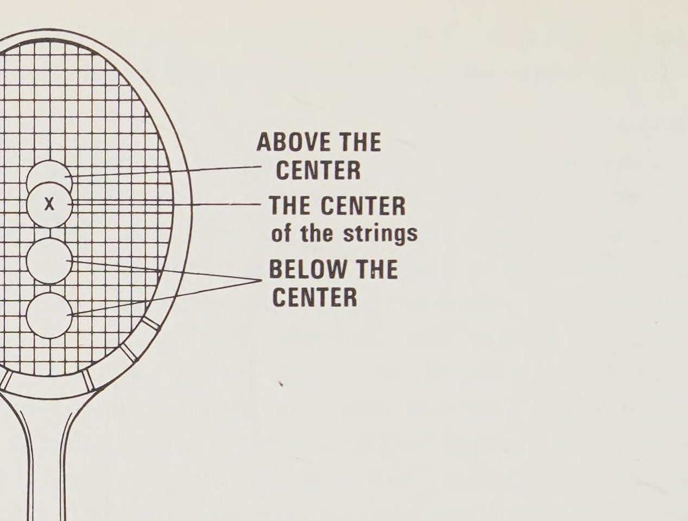
Điều đó không chỉ được chấp nhận, mà là cần thiết. Nó tạo ra sự khác biệt lớn cho vị trí—bạn sẽ giữ được rào chắn lưới hoặc đối phương sẽ chiếm được nó.
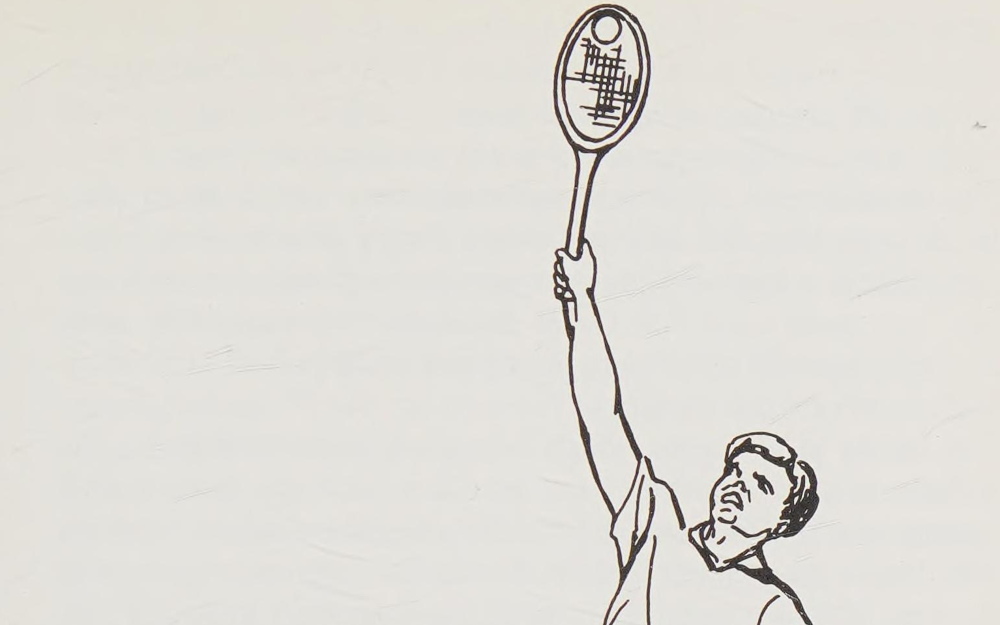
GIAO BÓNG Việc giao bóng đã được đề cập chi tiết về cả chiến thuật và kỹ thuật. Khi thảo luận về giao bóng trong đánh đôi Lối chơi Lên lưới, chúng ta sẽ tiếp tục giả định rằng cú giao bóng của bạn không quá áp đảo đến mức liên tục gây ra những cú ace cho đối thủ hoặc khiến họ đánh hỏng hoặc chơi các cú đánh yếu, trong trường hợp đó bạn có thể thắng chỉ bằng các cú đánh của mình.
Tất cả các tình huống giả định rằng cú giao bóng của bạn cần có sự hỗ trợ về chiến thuật, rằng bạn cần đội hình Lối chơi Lên lưới để chiến thắng, dù là chắc chắn chống lại các cặp đấu kém hơn hoặc bằng một nỗ lực cuối cùng khi bạn đối đầu với một đối thủ ngang tầm.
Đối với cú giao bóng chủ lực, đừng đánh bóng quá mạnh. Trừ khi đó là một cú thắng điểm hoặc gần như thắng điểm, nếu không bóng sẽ trả về quá nhanh và bắt kịp bạn khi bạn còn quá xa lưới để có một cú vô-lê thoải mái. Bạn sẽ “buộc đối thủ phải chơi xuất thần”. Thay vào đó, hãy giao bóng với ý tưởng là đặt mình vào vị trí tốt nhất để thực hiện Cú Vô-lê Đầu tiên, một cú đánh then chốt xứng đáng có tên riêng. Giao bóng với nhịp điệu và sự thăng bằng sao cho cú giao và động tác theo bóng kết thúc bằng việc chân phải bước vào sân như là bước đầu tiên trong quá trình tiếp cận lưới. Giao bóng phẳng, cắt và xoáy-cắt đều tương thích với điều này. Hành động giao bóng xoáy lên đẩy chân phải của bạn hơi chệch sang một bên, cú xoáy cực mạnh (hoặc American Twist) đẩy chân đó hẳn sang bên phải, và những biến dạng này làm chậm quá trình bắt đầu tiếp cận lưới. Tuy nhiên, ai cũng biết rằng hai cú giao này có quỹ đạo cao hơn qua lưới so với những cú khác và do đó mất nhiều thời gian hơn để đến với vợt của người nhận. Vì vậy, chúng cho người giao bóng thời gian tối đa để vào vị trí. Nó cũng cải thiện sự tự tin của bạn trong các loại giao bóng khác khi biết rằng sự mượt mà của chúng có thể hỗ trợ việc tiếp cận lưới của bạn.
Đừng phạm lỗi chân (foot-fault). Sự hăng hái muốn tiếp cận lưới khiến bạn phạm lỗi này gần như mọi lúc nếu bạn không nhận thức được. Rồi một ngày vào một khoảnh khắc căng thẳng, ai đó bất ngờ hét lên, “Lỗi chân!” Cảm giác giống như ai đó gọi bạn là “Phạm quy!” Hoặc thậm chí, với một tâm hồn nhạy cảm, là “Gian lận!” Bạn là một đối thủ rất kinh nghiệm nếu điều đó không làm bạn khó chịu, hoặc ít nhất là khiến bạn cảm thấy tự ti, điều này gây cản trở sự tập trung và việc quan sát bóng trong cú giao tiếp theo. Thay vào đó, hãy đứng cách xa vạchxử lý rõ ràng nếu bạn biết mình luôn di chuyển chân trước một chút, xa thật xa nếu bạn biết mình di chuyển nhiều. Đừng tự thương hại vì bạn đang tự phạt mình, vì Chúa ơi. Sau đó giao bóng, theo bóng, vung chân phải qua và bước vào sân và tiến về phía lưới.
Tiến về phía lưới nhanh chóng hoặc mạnh mẽ, tùy theo thể hình và khả năng di chuyển của bạn. Đừng bao giờ coi mình là đang vội vã tiến lên lưới. Tiếng bước chân hối hả của những đứa trẻ thuộc về một bữa tiệc thiếu nhi, hoặc có lẽ là của một thành viên táo bạo trong cặp Hai Dưới, người bất ngờ bứt tốc lên lưới ở điểm quyết định. Chúng không thuộc về một cầu thủ theo mọi cú giao bóng lên lưới.
Thời gian giữa lúc tác động giao bóng và lúc tác động cú vô-lê đầu tiên càng dài, bạn càng tiến sâu vào lưới, và cú vô-lê này sẽ càng dễ dàng hơn. Do đó, hãy lưu ý rằng bạn cần giao bóng sâu, thay vì phó mặc cho may rủi và cố gắng bù đắp thời gian bằng cách “lao” vào.
Trong hầu hết các điểm, cú vô-lê đầu tiên, thay vì cú giao bóng, mới là cú đánh then chốt. Hầu hết bạn có thể thực hiện nó tốt và, nếu làm vậy, tỉ lệ chiến thắng điểm đó, ngay lập tức hoặc cuối cùng, sẽ tăng vọt. Do đó, nếu bạn nhận được một cú vô-lê đầu tiên thoải mái, đừng bao giờ bỏ lỡ nó—đó là sự lãng phí bất cẩn. Nếu nó khó, hãy cố gắng xoay xở đưa bóng trở lại bằng mọi giá và giữ cho điểm số tiếp tục.
Thuận buồm xuôi gió Hãy cố gắng ghi ace bất cứ khi nào bạn muốn, nhưng nhiều người giao bóng thấy rằng việc quá tập trung vào một cú đánh duy nhất sẽ gây cản trở sự thăng bằng trong việc tiến lên cho cú vô-lê đầu tiên, nếu người nhận cuối cùng trả bóng tốt. Phương pháp chủ lực của nhiều cầu thủ kinh nghiệm là coi cú giao bóng và cú vô-lê đầu tiên như một cặp cú đánh thay vì là hai cú đánh riêng biệt. Họ vung cú giao bóng qua lưới, có vẻ như uốn cong nó xuống trong ô giao bóng gần như chờ đón bóng với đôi tay mở rộng, tiến vào như một phần của hành động giao bóng tiếp diễn, tạm dừng hoặc chậm lại một chút khi người nhận đánh bóng, thực hiện một cú vô-lê đầu tiên thoải mái, và tiến sâu hơn để song song với người đứng lưới và tạo thành rào chắn lưới với anh ta.
Nó khá giống như một ván cờ, khi người chơi cầm quân trắng đi trước và, không mạo hiểm và cũng không tìm kiếm một cú đánh nhanh, tự đặt mình vào một vị trí mở đầu vững chắc. Xem Hình 24.
Lý do tại sao người giao bóng thường giữ được ván giao bóng trong một trận đấu ngang tài ngang sức là vì cặp giao bóng có cơ hội đầu tiên để tạo rào chắn lưới, chứ không phải vì cú giao bóng vượt trội hơn cú trả bóng. Đây là một trong những ví dụ rõ ràng nhất, và chắc chắn là nhất quán nhất, về việc chiến thuật chi phối lối chơi, mặc dù các cú đánh của cả hai cặp có thể tương đương nhau.
Nếu bạn xem các nhà vô địch đánh đôi trên TV, bạn sẽ nhận thấy rằng lối chơi rực rỡ và đa dạng của họ trông có vẻ tự phát, thậm chí là chộp thời cơ. Không nghi ngờ gì một phần là vậy, nhưng cơ sở giao bóng chủ lực của họ là ở đó, để giữ thăng bằng vô-lê và đạt tầm với tối đa sang phải hoặc trái. Người nhận trả bóng trái tay về phía A hoặc B. Anh ta đã tránh được người đứng lưới nhưng quả bóng vẫn ở trên độ cao của lưới và không phải là một cú đánh khó cho người giao bóng đang tiến vào.
Người giao bóng thực hiện một cú vô-lê đầu tiên thoải mái từ trái tay (A) hoặc thuận tay (B) sâu về phía trái tay của người nhận và tiến sát vào. Không cần mạo hiểm chút nào, người giao bóng đã buộc người nhận phải đánh cú tiếp theo từ phía sau vạch cuối sân và đã tạo ra một rào chắn lưới với đối tác của mình. Từ vị trí hoàn hảo này, bạn sẽ đồng ý rằng nếu lúc này anh ta để bị lốp bóng qua đầu, anh ta nên bị đuổi ra khỏi sân.
Lối chơi Lên lưới—Giao bóng ©
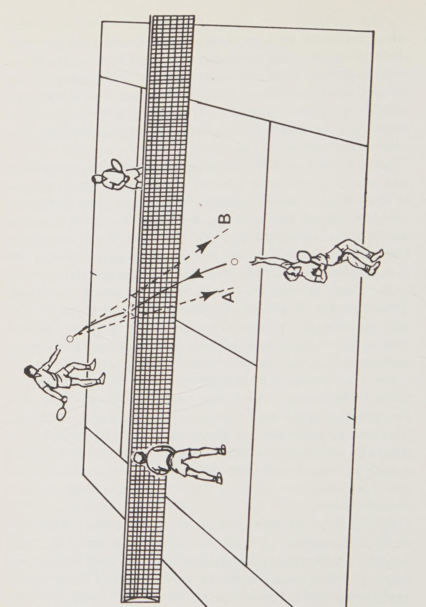
Như hiển thị trong Hình 24. Nó có thể nhận diện được. (Đừng nhìn bóng trong một lúc mà hãy để mắt đến người giao bóng thay vào đó.) Thật thỏa mãn khi có một cơ sở để làm việc và điều đó không nghĩa là bạn bị rập khuôn. Chỉ xét một cú đánh duy nhất, giao bóng, bạn có thể giao bóng từ cùng một vị trí và đưa bóng đến cùng một điểm trong sân của người nhận mà vẫn khiến anh ta cảm thấy đó là một quả bóng khác.
Xem Hình 25.
Hãy thực hiện cú vô-lê đầu tiên từ bên trong vạch giao bóng bất cứ khi nào có thể. Nếu không làm vậy là lười biếng. Nếu bạn chắc chắn mình không lười, thì bạn cần luyện tập một hành động kết hợp giao bóng-và-tiếp cận mượt mà hơn và do đó nhanh hơn. Nếu bạn không thể làm được điều đó hiên, bạn sẽ phải giao bóng với quỹ đạo cao hơn. Hãy cho mình một cơ hội công bằng xuyên suốt bằng cách nhớ đưa bóng rơi sâu nhất có thể và không giao bóng với tốc độ tối đa cho một người nhận có thể xử lý được tốc độ của bạn. Hình phạt cho việc không tiến sâu vào lưới là những cú vô-lê đầu tiên lẽ ra thoải mái của bạn sẽ bị thay thế bằng một loạt các cú vô-lê rất thấp hoặc nửa-vô-lê, và cũng có thể là một vài cú đánh lai nằm đâu đó giữa nửa-vô-lê và bóng bay lên.
Khi người nhận thỉnh thoảng trả một quả bóng rất chậm và cao vượt lưới, bạn có thể chạy hết tốc lực vào và đánh một cú thắng điểm hoặc gần như thắng điểm. Tuy nhiên, trong mọi trường hợp khác, bạn sẽ phải tạm dừng một chút trong quá trình tiếp cận khi người nhận đánh bóng—vì hai lý do. Một là bạn không thể thay đổi hướng để bao quát các cú trả bóng rộng một cách chính xác khi bạn đang chạy về phía trước, và lý do kia là bạn không thể vô-lê có kiểm soát khi bạn đang chạy hết tốc lực. Sự tạm dừng này không phải là dừng hẳn, nhưng nó phải xảy ra ngay cả khi bạn hầu như không nhận ra mình đã làm vậy. Một sự tương tự nằm ở cú vung thuận tay drive của bạn: cho dù bạn dừng lại ở cuối cú vung ra sau hay chỉ chậm lại, một sự tạm dừng vẫn xảy ra ở đó; bạn không bao giờ vung ra sau và tiến về trước trong một chuyển động vòng lặp với cùng một tốc độ.
Một khi bạn nhận ra cảm giác thỏa mãn và an toàn đến từ việc thiết lập một cú vô-lê đầu tiên thoải mái cho chính mình, bạn không thể không nhận thấy rằng trạng thái hạnh phúc này xảy ra sau những cú giao bóng một thường xuyên hơn nhiều so với cú giao bóng hai. Trước đây, bạn có thể đã e ngại lời khuyên là phải đưa ít nhất 70 phần trăm cú giao bóng một vào sân. Có vẻ như nó làm mất đi sự táo bạo của bạn. Tuy nhiên, với một cú vô-lê dễ quản lý làm phần thưởng, bạn sẽ muốn đưa tất cả chúng vào sân. Khi một cú giao hỏng, bạn sẽ muốn có một cú giao bóng hai vẫn cho phép bạn giành lấy phần thưởng của mình. Bạn thà có hai cú giao bóng tốt còn hơn là một.
Đó là điều mà các huấn luyện viên và cố vấn đã nói trong nhiều năm, nhưng bạn phải tự khám phá cách diễn giải của riêng mình về điều đó trước khi thấy nó thuyết phục.
Khó khăn Điểm yếu nguy hiểm nhất mà bạn có thể có trong bộ giáp của mình là sự thiếu tự tin vào khả năng đưa một cú giao bóng hai quan trọng vào trái tay của đối thủ ô bên phải. Những điểm quan trọng không hẳn là điểm quyết định trận đấu mà là những điểm mà mọi thứ đang ở thế cân bằng liệu bạn sẽ thắng hay thua. Bị dẫn 1-5 và 15-40 không thể so sánh được về sự căng thẳng với tỉ số 4-tất cả, giao bóng một bị lỗi, và người nhận ô bên phải đang hăng hái đập một cú thuận tay xoáy lên xuống ngay dưới chân bạn. Nếu anh ta thành công và anh ta cùng đối tác-tiếp tục thắng 6-4, thì đó mới là điểm quyết định thực sự, và bạn nhận ra điều đó vào khoảnh khắc quan trọng này. Cú giao bóng chủ lực của bạn từ trước đến nay có ích gì hiếu, nếu nó là kiểu giao bóng một nhanh và đưa được một số lượng hợp lý vào sân, nhưng quả bóng thứ hai của bạn là—chà, hãy nói là “tạm chấp nhận được?” Đứng ở vị trí cho bạn sự bảo vệ tối đa, và bạn tiến về phía C. Bạn đã làm tất cả những gì có thể về mặt chiến thuật, nhưng một cú giao bóng kém để lại BD là một cú đánh dễ dàng cho người nhận và là một cú đánh cực kỳ khó khăn cho bạn.
Cùng một người, giao bóng từ cùng một vị trí, nhắm vào cùng một điểm—nhưng với quỹ đạo và độ nảy khác nhau, người nhận cảm thấy mình nhận được bốn quả bóng khác nhau, hoặc nhiều hơn.
Cắt (Slice) American Twist S © Xoáy lên (Topspin) Cắt (Slice) S Q Xoáy lên (Topspin) hoặc Phẳng (Flat)
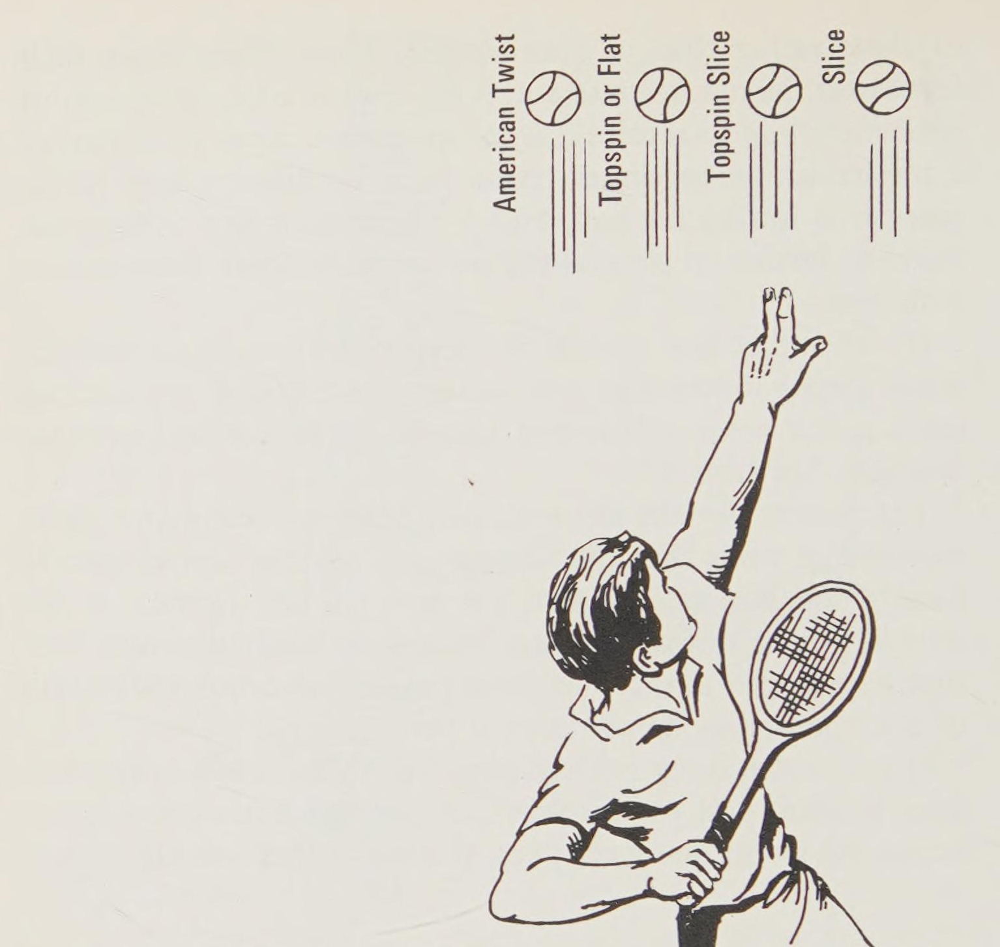
Như hiển thị trong Hình 24. Nó có thể nhận diện được. (Đừng nhìn bóng trong một lát và hãy để mắt đến người giao bóng thay vào đó.) Thật thỏa mãn khi có một cơ sở để làm việc và điều đó không nghĩa là bạn bị rập khuôn. Chỉ xét một cú đánh đơn lẻ, giao bóng, bạn có thể giao bóng từ cùng một vị trí và đưa bóng vào cùng một điểm trong sân của người nhận nhưng vẫn khiến anh ta cảm thấy đó là một quả bóng khác đối với anh ta. Xem Hình 25.
Hãy thực hiện cú vô-lê đầu tiên từ phía trong vạch giao bóng bất cứ khi nào có thể. Đó là sự lười biếng nếu bạn không làm vậy. Nếu bạn chắc chắn mình không lười, thì bạn cần luyện tập một hành động kết hợp giao bóng-và-tiếp cận mượt mà hơn và do đó nhanh hơn.
Nếu bạn không thể làm được điều đó, bạn sẽ phải giao bóng với quỹ đạo cao hơn. Hãy cho bản thân một cơ hội công bằng trong suốt quá trình bằng cách nhớ đưa bóng vào sân sâu nhất có thể và không giao bóng với tốc độ tối đa cho một người nhận người có thể xử lý được tốc độ của bạn. Hình phạt cho việc không tiến-sát vào lưới là những cú vô-lê đầu tiên vốn dĩ thoải mái của bạn sẽ bị thay thế bằng một chuỗi những cú vô-lê rất thấp hoặc nửa-vô-lê, và có lẽ cả một vài cú đánh lai giữa nửa-vô-lê và bóng bay lên.
Khi người nhận thỉnh thoảng trả một quả bóng rất chậm và cao vượt qua lưới, bạn có thể chạy hết tốc lực vào và đánh một cú thắng hoặc gần thắng. Trong mọi trường hợp khác, tuy nhiên, bạn sẽ phải tạm dừng một chút trong quá trình tiếp cận khi người nhận đánh quả bóng—vì hai lý do. Một là bạn không thể thay đổi hướng để bao quát các cú trả bóng rộng một cách chính xác trong khi bạn đang chạy về phía trước, và lý do kia là bạn không thể vô-lê có kiểm soát trong khi bạn đang chạy hết tốc lực. Sự tạm dừng này không phải là dừng hẳn, nhưng nó phải xảy ra ngay cả khi bạn hầu như không nhận thấy mình đã làm vậy. Một sự tương đồng là trong cú vung thuận tay của bạn: cho dù bạn dừng lại ở cuối cú vung ra sau hoặc chỉ chậm lại, một sự tạm dừng vẫn xảy ra ở đó; bạn không bao giờ vung ra sau và vung tới trong một chuyển động vòng lặp với cùng một tốc độ.
Một khi bạn nhận ra cảm giác thỏa mãn và an toàn đến từ việc thiết lập một cú vô-lê đầu tiên thoải mái cho chính mình, bạn không thể không nhận thấy rằng trạng thái hạnh phúc này xảy ra thường xuyên hơn sau những cú giao bóng một hơn là giao bóng hai. Trước đây, bạn có thể đã ngần ngại trước lời khuyên hãy đưa ít nhất 70 phần trăm các cú giao bóng một vào sân. Có vẻ như điều đó làm mất đi sự táo bạo của bạn. Tuy nhiên, với phần thưởng là một cú vô-lê đầu tiên dễ dàng, bạn sẽ muốn đưa tất cả chúng vào sân. Khi một cú bị hỏng, bạn sẽ muốn có một cú giao bóng hai vẫn cho phép bạn giành được phần thưởng của mình. Bạn thà có hai cú giao bóng tốt hơn là một. Đó là những gì các huấn luyện viên và người cố vấn đã nói trong nhiều năm, nhưng bạn phải tự khám phá cách hiểu của riêng mình về điều đó trước khi thấy thuyết phục.
Khó khăn (Rough Going) Điểm yếu nguy hiểm nhất mà bạn có thể gặp phải trong bộ giáp của mình là sự thiếu tự tin vào khả năng đưa một cú giao bóng hai quan trọng vào trái tay của đối thủ ô bên phải. Những điểm quan trọng không hẳn là điểm quyết định trận đấu mà là những điểm mà kết quả thắng hay thua chỉ cách nhau trong gang tấc. Việc bị dẫn 1-5 và 15-40 không thể so sánh được về độ căng thẳng với tỉ số 4-tất cả, cú giao bóng một bị lỗi, và người nhận ô bên phải đang khao khát dập một cú thuận tay xoáy lên xuống sát chân bạn. Nếu anh ta thành công và anh ta cùng đối tác của mình đi tới chiến thắng 6-4, thì đó mới là điểm quyết định thực sự, la và bạn nhận ra điều đó tại thời điểm quan trọng này. Cú giao bóng theo khái niệm trước đây của bạn có ích gì lúc này, nếu nó là một kiểu giao bóng một nhanh và đưa được một số quả vào sân, nhưng quả thứ hai của bạn là—chà, hãy nói là “tạm chấp nhận được?” Và là một cú đánh cực kỳ khó khăn cho bạn.
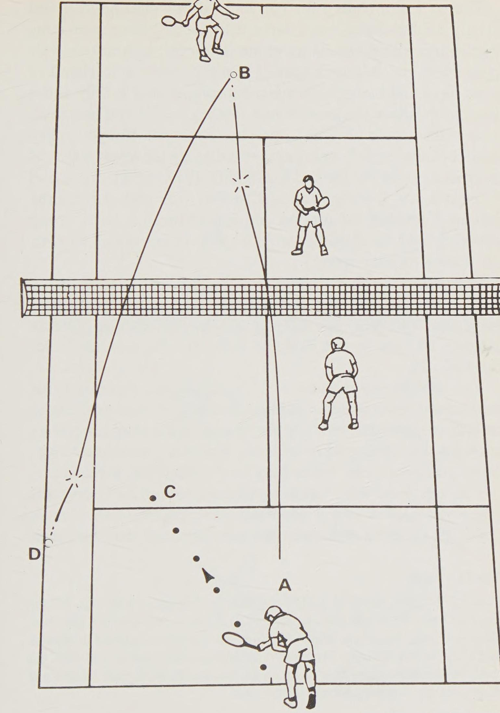
Vẫn còn cơ hội để bạn giữ điểm quan trọng này nếu bạn nhận ra rõ ràng rằng một cú giao bóng yếu đòi hỏi một cú vô-lê hồi phục mạnh mẽ, không chút do dự. Bạn giao cú giao bóng tương đối kém của mình và tiến lên mạnh mẽ. Anh ta dễ dàng thực hiện một cú thuận tay Từ cú giao của bạn và đập trả lại một cú xoáy lên nhanh chỉ cao khoảng năm centimet so với mặt đất khi chạm tới bạn. Nếu bạn do dự, cú vô-lê của bạn sẽ yếu hoặc có lẽ sẽ vào lưới. Nhưng bạn vô-lê mạnh, gập đầu gối sâu và ấn khung dưới của vợt xuống đất để tạo độ cứng và điểm tựa. Nếu bóng lại thấp hơn nữa, buộc bạn phải nửa-vô-lê, bạn đánh quả bóng ngay khi nó chạm đất và theo bóng với độ xoáy lên bao phủ mạnh mẽ. Có lẽ bạn sẽ thoát ra được, dù không nhờ vào cú giao bóng của mình.
Phòng bệnh hơn chữa bệnh. Câu trả lời tốt nhất cho một cú thuận tay mạnh ở ô bên phải là có thể tránh nó bằng một cú giao bóng tử tế được thực hiện từ khoảng nửa đường ra đường biên dọc. Việc chỉ chơi Đội hình Song hành không có khả năng bù đắp cho một cú giao bóng yếu.
Xem Hình 26.
Hiếm khi thấy Đội hình Song hành ô bên phải được thực hiện. Có lẽ ba hoàn cảnh kết hợp lại sẽ biện minh cho việc sử dụng nó: người giao bóng nếu không vậy không thể đưa bóng vào trái tay người nhận; người nhận cho thấy phong độ hủy diệt với cú drive thuận tay chéo sân; người giao bóng có cú vô-lê trái tay tốt hơn nhiều so với thuận tay.
Song hành sang ô bên trái là một đề xuất hoàn toàn khác, khi bạn hỗ trợ nó bằng một cú giao bóng tốt và chơi để chặn đứng một cú thuận tay xoáy lên chéo sân của một người thuận tay trái giỏi đã được sâu, và hoặc là cắt và uốn ra xa trái tay của người nhận hoặc xoáy lên và gãy vào cơ thể anh ta. Người nhận được hiển thị đã định vị bản thân tốt, nhưng hiều người thuận tay trái thích chơi một cú trái tay xoáy trong sang phía không thuận và gặp khó khăn trong việc biến BD thành một cú đánh hiệu quả.
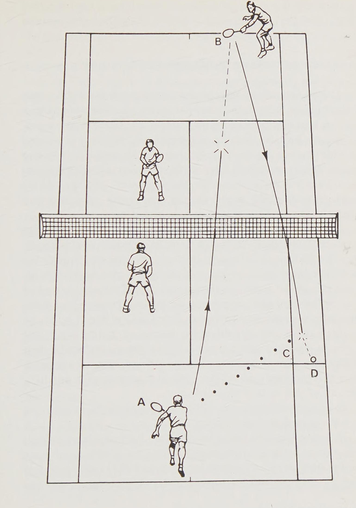
Thống trị cuộc chơi. Điều này đã được thảo luận cho đội hình Một trên Một dưới trong Chương 2. Đối với ứng dụng trong Lối chơi Lên lưới, xem Hình 27.
CHỐNG LẠI CÁC ĐỘI HÌNH NHẬN BÓNG KHÁC NHAU Khi bạn chuẩn bị giao bóng trong ván mở đầu chống lại một cặp mà lối chơi của họ còn chưa rõ, bạn thấy đối tác của người nhận cũng đứng lùi lại. Điều này có thể nghĩa là họ không phải là một cặp quan tâm đến lưới, hoặc người nhận không tự tin trong việc thực hiện một cú trả bóng mạnh chống lại cú giao bóng một của bạn. Tuy nhiên, nó cũng có thể nghĩa là anh ta định lốp bóng qua người đứng lưới hoặc đánh dọc đường biên của anh ta —để giữ anh ta ở đúng vị trí ngay từ đầu—và đã bảo đối tác của mình đứng lùi lại trong trường hợp người đứng lưới bao quát bất kỳ cú đánh nào và đánh nó vào khoảng trống không có người bảo vệ giữa họ.
Vì không bao giờ là một ý kiến hay khi đánh giá thấp đối thủ của bạn trong đánh đôi (trong đánh đơn dễ sửa sai hơn), đối tác đứng lưới của bạn nên từ bỏ bất kỳ ý định mở đầu nào bằng một cú chặn bóng gây nản lòng, và thay vào đó nên chăm sóc phía sân của mình. Với tư cách là người giao bóng, bạn nên tận dụng cơ hội mình có khi chơi chống lại một đội hình phòng ngự Hai Dưới (điều này có thể thay đổi thành Một trên Một dưới cho cú giao bóng hai) và vì vậy bạn nên chắc chắn đưa cú giao bóng một vào sân khi điều kiện đang thuận lợi. Nếu bạn có một cú vô-lê đầu tiên thoải mái, bạn có toàn bộ sân để nhắm tới. Nếu bạn nhận được một cú khó, ít nhất không có người đứng lưới đứng đối diện bạn, hoặc đè nặng lên bạn như thường thấy.
Khi mở đầu theo cách này, bạn sẽ không gặp rắc rối, giống như lái một chiếc xe tốt và không rủi ro.
Nếu đối thủ của bạn chứng minh mình là một cặp nhận bóng Hai Dưới suốt thời gian, bạn và đối tác sẽ có thể giữ ván giao bóng một cách thoải mái. Hãy tiếp tục chơi hệ thống Lối chơi Lên lưới của bạn và kiếm điểm dễ dàng như một chiếc máy đánh chữ đang in chữ. Đừng trở nên lười biếng trong việc tiến sâu vào cho cú vô-lê đầu tiên, vì đó là nơi sự sa sút bắt đầu. Tương tự, bạn có thể coi đó là điểm then chốt để duy trì sự tập trung.
Đối với Người nhận Một trên Một dưới Trong đội hình Một trên Một dưới, đối thủ của bạn có tiềm năng tấn công, vì người đứng lưới của họ đe dọa chặn cú vô-lê đầu tiên của bạn và có lẽ đánh một cú thắng điểm. Tuy nhiên, sự tấn công thực tế và sự tham gia của người đứng lưới phụ thuộc vào chất lượng cú trả giao bóng của người nhận. Vì vậy chúng ta sẽ phân tích các loại trả bóng khác nhau, giả định trong mọi trường hợp rằng người nhận đã đánh chúng thoát khỏi phạm vi bao quát của người đứng lưới và rằng bạn, với tư cách là người giao bóng đang tiến vào, sẽ là người xử lý chúng.
Nếu cú trả bóng cao trên lưới, đội hình Một trên Một dưới của người nhận để họ ở vị trí yếu hơn so với nếu họ chơi Hai Dưới, nơi họ sẽ ở vị trí tốt hơn để trả lại cú vô-lê đầu tiên của bạn. Trong một đội hình Một trên Một dưới, người đứng lưới của họ thay đổi từ mối đe dọa thành mục tiêu. Tùy thuộc vào việc anh ta đứng gần hay xa lưới, bạn có thể bắn quả bóng vào hông phải dễ tổn thương của anh ta (như hiển thị ở Hình 19 trang 74, nơi bạn đang khẳng định chính mình) hoặc đánh bóng xuống đất tại chân anh ta. Bất cứ khi nào cú trả bóng cao, bạn là người nắm quyền kiểm soát—bất kể người nhận bình thường là cầu thủ mạnh đến đâu, hay đối tác của anh ta đã chiếm vị trí lưới đe dọa đến mức nào. Đối với người nhận Một trên Một dưới, hãy tìm kiếm những cú trả bóng cao này và giao bóng với mục tiêu hoặc ít nhất là hy vọng nhận được một quả như vậy.
Nếu cú trả bóng ở mức trung bình đến chậm và cao khoảng tầm lưới, nó khá vô hại và bạn có thể dễ dàng tránh người đứng lưới. Nếu nó từ ô bên phải, bạn có thể cho phép mình đánh gần anh ta hơn bình thường và thực hiện một cú vô-lê đầu tiên xuyên thấu sâu dọc theo trung tâm, hoặc trong mọi trường hợp là hướng về trái tay của người nhận. Từ ô bên trái bạn có thể dễ dàng vô-lê sang trái tay của người nhận và gần như
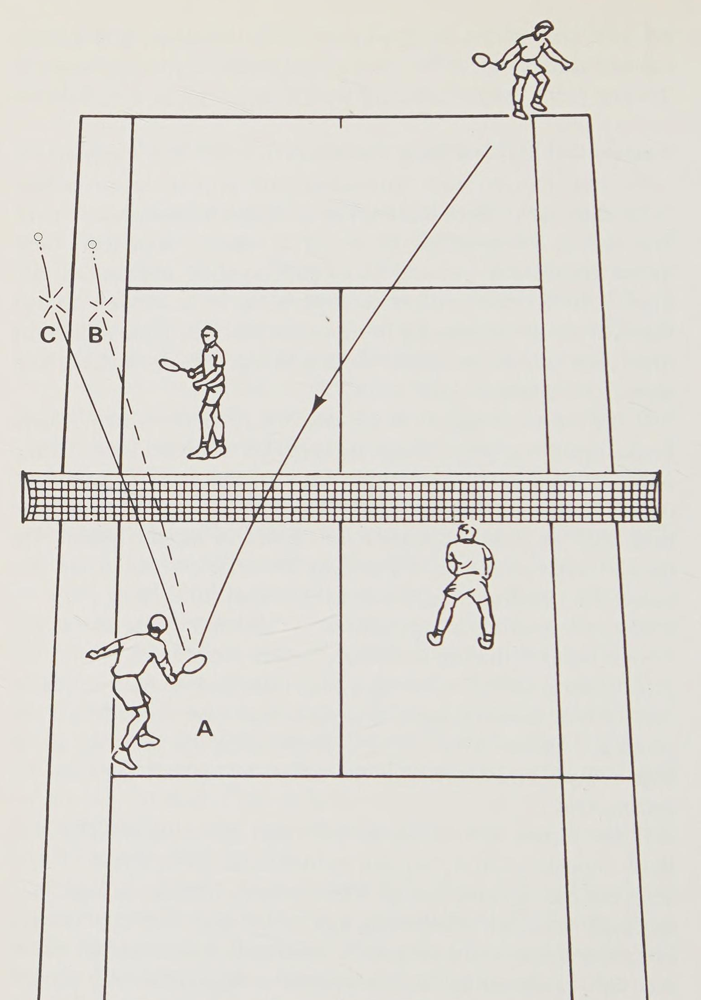
Luôn luôn nên làm vậy. Khi thực hiện cú vô-lê thuận tay đầu tiên từ cú trả bóng ô bên trái, trừ khi bạn chắc chắn tuyệt đối, việc cố đánh xuyên qua quả bóng để đánh bại người đứng lưới ra đường biên là một cú đánh sai lầm (sucker play). Xem Hình 28.
Khi cú trả bóng khá tốt—dù là về tốc độ, độ rơi, góc độ, độ thấp hoặc bất kỳ hình thức khó chịu nào đối với bạn—bạn có thể chắc chắn rằng người đứng lưới cũng nhận thức được điều này. Anh ta giờ đây là một mối nguy hiểm cần tránh, vì vậy từ ô bên phải, đừng trông mong thực hiện cú vô-lê đầu tiên sang trái tay của người nhận. Nó có khả năng bị chặn. Hãy hài lòng với việc đánh quả bóng sâu và tiến lên chờ diễn biến tiếp theo. Giao bóng sang ô bên trái, cú vô-lê trái tay chéo sân thông thường của bạn tránh được người đứng lưới và đồng thời hướng về trái tay của người nhận.
Khi cú trả bóng thực sự tốt, người đứng lưới đối phương tăng tầm vóc từ một mối nguy tiềm tàng thành một mối đe dọa chắc chắn. Chiến thuật của bạn là tránh anh ta bằng mọi giá và đánh bóng trả lại cho người nhận rồi tiến lên. Bạn vẫn có lợi thế về vị trí, vì anh ta vẫn đối mặt với nhiệm vụ phải đánh bại rào chắn lưới của bạn bằng một cú đánh cuối sân. Phần nhỏ đó là quá nhiều, và cú AB dự định của bạn bay ra đường biên thành AC.
Điều này đã xảy ra từ thời xa xưa, nhưng rõ ràng mỗi chúng ta luôn phải tự mình nhận ra.
Đó là một cách hoàn hảo để đưa tỉ số về hòa sau khi dẫn 40-30.
Chống lại Người nhận Lối chơi Lên lưới Một giai đoạn mới đạt tới khi người nhận cố gắng theo cú trả bóng của mình lên lưới và vô-lê cú vô-lê đầu tiên của bạn. Đây là cách nhận bóng Lối chơi Lên lưới.
Để giữ thế thượng phong, bạn phải ngăn cản anh ta làm điều này nếu có thể, nếu không đối thủ sẽ tạo ra một rào chắn lưới của chính họ. Trong trường hợp này, lợi thế giao bóng của bạn sẽ mất đi và vấn đề sẽ là bên nào vô-lê tốt hơn. Bạn phải cố gắng giữ lợi thế ban đầu bằng cách giao bóng đủ tốt để khiến người nhận mất thăng bằng khi trả bóng (sao cho anh ta không thể đánh bóng và tiến lên trong cùng một chuyển động) và bằng cách tiến lên nhanh đến mức nếu có bất kỳ cuộc trao đổi vô-lê nào xảy ra, đó sẽ là những cú vô-lê của bạn được đánh hướng xuống chứ không phải của người nhận.
Tất cả những điều này tăng gấp đôi, như bạn mong đợi, khi những người nhận Lối chơi Lên lưới thực hiện những cú trả bóng bay lên.
Trong bất kỳ cuộc trao đổi vô-lê nhanh nào, cả bạn và đối tác của bạn đều nên muốn vô-lê những quả bóng đi dọc trung tâm thay vì đứng tách ra. Thà có hai cây vợt cùng cố gắng đánh một quả bóng còn hơn là không có ai. * Tuy nhiên, bạn có thể làm tốt hơn thế. Một quy tắc hoạt động hiệu quả, vì nó mang tính bản năng, là người chơi đánh quả bóng cuối cùng sẽ đánh quả tiếp theo, giống như thể anh ta đang chơi đánh đơn. Luôn bảo vệ trung tâm của mình thật tốt và chủ yếu tấn công phần trung tâm của đối thủ. Những cú vô-lê góc không phải là cơ sở của tình huống hai rào chắn này và cố gắng thực hiện chúng thường không gì hơn là một cú đánh sai lầm.
Chống lại những Cú trả giao bóng Kỳ dị Không hiếm khi gặp một cầu thủ với cú giao bóng, hoặc cú thuận tay, hoặc sự linh hoạt ở lưới, hoặc bất cứ điều gì xuất sắc. Rất hiếm khi bạn tìm thấy ai đó với gần như toàn bộ sức mạnh nằm ở cú trả giao bóng—và không phải ở một loạt các cú trả bóng, mà ở một cú đánh duy nhất.
* Hai cây vợt có thể va chạm, nhưng chỉ một cây đánh trúng bóng (vào sân). Đây không phải là Lỗi Đánh Đôi (Double Hit), vốn là một lỗi, nơi vợt của một cầu thủ đánh bóng hai lần.
Đây là một tình huống như vậy. Bạn đang dẫn 15-0 và giao bóng cho kẻ kỳ dị chưa được nhận diện này, người đang đứng lệch hẳn sang trái của anh ta. Rõ ràng anh ta có cú thuận tay tốt, vì vậy bạn nhắm vào trái tay của anh ta và tiến lên. Bạn nghe thấy tiếng chân di chuyển nhanh trên mặt sân và trong nháy mắt anh ta đã vòng qua cú giao bóng của bạn và đã thực hiện một cú thuận tay xoáy lên văng ra xa cơ thể anh ta, đi rộng hơn cú vô-lê trái tay dự định của bạn để ghi một điểm thắng tuyệt đối.
Bạn đạt được tỉ số 30-15 và định làm tốt hơn lần này. Bạn giao nhanh và rộng để anh ta không thể tránh được trái tay, nhưng đó là một lỗi.
Anh ta lại di chuyển rộng hơn cho cú giao bóng hai. Bạn sẽ không bị hối thúc dẫn đến lỗi kép chỉ để tìm đường biên trái tay đó, bạn đã trải qua quá nhiều chuyện để làm điều đó, vì vậy bạn giao hướng về phía trái tay anh ta một cách an toàn trong sân, nhưng với một quỹ đạo cao để cho bạn đủ thời gian tiến sát vào và chặn góc rộng phía trái tay vô-lê của bạn.
Quỹ đạo cao nảy cao—và không cần phải nói, anh ta đã đón được bằng thuận tay, bởi vì cần một người thuận tay trái với một cú giao bóng cắt và đứng rộng ra ngoài mới tìm thấy trái tay của anh chàng này. Anh ta đập xoáy lên từ độ cao trên vai. Bạn cảm thấy rằng nếu quả bóng nảy cao hơn nữa, anh ta sẽ thực hiện một cú đánh giống như cú giao bóng xoáy ngược. Bạn đã phạm một sai lầm nghiêm trọng khi cho bóng nảy cao. Thời gian tăng thêm mà bạn có được khi tiến lên lưới không xứng đáng với điều đó. Bạn nửa-vô-lê hướng lên và đối tác của anh ta đập bóng không thể chơi được xuống trung tâm.
Bạn đạt tỉ số 40-30 và giao cắt để giữ cho bóng nảy thấp, và bạn tiến lên cho một cú vô-lê dễ chơi hơn. Nhưng anh chàng này có thể đánh một cú thuận tay xoáy lên từ bất cứ đâu và đưa bóng rơi ngắn, nên lần này anh ta buộc bạn phải chơi một cú vô-lê trái tay thấp trên mặt gỗ.
Hòa (Deuce).
Bất kể ai là người có lợi thế (ad) sau điểm tiếp theo, con người này phải biết cách bị ngăn chặn, và đến giờ bạn đã nhận diện được anh ta. Anh ta là một chuyên gia một cú đánh, người có thể khiến những người chơi lưới phải nửa-vô-lê và đánh hỏng bất kể họ đi đâu. Quá rủi ro để thử Đội hình Song hành vì anh ta có thể có lẽ kéo quả bóng dọc theo đường thuận tay của bạn quá, và nó bị hở hơn. Dẹp bỏ lòng kiêu hãnh sang một bên, bạn đứng khoảng nửa đường ra ngoài, giao bóng cắt gần như dọc theo trung tâm—để bóng nảy thấp và không rủi ro bị hỏng, và cũng để thu hút anh ta về phía trung tâm—và bạn đứng lùi lại. Anh ta đập một cú xoáy lên ngắn khác vào vị trí mà cú nửa-vô-lê trái tay của bạn sẽ nằm đó ếu bạn tiến lên. Thay vào đó, bóng nảy lên, bạn bước vào và thực hiện một cú trái tay cắt uốn cong ra đường biên của anh ta và tiến lên. Mọi chuyện kết thúc. Bạn đã ở trên đó với một rào chắn lưới và anh ta đang ở sát hàng rào biên cố gắng đánh một cú trái tay mà anh ta không hề có. Hình 29 là một mô tả trực quan và ít kịch tính hơn về tất cả những điều này.
Đó là một viên thuốc đắng đối với bạn, với tư cách là một người chơi Lối chơi Lên lưới thành thạo, việc phải đứng lùi lại khi bạn biết các nhà vô địch luôn tiến lên trong mọi cú giao bóng, bất kể thế nào. Tuy nhiên, họ không gặp những kẻ chuyên một chiêu.
Họ không thể. Nếu những kẻ chuyên một chiêu đủ giỏi để trở thành nhà vô địch, họ sẽ trở thành một phần của trò chơi, và cả họ lẫn những cú đánh yêu thích của họ sẽ không còn là kỳ quặc nữa, đúng không? Sau khi giao bóng. Một ví dụ là chống lại một cầu thủ chuyên một chiêu, người chuyên về cú trả bóng thuận tay xoáy lên nghiêm trọng và rơi ngắn. Chống lại cú giao AB, anh ta lách quanh trái tay của mình và đánh BC, đưa bóng vào một vị trí khó khăn bất kể bạn đi đâu. Câu trả lời của bạn là giao cú một AD, nảy thấp và thu hút anh ta về phía trung tâm, và đứng lùi lại. Anh ta đập một cú xoáy lên khác, DC, vào nơi mà dây giày của bạn hoặc mặt dưới của cú vô-lê trái tay sẽ nằm nếu bạn tiến lên như mong đợi. Bạn bước vào quả bóng ngắn và nảy cao này và thực hiện một cú trái tay cắt hướng xuống CE, và tiến lên. Bạn đã tạo được rào chắn lưới và anh ta phải đối mặt với một cú trái tay không mong muốn.
Sẽ kết thúc ngay thôi trừ khi có tiếng hò reo.
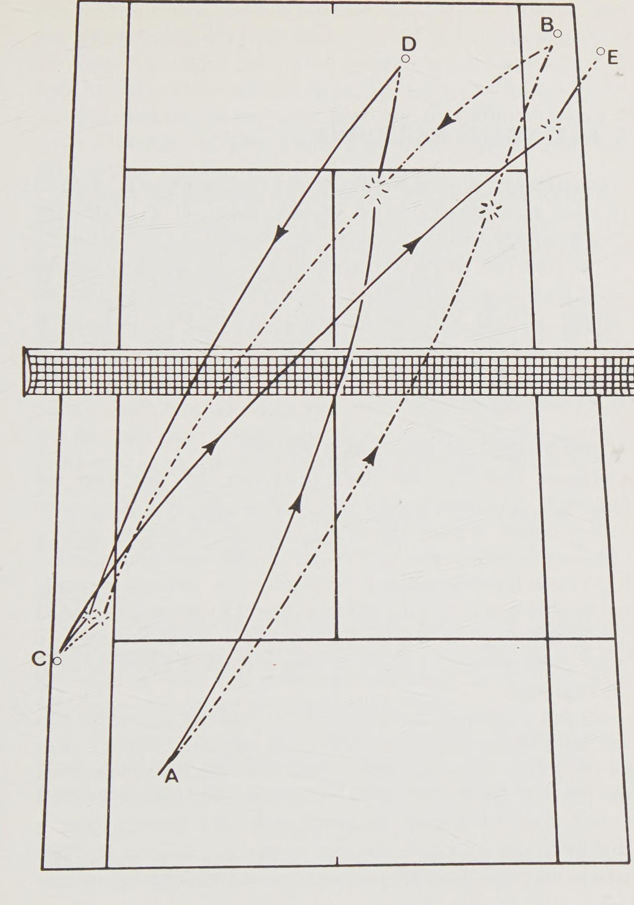
Lối chơi Lên lưới—Những Cú trả bóng Kỳ dị ©
5. LỐI CHƠI LÊN LƯỚI—NHẬN GIAO BÓNG
GIỐNG NHƯ KHI GIAO BÓNG, lối chơi Lên lưới của một cặp nhận bóng dựa trên việc tạo thành một rào chắn lưới không thể xuyên phá. Một lần nữa, tất cả các tình huống được thảo luận đều giả định rằng các cú trả giao bóng của bạn cần sự hỗ trợ về chiến thuật của đội hình Lối chơi Lên lưới để giành chiến thắng chắc chắn trước các cặp đấu kém hơn hoặc để giữ thế cân bằng khi đối đầu với đối thủ ngang tầm. Chương trước đã cho thấy rằng cặp giao bóng có thể triển khai thế trận mạnh mẽ. Một điểm tương đồng khác với giao bóng là bạn bắt đầu với một người đứng ở lưới, người còn lại định gia nhập cùng anh ta tại cơ hội đầu tiên.
CHỐNG LẠI CÁC CẶP MỘT TRÊN MỘT DƯỚI Đối với các cặp Một trên Một dưới, bạn tìm kiếm cơ hội tiếp cận lưới ngay từ cú đánh đầu tiên bạn thực hiện, chính là cú trả giao bóng. Nếu cú giao bóng của đối thủ cho phép bạn thực hiện một cú trả bóng thoải mái, bạn sẽ theo cú đánh này tiến lên và tạo rào chắn của mình.
Nếu cú giao bóng đủ tốt để khiến bạn mất thăng bằng, thông thường bạn sẽ không thể lấy lại thăng bằng kịp thời để tiến đến một vị trí lưới tốt, và do đó bạn nên đứng lùi lại và chờ đợi một cơ hội tốt hơn. Cơ hội đó sẽ không lâu trong khi tới, có lẽ là từ cú đánh tiếp theo.
Trong vấn đề kết hợp giữa thăng bằng và tiếp cận lưới này, bạn sẽ có nhiều cơ hội thực hiện một cú tiếp cận từ cú trả giao bóng nếu bạn đứng sau cú giao bóng thay vì đón bóng trên đà bay lên nhưng lại bị mất thăng bằng. Từ một sự kết hợp giữa bóng hơi rơi cộng với sự thăng bằng cộng với một khoảng cách tiếp cận lưới hơi dài hơn, bạn mất ít thời gian hơn để chiếm vị trí lưới tốt hơn là từ một sự kết hợp của bóng bay lên, mất thăng bằng, lấy lại thăng bằng, và khoảng cách tiếp cận ngắn hơn. Chính việc lấy lại thăng bằng là điều tốn thời gian. Bạn ở trạng thái thăng bằng bất cứ khi nào bạn đứng sau quả bóng và có thể đánh bóng rồi tiến lên trong cùng một chuyển động. Đó là một khía cạnh của điều mà các huấn luyện viên muốn nói khi họ bảo rằng sau khi đạt đến một trình độ chơi nhất định, bạn nên nghĩ về đôi chân của mình hơn là về cây vợt.
垂-dù sao đi nữa, người giao bóng vẫn đứng lùi lại. Tại sao phải mạo hiểm với những cú đánh bóng bay lên để rồi bị bắt bài do mất thăng bằng hoặc đánh hỏng chỉ để giành lấy lợi thế là một hoặc hai giây thời gian? Đó không phải là cách để giành chiến thắng chắc chắn trước một cặp đấu kém hơn.
Điều thiết yếu là phải tránh người đứng lưới—điều cơ bản, nhưng thiết yếu.
Bạn không thể tạo rào chắn lưới nếu anh ta chặn được bóng. Thay vào đó, bạn sẽ quay lại vạch xuất phát, hoặc đúng hơn là quay lại Hình 2 ở trang 10. Hoặc hãy nhìn theo cách này: mục đích tức thời của Lối chơi Lên lưới là vô-lê trước khi đối thủ làm vậy; vì người giao bóng không tiến lên, chỉ người đứng lưới mới có thể ngăn cản điều này—vì vậy hãy tránh anh ta.* Cho đến khi anh ta cho thấy mình chỉ là một người đứng lưới thụ động, an toàn hơn là giả định rằng anh ta có thể chặn bóng.
Với tâm thế này, các chiến thuật chống lại các cặp giao bóng Một trên Một dưới được gợi ý dưới đây:
Ô bên Phải-Đó là một chiến thuật tốt hơn khi tạo rào chắn lưới chống lại cú thuận tay của người giao bóng hơn là cố gắng tấn công trái tay của anh ta và chấp nhận bất kỳ rủi ro nào về việc cú trả bóng bị người đứng lưới chặn.
Đương nhiên, cú trả bóng càng sâu thì càng tốt.
- Nếu người giao bóng cho thấy anh ta có cú drive thuận tay đặc biệt mạnh thường có thể đánh bại rào chắn lưới của bạn, bạn phải tìm trái tay của anh ta. Ưu tiên hàng đầu của bạn nên là một cú lốp bóng qua đầu người đứng lưới người đứng lưới. Với tư cách là một cặp Một trên Một dưới, anh ta sẽ quan tâm đến việc chặn bóng hơn là bao quát các cú lốp. Theo quan điểm của anh ta, đối tác của anh ta sẽ lo liệu các cú lốp.
- Nếu người giao bóng thuận tay trái, bạn tránh người đứng lưới và đồng thời đánh vào trái tay của người giao bóng. Bất kể người giao bóng thuận tay phải hay trái, khi bạn drive bóng về phía anh ta, đối tác đứng lưới của bạn phải chuẩn bị cho một cú lốp hụt qua phía trái tay của mình.
Xem Hình 30.
Ô bên Trái-Ở đây thường đơn giản hơn. Người đứng lưới ít có xu hướng chặn bóng ở phía trái tay của anh ta và những cú trả bóng thông thường của bạn né tránh anh ta và đồng thời hướng về trái tay của người giao bóng.
Cú trái tay của anh ta sẽ cần phải hơn là một cú đánh ổn định tốt trước khi nó có thể gây khó khăn cho rào chắn lưới của bạn.
- Nếu người giao bóng thuận tay trái và có cú thuận tay mạnh, một lần nữa, tốt hơn là lốp bóng thay vì mạo hiểm để người đứng lưới chặn cú trả bóng trung tâm định hướng vào trái tay của người giao bóng. Đừng lốp dọc theo đường biên, tạo cơ hội cho người đứng lưới đập bóng. Lốp dọc theo trung tâm, giữa trái tay của cả hai cầu thủ.
Xem Hình 31.
Tóm tắt—Chống lại Một trên Một dưới-Hãy coi việc nhận bóng không phải là phòng ngự chống lại cú giao bóng, mà là phản công. Bạn sẽ là cặp đầu tiên tạo ra rào chắn lưới đầu tiên. Bạn sẽ là người đầu tiên vô-lê.
- Phải tránh người đứng lưới đối phương. Không làm vậy là một tội ác trong tennis Lối chơi Lên lưới, giống như giao lỗi kép cho đối thủ có cú trả giao bóng yếu hơn. Khi cố gắng tấn công dọc theo trung tâm, hãy đảm bảo người đứng lưới không thể chặn được.
- Những cú drive hoặc cắt chéo sân và các cú lốp là những cú trả bóng cơ bản của bạn.
Những cú drive và cắt này nên sâu nhất có thể, miễn là tránh được người đứng lưới. Cú lốp nên được xác định rõ ràng trong tâm trí, thay vì chỉ là một phương án dự phòng ngần ngại.
- Hãy đứng sau quả bóng với mục đích và bước chân nhanh nhẹn, để //bạn có thể thực hiện các cú trả giao bóng như những cú tiếp cận, bất cứ khi nào có thể.
- Độ sâu cho bạn nhiều thời gian hơn để chiếm vị trí lưới tốt, và cũng làm giảm hiệu quả cú đáp trả của người giao bóng.
Chơi theo cách này sẽ cho phép bạn chắc chắn đánh bại các cặp kém hơn. Trong hầu hết các trường hợp, một cặp chơi Một trên Một dưới chống lại những người nhận Lối chơi Lên lưới là một cặp kém hơn. Có thể họ bao gồm hai cầu thủ, mỗi người đều có thể đánh bại bạn và đối tác của bạn trong đánh đơn nhờ sự ổn định cực độ ở cuối sân với các cú slice thuận tay và trái tay. Trong đánh đôi, những cú slice này sẽ không xuyên thủng được một rào chắn lưới, và nếu bạn và đối tác của mình cũng có thể bao quát các cú lốp bạn sẽ có khả năng thắng. Mọi người sẽ gọi đó là một bất ngờ, nhưng thực ra không phải vậy.
CHỐNG LẠI NHỮNG NGƯỜI GIAO BÓNG LỐI CHƠI LÊN LƯỚI Hãy tự tin lên. Không phải tất cả các cặp giao bóng Lối chơi Lên lưới đều biết các chiến thuật chi tiết trong chương trước. Nếu họ không biết, chắc chắn sẽ có những lỗ hổng trong lối chơi của họ. Hãy bắt đầu bằng cách đối đầu với một cặp mà ý tưởng duy nhất về đánh đôi Lối chơi Lên lưới là người giao bóng chạy lên và vô-lê.
Trước hết, người đứng lưới gần như chắc chắn không nhận thức được vai trò then chốt của mình trong việc bảo vệ chống lại các cú lốp. Hầu hết người nhận đều drive bóng trở lại, anh ta nhận thấy điều đó, và cho đến nay anh ta không gặp nhiều khó khăn người giao bóng giao bóng đặc biệt tốt, thực chất chính người đứng lưới mới là người đe dọa ngăn cản bạn tạo rào chắn lưới. Việc không tránh anh ta bằng cú trả giao bóng là một tội ác trong Lối chơi Lên lưới. Vì vậy, hãy tạo rào chắn lưới bằng cách trả bóng hướng về đường biên của người giao bóng, AB, và tiến lên, hoặc bằng cách lốp bóng cao qua đầu người đứng lưới, AC, và tiến lên. Đừng mạo hiểm đánh một cú trung tâm, AD, để tấn công trái tay của người giao bóng cho đến khi bạn chắc chắn người đứng lưới là kiểu thụ động thay vì chủ động tham gia.
Bất cứ khi nào bạn đánh AB, đối tác đứng lưới của bạn phải cảnh giác với một cú lốp như BE.
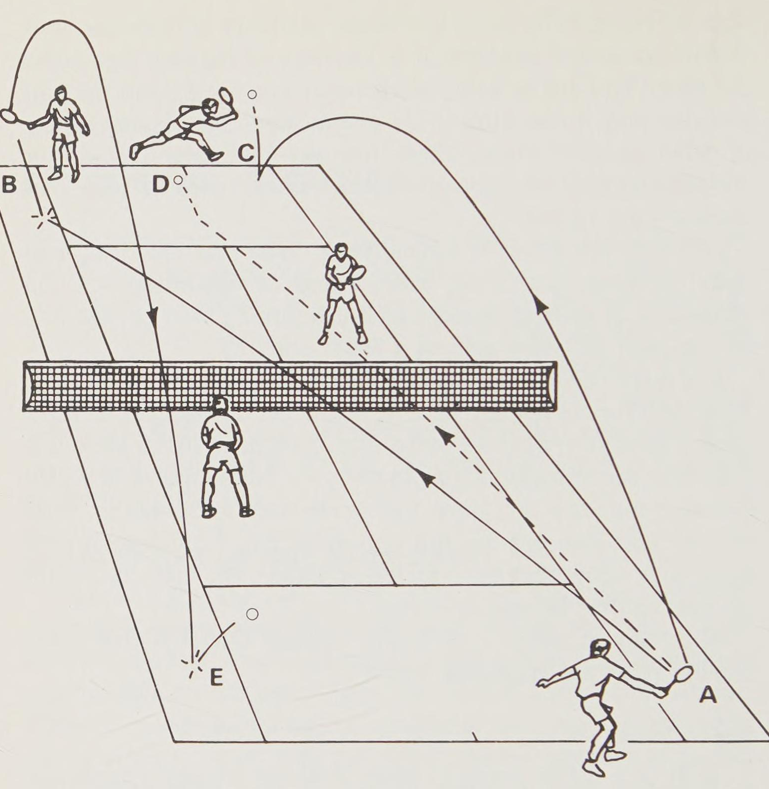
Người đứng lưới. Với tư cách là một cặp Một trên Một dưới, anh ta sẽ quan tâm đến việc chặn bóng hơn là bao quát các cú lốp. Theo quan điểm của anh ta, đối tác của anh ta sẽ lo liệu các cú lốp.
- Nếu người giao bóng thuận tay trái, bạn tránh người đứng lưới và đồng thời đánh vào trái tay của người giao bóng. Bất kể người giao bóng thuận tay phải hay trái, khi bạn drive bóng về phía anh ta, đối tác đứng lưới của bạn phải chuẩn bị cho một cú lốp hụt qua phía trái tay của mình.
Xem Hình 30.
Ô bên Trái-Ở đây thường đơn giản hơn. Người đứng lưới ít có xu hướng chặn bóng ở phía trái tay của anh ta và những cú trả bóng thông thường của bạn né tránh anh ta và đồng thời hướng về trái tay của người giao bóng.
Cú trái tay của anh ta sẽ cần phải hơn là một cú đánh ổn định tốt trước khi nó có thể gây khó khăn cho rào chắn lưới của bạn.
- Nếu người giao bóng thuận tay trái và có cú thuận tay mạnh, một lần nữa, tốt hơn là lốp bóng thay vì mạo hiểm để người đứng lưới chặn cú trả bóng trung tâm định hướng vào trái tay của người giao bóng. Đừng lốp dọc theo đường biên, tạo cơ hội cho người đứng lưới đập bóng. Lốp dọc theo trung tâm, giữa trái tay của cả hai cầu thủ.
Xem Hình 31.
Tóm tắt—Chống lại Một trên Một dưới-Hãy coi việc nhận bóng không phải là phòng ngự chống lại cú giao bóng, mà là phản công. Bạn sẽ là cặp đầu tiên tạo ra rào chắn lưới đầu tiên. Bạn sẽ là người đầu tiên vô-lê.
- Phải tránh người đứng lưới đối phương. Không làm vậy là một tội ác trong tennis Lối chơi Lên lưới, giống như giao lỗi kép cho đối thủ có cú trả giao bóng yếu hơn. Khi cố gắng tấn công dọc theo trung tâm, hãy đảm bảo người đứng lưới không thể chặn được.
- Những cú drive hoặc cắt chéo sân và các cú lốp là những cú trả bóng cơ bản của bạn.
Những cú drive và cắt này nên sâu nhất có thể, miễn là tránh được người đứng lưới. Cú lốp nên được xác định rõ ràng trong tâm trí, thay vì chỉ là một phương án dự phòng ngần ngại.
- Hãy đứng sau quả bóng với mục đích và bước chân nhanh nhẹn, để //bạn có thể thực hiện các cú trả giao bóng như những cú tiếp cận, bất cứ khi nào có thể.
- Độ sâu cho bạn nhiều thời gian hơn để chiếm vị trí lưới tốt, và cũng làm giảm hiệu quả cú đáp trả của người giao bóng.
Chơi theo cách này sẽ cho phép bạn chắc chắn đánh bại các cặp kém hơn. Trong hầu hết các trường hợp, một cặp chơi Một trên Một dưới chống lại những người nhận Lối chơi Lên lưới là một cặp kém hơn. Có thể họ bao gồm hai cầu thủ, mỗi người đều có thể đánh bại bạn và đối tác của bạn trong đánh đơn nhờ sự ổn định cực độ ở cuối sân với các cú slice thuận tay và trái tay. Trong đánh đôi, những cú slice này sẽ không xuyên thủng được một rào chắn lưới, và nếu bạn và đối tác của mình cũng có thể bao quát các cú lốp bạn sẽ có khả năng thắng. Mọi người sẽ gọi đó là một bất ngờ, nhưng thực ra không phải vậy.
CHỐNG LẠI NHỮNG NGƯỜI GIAO BÓNG LỐI CHƠI LÊN LƯỚI Hãy tự tin lên. Không phải tất cả các cặp giao bóng Lối chơi Lên lưới đều biết các chiến thuật chi tiết trong chương trước. Nếu họ không biết, chắc chắn sẽ có những lỗ hổng trong lối chơi của họ. Hãy bắt đầu bằng cách đối đầu với một cặp mà ý tưởng duy nhất về đánh đôi Lối chơi Lên lưới là người giao bóng chạy lên và vô-lê.
Trước hết, người đứng lưới gần như chắc chắn không nhận thức được vai trò then chốt của mình trong việc bảo vệ chống lại các cú lốp. Hầu hết người nhận đều drive bóng trở lại, anh ta nhận thấy điều đó, và cho đến nay anh ta không gặp nhiều khó khăn chống lại bất cứ ai cố gắng lốp một quả bóng lẻ tẻ qua đầu anh ta. Một vài quả đã vượt qua đầu anh ta, nhưng đối tác của anh ta đã băng qua và bao quát chúng—thậm chí đôi khi đánh thắng điểm.
Bạn có thể tự hỏi tại sao lại như vậy, nhưng lời giải thích rất đơn giản. Hầu hết mọi người đều drive bóng trở lại. Những người đứng lưới không gặp nhiều khó khăn với các cú lốp vì hầu hết các cú lốp đều yếu.
Một người nhận thử lốp một quả, thấy nó nảy lên một cách nhục nhã và tự nói với mình, “Không lốp nữa,” và quyết định đánh những cú drive mạnh hơn. Đó là bản tính con người. Bất kỳ ai cũng thích chơi mạnh mẽ, chấp nhận chiến đấu đến cùng nếu cần thiết. Còn những cú lốp mà đối tác của người đứng lưới băng qua và đập bóng, những cú đó sẽ đến từ ô bên trái. Chống lại một cú giao bóng mạnh vào trái tay, người nhận ô bên trái đôi khi bị buộc phải lốp vội vàng vượt qua phía trái tay người đứng lưới, nhưng lại dễ dàng bị xử lý bởi người giao bóng, người chỉ cần di chuyển một chút là có thể thực hiện cú đập thuận tay. Hãy đối chiếu cú lốp đó với cú lốp trong Hình 31, được cố tình đánh dọc theo trung tâm giữa hai trái tay. Tóm lại, người đứng lưới và đối tác của anh ta, nếu họ là hai người cùng một kiểu, vẫn chưa từng gặp phải những cú lốp có tính toán và mạnh mẽ, đặc biệt là từ ô bên phải và vượt xa phía trái tay của người đứng lưới.
And the net man shows you all this before the first ball is served by the position he takes up at the net. He stands too close, showing you that you can get over his head. He doesn’t crowd over into the corner between the net and singles sideline like a totally unaware One Up One Back net man and some of the modest female players. He stands well towards the center, either for aggressive interception or at least to protect as much of the court as possible for his incoming partner. For you, that makes it all the easier to lob over his backhand side.
Buổi khởi động đã kết thúc và bạn đã sẵn sàng nhận quả bóng đầu tiên của ván. Người giao bóng đang tung bóng, chuẩn bị cho một cú giao nhanh và tiến lên nhanh chóng. Người đứng lưới đang đứng trên những ngón chân, gấp nhẹ đầu gối. Họ đã sẵn sàng tấn công bạn. Một cú giao bóng khá nhanh ập đến, nhưng không quá sâu cũng không nằm dọc trung tâm; đó là loại bóng thông thường được giao ở đầu trận đấu. Người giao bóng tiến lên, và người đứng lưới đã sẵn sàng, và họ đều chuẩn bị vô-lê mạnh mẽ. Nhưng bạn thực hiện một cú lốp thuận tay mạnh mẽ qua trái tay của người đứng lưới. Xem Hình 32.
Ngay lập tức, đội hình Lối chơi Lên lưới của họ bị phá vỡ. Người đứng lưới vừa có xu hướng bao quát trung tâm nhiều hơn một chút ngay trước khi bạn đánh bóng, và giờ anh ta bị mất thăng bằng và không thể hồi phục kịp thời để đuổi theo cú đánh đã vượt qua mình. Người giao bóng, đứng xa hơn, phải thực hiện điều đó. Anh ta cũng sẽ không chạm bóng khi nó còn trên không và sẽ phải lùi hẳn ra sau để cứu cú lốp nảy trên phía trái tay của mình. Bạn tiến lên và bạn cùng đối tác chiếm được rào chắn lưới mà đối thủ định tạo ra.
Kéo dài pha đánh bền này thêm một cú nữa, người giao bóng đang cứu bóng chỉ có thể lốp bóng. Anh chàng không may này sẽ không tìm thấy trái tay của bất kỳ ai.
Từ góc đó, nếu cú lốp của anh ta đi qua trái tay đối tác ô bên trái của bạn, nó cũng sẽ đi ra ngoài đường biên. Nếu nó hướng về phía trái tay của bạn, nó trở thành một cú đập thuận tay cho đối tác của bạn. Bạn có thể không thắng pha đánh bền bằng cú đập đầu tiên, nhưng tỉ số sẽ trở thành 0-15. Thật là một sự khác biệt lớn giữa cú lốp tấn công của bạn và cú lốp phòng ngự của người giao bóng. Đó là một sự khác biệt về chiến thuật. Vậy mà nhiều cầu thủ nghĩ rằng sự khác biệt lớn nhất giữa một cú lốp tấn công và phòng ngự là một cú thấp và cú kia cao.
Giả sử bây giờ những chiến binh hạnh phúc của chúng ta tự nhủ, “Thế là hết chuyện cú lốp chết tiệt đó, giờ hãy quay lại với trận đấu,” vì vậy người đứng lưới lại đứng sát lưới một lần nữa—và bạn lại làm điều tương tự.
Giả sử, thay vào đó, người đứng lưới nói với đối tác rằng anh ta sẽ bao quát cú lốp tiếp theo, nhưng anh ta lại đứng sát lưới một lần nữa—vì vậy bạn thực hiện cú lốp của mình một lần nữa. Lần này anh ta sẽ đuổi theo thay vì đối tác của anh ta, nhưng không có sự khác biệt hiệu quả nào.
Bao quát một cú lốp nghĩa là bao quát nó khi bóng còn trên không và giữ được rào chắn lưới của phe mình. Rất ít cầu thủ có thể đứng sát lưới và bao quát một cú lốp phía trái tay ngay khi bóng còn trên không.
Sau hai trải nghiệm, người đứng lưới sẽ phải quyết tâm ngăn chặn bạn lốp bóng qua đầu, hoặc chấp nhận thua cuộc. Anh ta sẽ đứng lùi xa hơn và anh ta sẽ không còn tập trung vào trung tâm nữa.
Người giao bóng đóng góp phần mình trong việc giữ vững thế trận bằng cách tránh những cú giao thuận tay hỗ trợ bạn lốp bóng sang trái tay đối tác của anh ta, và vì vậy lần này anh ta giao bóng dọc trung tâm.
Nhưng đến lúc này, anh ta đã bị ám ảnh bởi những cú lốp và vì vậy không còn tiến lên với sự hăng hái như trước. Hãy nhìn vị trí của họ bây giờ, trong Hình 33.
Thêm một chút về việc Lốp bóng Thỉnh thoảng bạn nghe nói về một cặp bị đánh bại bởi những cú lốp liên tục, hoặc cho thấy sự yếu kém trước các cú lốp, và có lẽ bạn hiểu điều đó là do cặp thua đã đánh hỏng tất cả các cú đập. Bạn có thể thấy bây giờ, từ ví dụ về cặp đôi mạnh mẽ nhưng chưa có kinh nghiệm ở trên, rằng việc lốp bóng tấn công theo chiến thuật và không phải là những cú đập hỏng có lẽ chính là mấu chốt.
Tuy nhiên, bạn vẫn có những nghi ngờ. Tất cả nghe có vẻ ổn, nhưng kinh nghiệm của chính bạn là các cú lốp là những cú đánh nguy hiểm vì nếu chúng sai, chúng sẽ bị đập tan tành, và bạn, chẳng hạn, không muốn liên quan gì đến lối chơi yếu ớt.
Được rồi, nhưng để ngăn bạn trở thành một cầu thủ chỉ lốp bóng phòng ngự và không có bất kỳ cú lốp chiến thuật hay tấn công nào như một vũ khí dự phòng, hãy chỉ thảo luận về cú lốp thuận tay như một cú trả giao bóng từ ô bên phải.
Đừng coi đó là một cú đánh tinh tế nữa (“Ai đó đã rất tinh tế với những cú lốp của mình,” bạn đã đọc), mà thay vào đó hãy coi nó là một cú đánh mạnh mẽ, vượt qua và vượt ra sau người đứng lưới, và là một trong những cú trả giao bóng tấn công của bạn.
Khi đó, bạn sẽ không lập tức từ bỏ nó sau một lần thất bại //giống như bạn sẽ không từ bỏ cú drive hoặc trả bóng cắt khi bạn đánh hỏng một quả. Chuyển từ so sánh cú đánh sang chiến thuật, bạn sẽ không từ bỏ vị trí lưới và ngừng hiện lên lưới chỉ vì bạn đánh hỏng một hoặc hai cú vô-lê, vì vậy bạn không nên từ bỏ cú đánh mạnh mẽ vượt qua và vượt ra sau người đứng lưới _nếu một hoặc hai quả bị hỏng.
Bạn vẫn nghi ngờ. Một cú lốp ngắn bị đập thành một cú thắng điểm vang dội trong một điểm quan trọng, trông thật khủng khiếp. Bạn thà “tự giải quyết rắc rối của mình”.
Chà, nhiều cầu thủ giỏi “tự giải quyết rắc rối của mình”.
Họ từ chối bị buộc phải đánh một cú lốp yếu cho đối phương đập bóng và thà mạo hiểm bằng cách đánh thật mạnh một quả bóng khó.
Họ không làm điều này một cách hoang dã với ít hy vọng thành công; họ đánh bóng bao quanh và uốn cong nó với một loại xoáy lên bao phủ để có kiểm soát tối đa có thể. Không có nhiều thời gian để nhắm mục tiêu ngoài hướng chung, nhưng bất kể cú đánh đó đi đâu, nó sẽ không bao giờ mềm yếu.
Điều tuyệt vời, nhưng điều đó không có nghĩa là những người có tư duy tấn công này không bao giờ chơi những cú lốp tấn công. Họ chọn những quả bóng dễ hơn để thực hiện.
Để không từ bỏ cú lốp thuận tay ô bên phải vì một thất bại ở một điểm quan trọng, hãy xem kịch bản từ thảm họa thành chiến thắng này: Ván quyết định, 4-tất cả, 30-tất cả.
Bạn thực hiện cú đánh vượt qua người đứng lưới, nhưng bạn không quan sát bóng kỹ, có lẽ vì anh ta bắt đầu di chuyển. Bạn không đánh trúng trung tâm mặt lưới, cú lốp bị ngắn, anh ta đập mạnh, đồng đội rên rỉ, đối tác mím môi. Đối tác đưa tỉ số phía trái tay overhead của mình và người giao bóng vẫn chưa tiến đến vạch giao bóng.
Thay vì có một rào chắn lưới chống lại bạn, trung tâm đang mở toang như cửa chuồng gia súc. Trong tình huống này, thật đáng tiếc nếu bạn không phải là một trong những người thuận tay trái với một cú thuận tay xoáy lên mạnh mẽ, tung ra một cú đánh vào cú nửa-vô-lê hụt của người giao bóng đang do dự. Dù sao, hãy đánh trái tay của bạn vào khu vực này và tiến lên. Với bất kỳ ai cố gắng lốp một quả bóng lẻ tẻ qua đầu anh ta. Một vài cú đã vượt qua đầu anh ta, nhưng đối tác của anh ta đã băng qua và bao quát chúng—thậm chí đôi khi ghi điểm thắng.
Bạn có thể thắc mắc tại sao lại như vậy, nhưng những lời giải thích là đơn giản. Hầu hết mọi người đều drive bóng trả lại. Những người đứng lưới không-gặp nhiều rắc rối với các cú lốp vì hầu hết các cú lốp đều yếu.
Một người nhận thử một cú, thấy nó nảy lên một cách nhục nhã và tự nói với mình, “Không lốp nữa,” và quyết định đánh những cú drive mạnh hơn.
Đó là bản chất con người. Bất kỳ ai cũng thích chơi mạnh mẽ, chấp nhận chiến đấu nếu cần thiết. Còn về những cú lốp mà đối tác của người đứng lưới đã băng qua và đập, những cú đó đến từ ô bên trái. Chống lại một cú giao bóng tốt vào trái tay, người nhận ở ô bên trái đôi khi bị buộc phải lốp vội vã qua phía trái tay của người đứng lưới, nhưng cú lốp đó dễ dàng bị xử lý bởi người giao bóng, người chỉ cần di chuyển một chút để có thể thực hiện một cú đập thuận tay. Hãy đối chiếu cú lốp đó với cú lốp hiển thị trong Hình 31, được chủ định đánh sâu vào trung tâm giữa hai trái tay. Tóm lại, người đứng lưới và đối tác của anh ta, nếu họ cùng một kiểu, vẫn chưa từng gặp những cú lốp có tính toán và mạnh mẽ, đặc biệt là từ ô bên phải và vượt cao qua phía trái tay của người đứng lưới.
Và người đứng lưới cho bạn thấy tất cả điều này trước khi quả bóng đầu tiên được giao bởi vị trí anh ta chiếm ở lưới. Anh ta đứng quá gần, cho bạn thấy rằng bạn có thể lốp bóng qua đầu anh ta. Anh ta không lấn sâu vào góc giữa lưới và đường biên đơn như một người đứng lưới Một trên Một dưới hoàn toàn không biết gì và một số cầu thủ nữ khiêm tốn. Anh ta đứng thiên về trung tâm, hoặc để chặn bóng quyết liệt hoặc ít nhất là để bảo vệ nhiều nhất có thể cho đối tác đang tiến vào của mình. Đối với bạn, điều đó khiến việc lốp bóng qua trái tay anh ta trở nên dễ dàng hơn.
Buổi khởi động đã kết thúc và bạn đã sẵn sàng nhận quả bóng đầu tiên của ván. Người giao bóng đang tâng bóng, chuẩn bị cho một cú giao nhanh và tiến lên nhanh chóng. Người đứng lưới đang đứng trên mũi chân, hơi khuỵu gối. Họ đã sẵn sàng tấn công bạn. Một cú giao bóng khá nhanh đi tới, nhưng không quá sâu cũng không nằm dọc theo trung tâm; đó là loại bóng thường thấy ở đầu trận đấu. Người giao bóng tiến lên, và người đứng lưới đã sẵn sàng, và họ đều sẵn sàng vô-lê mạnh mẽ. Nhưng bạn thực hiện một cú lốp thuận tay mạnh mẽ qua trái tay người đứng lưới. Xem Hình 32.
Ngay lập tức đội hình Lối chơi Lên lưới của họ bị tan rã. Người đứng lưới vừa mới có xu hướng bao quát trung tâm một chút trước khi bạn đánh bóng, và giờ anh ta mất thăng bằng và không thể hồi phục kịp thời để đuổi theo một cú đánh đã vượt qua mình. Người giao bóng, ở vị trí lùi hơn, phải là người xử lý. Anh ta cũng sẽ không thể chạm bóng ngay trên không và sẽ phải lùi hẳn ra sau và cứu một cú lốp nảy ở phía trái tay của mình. Bạn tiến lên và bạn cùng đối tác của mình chiếm được rào chắn lưới mà đối thủ định thiết lập.
Kéo dài pha bóng này thêm một cú nữa, người giao bóng đang cứu bóng chỉ có thể lốp bóng trở lại. Anh chàng tội nghiệp, anh ta sẽ không tìm thấy trái tay của bất kỳ ai.
Từ góc đó nếu cú lốp của anh ta đi qua trái tay của đối tác ô bên trái của bạn, nó cũng sẽ bay ra ngoài đường biên. Nếu nó hướng về phía trái tay của bạn, nó trở thành một cú đập thuận tay cho đối tác của bạn. Bạn có thể không thắng pha bóng bằng cú đập đầu tiên, nhưng tỉ số sẽ trở thành 0-15. Thật là một sự khác biệt lớn giữa cú lốp tấn công của bạn và cú lốp phòng ngự của người giao bóng. Đó là một sự khác biệt về chiến thuật. Tuy nhiên, nhiều cầu thủ nghĩ rằng sự khác biệt lớn nhất giữa cú lốp tấn công và phòng ngự là một cú thấp và một cú cao.
Giả sử bây giờ những chiến binh hạnh phúc của chúng ta tự nhủ, “Thế là hết cái trò lốp bóng chết tiệt đó và giờ hãy quay lại với trận đấu,” vì vậy người đứng lưới lại đứng sát lưới một lần nữa—và bạn làm điều tương tự.
Giả sử, thay vào đó, người đứng lưới bảo đối tác rằng anh ta sẽ bao quát cú lốp tiếp theo, nhưng anh ta vẫn đứng sát lưới—vì vậy bạn thực hiện cú lốp một lần nữa. Lần này anh ta sẽ đuổi theo thay vì đối tác của anh ta, nhưng không có sự khác biệt hiệu quả nào.
Bao quát một cú lốp trên không và giữ lại rào chắn lưới của phía mình. Ít cầu thủ có thể đứng sát lưới và bao quát một cú lốp phía trái tay ngay trên không. Sau hai trải nghiệm, người đứng lưới sẽ phải quyết tâm ngăn bạn lốp bóng qua đầu anh ta, hoặc là thua cuộc. Anh ta sẽ đứng lùi lại và không còn tập trung vào trung tâm nữa.
Người giao bóng đóng góp vào việc giữ thành trì bằng cách tránh những cú giao thuận tay hỗ trợ bạn trong việc lốp bóng về phía trái tay đối tác của anh ta, và vì vậy lần này anh ta giao bóng dọc trung tâm.
Nhưng đến lúc này, anh ta đã bị ám ảnh bởi những cú lốp và vì vậy không còn tiến lên với sự hăng hái như trước. Hãy nhìn vị trí của họ bây giờ, trong Hình 33.
Một chút nữa về việc Lốp bóng Thỉnh thoảng bạn nghe nói về một cặp bị phá vỡ bởi việc bị lốp bóng liên tục, hoặc cho thấy sự dễ bị tổn thương trước các cú lốp, và có lẽ bạn cho rằng điều đó có nghĩa là cặp thua cuộc đã hỏng hết các cú đập. Bạn có thể thấy bây giờ, từ ví dụ về cặp đôi hăng hái nhưng chưa từng trải trên, rằng chính việc lốp bóng tấn công chiến thuật và không phải là những cú đập bị hỏng đã giải quyết vấn đề.
Tuy nhiên, bạn vẫn có những nghi ngờ. Nghe thì có vẻ ổn, nhưng kinh nghiệm của chính bạn là những cú lốp là những cú đánh nguy hiểm vì nếu chúng hỏng, chúng sẽ bị tiêu diệt, và bạn, chẳng hạn, không muốn dính dáng gì đến lối chơi yếu ớt.
Được rồi, nhưng để ngăn bạn trở thành một cầu thủ chỉ lốp bóng phòng ngự và không có bất kỳ cú lốp chiến thuật hay tấn công nào như một vũ khí bổ sung, hãy thảo luận chỉ về cú lốp thuận tay như một cú trả giao bóng từ ô bên phải.
Đừng coi nó là một cú đánh tinh tế (touch shot) nữa (“‘Anh X rất tinh tế với các cú lốp của mình,’ bạn đã đọc), mà thay vào đó hãy nhìn nhận nó như một cú đánh mạnh mẽ, vượt qua và băng qua người đứng lưới, và là một trong những cú trả giao bóng tấn công của bạn.
Khi đó, bạn sẽ không lập tức từ bỏ nó sau một lần thất bại //giống như bạn sẽ không từ bỏ cú drive hoặc trả bóng cắt khi bạn đánh hỏng một quả. Chuyển từ so sánh cú đánh sang chiến thuật, bạn sẽ không từ bỏ vị trí lưới và ngừng tiến lên lưới chỉ vì bạn bỏ lỡ một hoặc hai cú vô-lê, vì vậy bạn không nên từ bỏ cú đánh mạnh mẽ vượt qua và băng qua người đứng lưới ngay cả khi một hoặc hai quả bị hỏng. Chân, hơi chùng đầu gối. Họ đã sẵn sàng tấn công bạn. Một cú giao bóng khá nhanh bay qua, nhưng không quá sâu cũng không nhắm dọc đường trung tâm; đó là kiểu giao bóng thông thường vào đầu trận đấu. Người giao bóng tràn lên, người đứng lưới trong tư thế sẵn sàng, và cả hai đã chuẩn bị để bắt volley uy lực. Nhưng bạn tung ra một cú lốp thuận tay đầy sức mạnh qua bên trái tay của người đứng lưới. Xem Hình 32.
Ngay lập tức, đội hình Lối chơi Lưới của họ bị phá vỡ. Người đứng lưới đang có xu hướng bao quát thêm khu vực trung tâm ngay trước khi bạn chạm bóng, và hiện tại anh ta bị mất thăng bằng, không thể hồi phục kịp để đuổi theo quả bóng đã vượt qua tầm kiểm soát. Người giao bóng, ở xa hơn phía sau, buộc phải làm điều đó. Anh ta cũng không thể đón bóng trên không và sẽ phải lùi sâu về cuối sân để cứu một quả lốp đã nảy ở phía trái tay của mình. Bạn tiến lên và bạn cùng đồng đội của mình đã làm chủ bức tường lưới mà đối thủ giao bóng dự định chiếm lĩnh.
Đưa loạt bóng này đi xa thêm một cú đánh, người giao bóng đang trong thế cứu bóng hầu như chẳng thể làm gì khác ngoài việc lốp bóng trả lại. Kẻ kém may mắn này sẽ không thể tìm thấy quả trái tay của ai cả. Từ góc đánh đó, nếu quả lốp của anh ta bay qua phía trái tay của người đồng đội đứng ô bên trái của bạn, nó cũng sẽ bay ra ngoài đường biên dọc. Nếu bóng bay về phía trái tay của bạn, nó sẽ trở thành một cú smash thuận tay hoàn hảo cho đồng đội bạn. Bạn có thể chưa thắng điểm ngay với cú smash đầu tiên, nhưng tỷ số sẽ trở thành 0-15. Thật là một sự khác biệt lớn giữa cú lốp tấn công của bạn và cú lốp phòng thủ của người giao bóng. Đó chính là sự khác biệt mang tính chiến thuật. Ấy thế mà nhiều người chơi vẫn lầm tưởng rằng điểm khác biệt lớn nhất giữa một cú lốp tấn công và phòng thủ chỉ là một cú bay thấp và một cú bay cao.
Bây giờ giả sử những chiến binh nhiệt huyết của chúng ta tự nhủ: "Cú lốp chết tiệt thế là xong rồi, giờ hãy tập trung vào trận đấu thôi," và người đứng lưới lại áp sát lưới như trước—và bạn lại thực hiện đúng cú đánh đó.
Giả sử thay vào đó, người đứng lưới bảo đồng đội rằng anh ta sẽ bao quát cú lốp tiếp theo, nhưng anh ta lại đứng quá sát lưới—thế là bạn tung cú lốp một lần nữa. Lần này anh ta sẽ đuổi theo thay vì người đồng đội, nhưng chẳng mang lại khác biệt thực chất nào. Bao quát một cú lốp nghĩa là phải chặn được nó trên không (e) NAY,
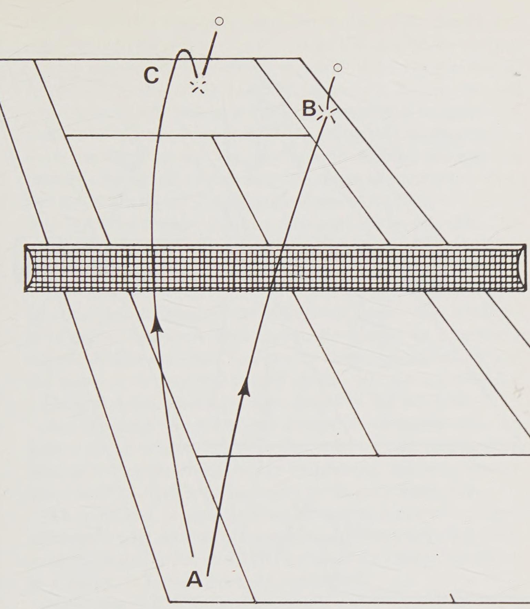
Trên không (on the full) và giữ vững bức tường lưới của bên bạn. Rất ít người chơi có thể đứng sát lưới mà vẫn bao quát và bắt kịp một cú lốp về phía trái tay trên không. Sau hai lần như vậy, người đứng lưới sẽ phải quyết tâm ngăn chặn việc bạn lốp bóng qua đầu mình, hoặc là chấp nhận thua cuộc. Anh ta sẽ phải đứng lùi xa hơn và sẽ không còn tập trung chú ý vào khu trung tâm nữa. Người giao bóng góp phần giữ vững thế trận bằng cách tránh những quả giao bóng vào cánh thuận tay giúp bạn dễ dàng lốp bóng về phía trái tay của người đứng lưới, và vì thế lần này anh ta giao bóng dọc đường trung tâm. Nhưng đến lúc này trong đầu anh ta đã đầy ắp nỗi ám ảnh về những quả lốp, do đó anh ta không còn lao lên với sự hăng hái như trước nữa. Hãy nhìn vào vị trí của họ hiện tại trong Hình 33.
Bàn Thêm Một Chút Về Cú Lốp Bóng
Thỉnh thoảng bạn từng nghe về việc một cặp đôi bị đánh bại bởi những cú lốp kiên trì, hoặc để lộ điểm yếu trước những cú lốp, và có thể bạn cho rằng điều đó có nghĩa là cặp đấu bại trận đã đánh hỏng tất cả những cú đập smash của họ. Bây giờ bạn có thể thấy, từ ví dụ về cặp đôi sung sức nhưng thiếu kinh nghiệm ở trên, chính những cú lốp tấn công chiến thuật chứ không phải những cú đập bóng hỏng đã làm nên chuyện.
Dẫu vậy bạn vẫn có những hoài nghi. Mọi điều nghe có vẻ rất hay, nhưng trải nghiệm bản thân của bạn lại cho thấy những cú lốp là những cú đánh nguy hiểm, bởi vì nếu chúng đi chệch một chút thì đối phương sẽ đập nát bóng, và riêng bạn thì không bao giờ muốn dính dáng đến lối đánh yếu ớt.
Được rồi, nhưng để tránh biến bạn thành một người chơi chỉ biết lốp bóng một cách phòng thủ thụ động mà không có bất kỳ cú lốp chiến thuật hay tấn công nào làm vũ khí dự phòng, chúng ta hãy chỉ thảo luận về cú lốp thuận tay như một cú trả giao bóng từ ô sân bên phải.
Đừng xem nó như một cú đánh dựa vào cảm giác tinh tế nữa (bạn từng đọc: "Tay vợt này tay vợt nọ có cảm giác bóng tuyệt vời với những cú lốp"), mà thay vào đó hãy xem nó như một cú đánh đầy uy lực, qua đầu và vượt qua người đứng lưới, và là một trong những lựa chọn tấn công trong kho vũ khí trả giao bóng của bạn.
Khi ấy, bạn sẽ không vội vàng từ bỏ nó sau một lần thất bại, chẳng khác nào bạn không bao giờ từ bỏ cú drive hay cú cắt bóng trả lại chỉ vì đánh hỏng một quả. Chuyển từ việc so sánh kỹ thuật đánh sang...
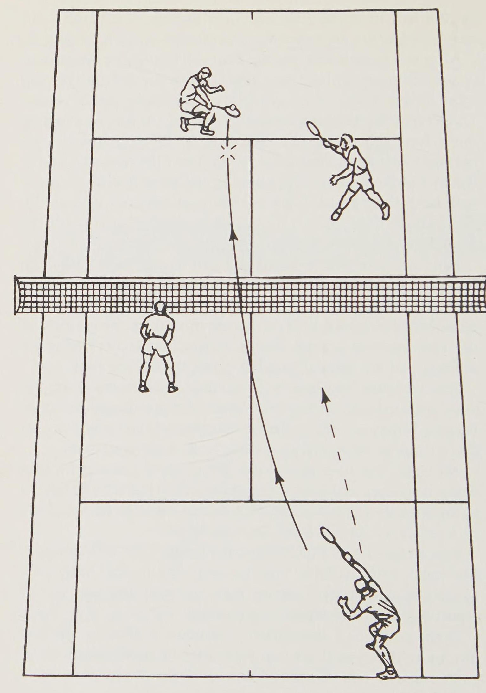
Vẫn còn nghi ngờ. Một cú lốp ngắn, bị đập thành một cú thắng dứt điểm trong một điểm quan trọng, trông thật khủng khiếp. Bạn thà “tự mình thoát khỏi rắc rối”.
Chà, nhiều cầu thủ giỏi “tự mình thoát khỏi rắc rối”.
Họ từ chối bị buộc vào một cú lốp yếu cho đối thủ đập và thà mạo hiểm đánh thật mạnh vào một quả bóng khó.
Họ không, tất nhiên, làm điều này một cách hoang dã với ít hy vọng thành công; họ đánh vòng qua và ôm lấy quả bóng với một kiểu xoáy lên bao quát để có được sự kiểm soát tối đa có thể. Có rất ít thời gian để nhắm mục tiêu ngoài hướng chung, nhưng bất kể cú đánh đó đi đâu, nó sẽ không hề nhẹ.
Điều tuyệt vời là những người có tư duy tấn công này không bao giờ ngừng chơi những cú lốp tấn công. Họ chọn những quả bóng dễ hơn để thực hiện.
Để không từ bỏ cú lốp thuận tay ô bên phải vì một thất bại trong một điểm quan trọng, hãy xem kịch bản từ thảm họa thành chiến thắng này: Set quyết định, 4-tất cả, 30-tất cả.
Bạn thực hiện cú đánh vượt qua người đứng lưới, nhưng bạn không quan sát quả bóng kỹ, có lẽ vì anh ta bắt đầu di chuyển. Bạn không đánh vào trung tâm dây vợt, cú lốp bị ngắn, anh ta đập bóng dứt điểm, đồng đội rên rỉ, đối tác mím môi. Đối tác đưa bóng phía trái tay overhead của mình và người giao bóng vẫn chưa tiến đến vạch giao bóng.
Thay vì có một rào chắn lưới chống lại bạn, trung tâm mở toang như cửa chuồng gà. Trong tình huống này, thật đáng tiếc nếu bạn không phải là một trong những người thuận tay trái với cú thuận tay xoáy lên mạnh mẽ, tung nó vào cú nửa-vô-lê hụt của người giao bóng đang do dự. Dù sao, hãy đánh cú trái tay của bạn vào khu vực này và tiến lên.
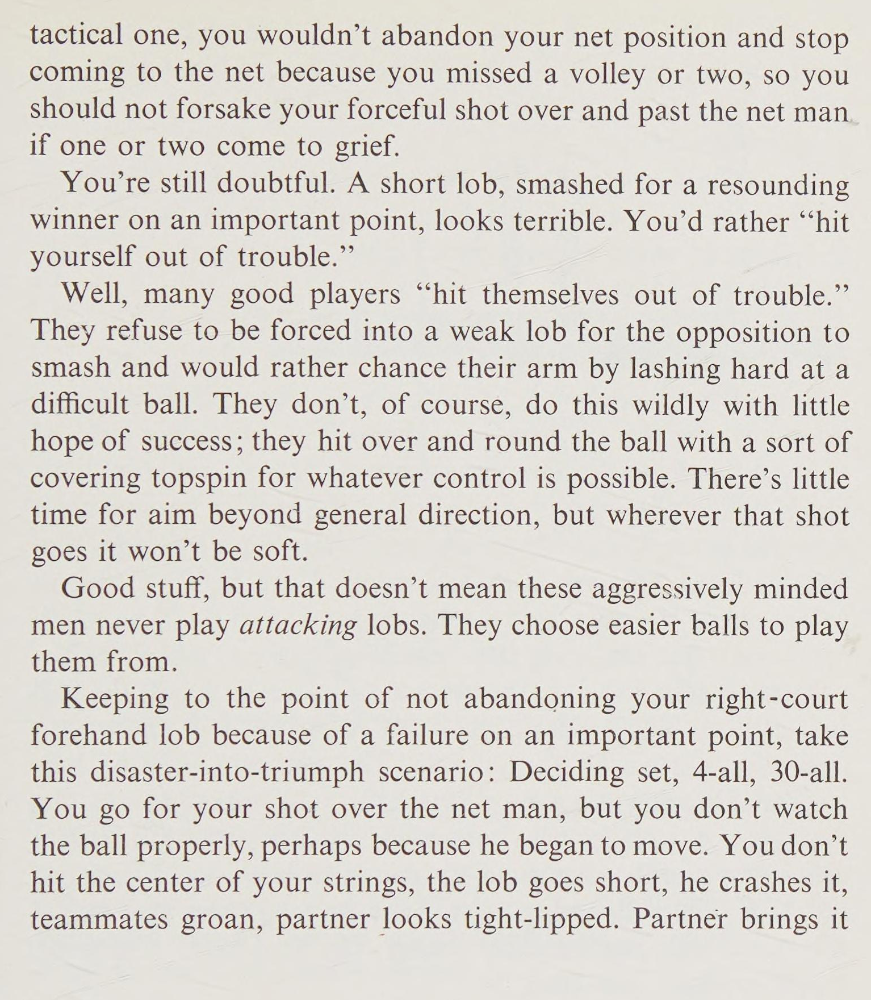
Trở lại hòa. Người giao bóng hỏng bóng một, và quả thứ hai rơi vào thuận tay của bạn và khá kém. Anh ta lao vào nhanh để bao phủ lưới nhằm bù đắp cho điều đó và người đứng lưới nhích một chút để sẵn sàng bảo vệ trung tâm.
Bạn nên quan sát bóng kỹ và thực hiện một cú trả giao bóng mạnh mẽ vượt qua phía trái tay người đứng lưới, ra sau anh ta. Dũng cảm? Không thực sự, bạn không phải đang ‘chạm’ bóng một cách căng thẳng.
Thành thạo? Phần lớn là vậy.
NHẬN BÓNG Ô BÊN TRÁI Từ ô bên trái, bạn không có mục tiêu đẹp tương tự cho một cú lốp qua phía trái tay người đứng lưới. Nếu bạn thoát được cú đập trái tay của anh ta, cú đánh của bạn thường có thể được bao quát không quá khó khăn bởi người giao bóng, người có quả bóng ở phía thuận tay của mình. Anh ta phải thay đổi hướng di chuyển đôi chút, nhưng một cú lốp cho anh ta thời gian để làm vậy. Điều này có nghĩa là các cú lốp từ ô bên trái của bạn sẽ phải vượt qua cú đập thuận tay của người đứng lưới, và điều này rủi ro hơn nhiều đến mức lốp bóng tấn công ô bên trái không phải là một chiến thuật cơ bản.
Tuy nhiên, hãy lốp bóng qua người đứng lưới nếu bạn có thể. Nó đưa quả bóng ra sau cả hai cầu thủ, phá hủy rào chắn lưới của họ, và cho phép bạn và đối tác tạo rào chắn của mình. Người đứng lưới có thể thuận tay trái, cho phép bạn có mục tiêu tốt cho cú lốp trái tay của mình. Hoặc, bạn có thể là một cầu thủ có thể lốp xoáy lên an toàn từ một cú giao bóng dọc trung tâm qua trái tay của một người đứng lưới thuận tay phải, ra ngoài tầm với của người giao bóng đang tiến lên, và đi thẳng đến góc đường biên và vạch cuối sân của người đứng lưới. Hoặc, bạn có thể là một người lốp bóng giỏi bất kể thế nào. Xem Hình 34.
Trả Giao Bóng Trực Tiếp Từ việc tung những cú lốp về mọi hướng, giờ hãy chuyển sang những hình thức trả giao bóng trực tiếp hơn.
Từ ô bên trái, mục tiêu chính của bạn là chân của người giao bóng đang tiến vào và rộng ra ngoài anh ta. Bạn sẽ không đạt được cả hai mục tiêu này chỉ bằng //tốc độ đơn thuần. Cú drive phẳng mạnh hoặc hơi lăn (rolled drive) mà xuyên thấu sâu trong đánh đơn, hoặc chống lại một cặp Một trên Một dưới, chỉ là một cú vô-lê đầu tiên cao ngang eo đối với một người giao bóng đã tiến lên. Cú đánh tấn công nhất của bạn là một cú drive xoáy lên (topspin drive) lao xuống, càng nhanh càng tốt, miễn là nó có thời gian để rơi xuống thấp hơn nhiều so với độ cao của lưới khi chạm tới người giao bóng, buộc anh ta phải vô-lê hướng lên. Bạn càng tạo được nhiều góc đánh càng tốt, miễn là quả bóng rơi kịp để nằm trong đường biên dọc.
Thật không may, một cú drive xoáy lên thường chỉ áp dụng cho cú thuận tay của bạn. Đến khi bạn chơi đánh đôi Lối chơi Lên lưới, những cú giao bóng bạn nhận được thường quá nhanh để cho bạn thời gian thực hiện một cú drive trái tay, và vì vậy bạn có thể phải chấp nhận cú cắt trái tay nhanh hơn.
Tuy nhiên, cú cắt trái tay cho phép bạn lướt quả bóng thấp qua lưới, và từ ô bên trái, hướng tự nhiên của nó là chéo sân và rộng ra xa cú vô-lê trái tay của người giao bóng.
Bằng mọi giá, hãy chơi một cú trái tay xoáy lên nếu bạn có thể. Để cho mình thêm một phần nhỏ thời gian để làm điều này, nhiều cầu thủ ô bên trái đợi nhận bóng với cách cầm vợt trái tay. Hầu hết không làm vậy, tuy nhiên, vì vậy hãy làm bất cứ điều gì tự nhiên hơn và do đó nhanh hơn trong trường hợp của chính bạn.
Cú trả thuận tay của bạn cũng không bị giới hạn trong một cú drive xoáy lên.
Ví dụ, có cú thuận tay lướt (Slider forehand). Bạn bước quanh trái tay của mình và lướt quả bóng sang phía không thuận, giữ nó rất thấp (nếu không nó sẽ dễ bị vô-lê) và nhắm rộng ra xa người giao bóng. Hoặc bạn có thể chơi một cú đánh thấp chậm vào chân người giao bóng.
Những cú đánh này đôi khi được gọi là Cú đánh Chạm (Dink Shots). Bất kể bạn gọi chúng là gì, bạn hy vọng rằng người giao bóng đang tiến vào sẽ nghĩ cú đánh của bạn nhanh hơn và dài hơn thực tế, sẽ nghĩ mình có thể vô-lê nó, rồi nhận ra mình không thể, và kết thúc bằng việc để nó bị mắc kẹt hoàn toàn trong dây giày của anh ta. Dây giày bên phải là ưu tiênvì một cú nửa-vô-lê gần chân dễ thực hiện hơn bằng trái tay hơn là thuận tay, vì khi đó khuỷu tay của bạn không bị vướng vào sườn. Bằng tốc độ đơn thuần. Một cú drive phẳng mạnh hoặc hơi lăn, xuyên sâu trong đánh đơn, hoặc chống lại một cặp Một trên Một Dưới, chỉ là một cú vô-lê cao ngang thắt lưng thoải mái cho một người giao bóng đã tiến lên. Cú đánh tấn công nhất của bạn là một cú drive xoáy lên (topspin) cắm xuống, càng nhanh càng tốt, miễn là nó có thời gian để cắm xuống thấp hơn nhiều so với chiều cao lưới khi chạm tới người giao bóng, buộc anh ta phải vô-lê hất lên. Bạn càng tạo được góc đánh tốt thì càng tốt, miễn là quả bóng cắm xuống kịp để ở trong đường biên dọc.
Không may, cú drive xoáy lên thường chỉ áp dụng cho cú thuận tay của bạn. Đến khi bạn chơi đánh đôi Lối chơi Lên lưới, các cú giao bóng bạn nhận được thường quá nhanh để bạn có thời gian thực hiện một cú drive trái tay, và vì vậy bạn có thể phải chấp nhận cú trái tay cắt nhanh hơn.
Tuy nhiên, cú trái tay cắt cho phép bạn lướt quả bóng thấp qua lưới, và từ ô bên trái hướng tự nhiên của nó là chéo sân và rộng ra xa cú vô-lê trái tay của người giao bóng.
Bằng mọi cách, hãy chơi một cú trái tay xoáy lên nếu bạn có thể. Để cho chính mình thêm một chút thời gian để làm điều này, nhiều cầu thủ ô bên trái đón nhận giao bóng bằng cách cầm vợt trái tay. Hầu hết không làm vậy, tuy nhiên, vì vậy hãy làm bất cứ điều gì tự nhiên nhất và do đó nhanh nhất trong trường hợp của bạn.
Cú trả bóng thuận tay của bạn cũng không bị giới hạn trong một cú drive xoáy lên.
Ví dụ, có cú thuận tay Lướt (Slider). Bạn bước quanh trái tay của mình và lướt quả bóng sang phía không thuận, giữ nó rất thấp (nếu không nó sẽ dễ bị vô-lê) và nhắm rộng ra ngoài người giao bóng. Hoặc bạn có thể đánh một cú thấp chậm vào chân người giao bóng.
Những cú đánh này đôi khi được gọi là Cú chạm nhẹ (Dink Shots). Bất kể bạn gọi chúng là gì, bạn hy vọng rằng người giao bóng đang tiến vào sẽ nghĩ cú đánh của bạn nhanh hơn và dài hơn thực tế, sẽ nghĩ anh ta có thể vô-lê nó, rồi nhận ra anh ta không thể, và kết thúc bằng việc bị vướng vào dây giày. Dây giày bên phải là ưu tiên—vì một cú nửa-vô-lê gần chân dễ thực hiện hơn với một cú trái tay hơn là thuận tay, vì khi đó khuỷu tay của bạn không bị chắn bởi xương sườn.
Hầu hết các cầu thủ thực hiện những cú thuận tay thấp chậm này dễ dàng hơn từ ô bên trái hơn là ô bên phải. Từ bên trái, bạn có thể sử dụng kiểu đánh xoáy trong-xoáy dưới tiếp xúc dài mà bạn có thể đẩy bóng sang phía không thuận.
Thay vì tranh luận chi tiết, bạn có nhận ra rằng hầu hết đối thủ đánh đơn thực hiện những cú bỏ nhỏ thuận tay sang phía không thuận của họ, tức là về trái tay của bạn? Có lẽ bạn cũng vậy.
Bóng Bay Lên Một khía cạnh khác của lối chơi ô bên trái là bạn có thể đón bóng sớm hơn ở ô bên phải, vì bạn không có nhu cầu tương tự là phải đứng xanh phía sau quả bóng để tránh người đứng lưới. Hãy luôn đứng sau quả bóng nếu có thể, để kiểm soát hướng tốt hơn và cũng để ở trạng thái thăng bằng hơn khi theo cú trả bóng hiên nếu đó là một cú đánh tốt, nhưng ô bên trái cho bạn cơ hội tốt hơn để kết hợp tất cả những điều này với lối chơi bóng bay lên. Đánh ra ngoài quả bóng, cú trái tay của bạn đi chéo qua người đứng lưới một cách tự nhiên. Còn đối với thuận tay, trong khi một cầu thủ ô bên phải nếu đánh muộn sẽ đánh bóng trong trong tầm với của người đứng lưới (Tội ác nhận bóng Lối chơi Lên lưới), thì bạn càng đánh muộn thì bóng càng đi rộng, thậm chí là ra ngoài đường biên của người giao bóng. Vì vậy, từ ô bên trái bạn có thể đứng gần hơn để nhận giao bóng, và thực hiện một cú trả giao bóng kiểu bóng bay lên với ít rủi ro bị người đứng lưới chặn hơn so với ô bên phải. Xem Hình 35.
Quan sát các cặp thi đấu, bạn có thể nhận ra rằng ngoại trừ một cầu thủ ô bên phải áp sát cú giao bóng hai để hủy diệt bằng thuận tay, thì thông thường người nhận ô bên trái là người đứng gần hơn. Phải thừa nhận rằng anh ta không phải canh chừng chăm sóc một cú ace thuận tay nhanh và uốn cong, và có lẽ anh ta đứng ở đó chỉ vì anh ta thường là cầu thủ mạnh hơn. Có lẽ anh ta đứng gần hơn vì cú cắt trái tay của cầu thủ ô bên trái có lẽ là cú trả giao bóng được sử dụng nhất quán nhất trong số tất cả, và đối với cú đánh cụ thể này, anh ta thà đón bóng bay lên hơn là bóng đang rơi. Không điều nào trong số này mâu thuẫn với Hình 35. Nó củng cố điều đó.
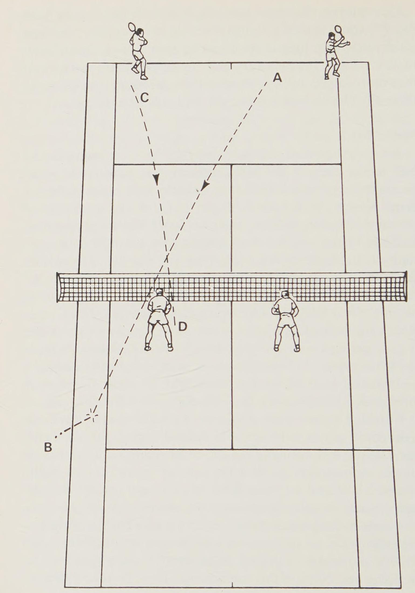
Cuộc thảo luận của chúng ta cũng giải thích về kiểu cầu thủ khá kỳ quặc mà bạn gặp người dường như muốn ô này ngày hôm nay và ô kia ngày mai.
Vị trí thực sự của anh ta, mặc dù anh ta có thể không bao giờ giải thích với bạn, là anh ta thích ô bên phải khi mặt sân chậm, nhưng trên mặt sân nhanh anh ta không thể giữ quả bóng tránh xa người đứng lưới một cách chính xác và nhận ra rằng, trong điều kiện này, anh ta chơi tốt hơn nhiều từ ô bên trái. Anh ta sẽ khó kết hợp với đối tác, nhưng chúng ta không thể tranh luận về lý luận của anh ta.
Trong mọi trường hợp, việc nhận ra giá trị của một quả bóng bay lên sẽ khiến bạn hài lòng. Bất kỳ ai chơi Nhận bóng Lối chơi Lên lưới tấn công đều muốn chơi bóng bay lên, và bạn có thể đã cảm thấy hơi ác cảm với những gợi ý trước đây về việc phải đứng đúng sau quả bóng thay vì đón bóng bay lên. Bạn cần những cú trả giao bóng bay lên đầy đủ chống lại các cặp mạnh, và bạn không muốn cảm thấy bất ổn khi đón bóng tương đối sớm chống lại các cặp mà bạn biết mình nên thắng.
Trung tâm và Đường biên dọc Không nhiều cú trái tay ô bên trái sẽ đi vào trung tâm. Ngay cả nếu bạn khiến người đứng lưới bất ngờ trong chốc lát, anh ta có khả năng phục hồi nhanh chóng và có thể vô-lê một cú thắng điểm. Trừ khi anh ta là một trong những cầu thủ chờ bóng với vợt giơ thẳng ra phía trước, nếu không anh ta sẽ giữ vợt thoải mái hơn băng qua cơ thể, từ đó cú vô-lê trái tay là phản xạ nhanh nhất của anh ta từ ô bên trái, vì hầu hết mọi người có xu hướng đánh thuận tay thẳng và trái tay chéo sân. Hơn nữa: với cú trái tay, bạn không phải dành thời gian để xoay người nhiều như hình vẽ. Nếu bạn đánh thuận tay muộn, bóng sẽ đi rộng ra ngoài người đứng lưới, AB, thay vì hướng về phía anh ta, CD.
Nhiều cầu thủ đã nghĩ rằng mình đã thực hiện một cú đánh thắng điểm, ngay cả từ một cú đập mạnh, chỉ để thấy mình đã đánh bóng chính xác vào cú vô-lê trái tay gần như tự động của đối thủ.
Một cú thuận tay trung tâm được thực hiện an toàn nhất bằng cách đánh một cú thuận tay xoáy lên chéo từ một cú giao bóng dọc trung tâm. Xem cú đánh CB trong Hình 34 một lần nữa, hãy tưởng tượng đó là một cú drive.
Những nỗ lực đánh bóng ra đường biên để vượt qua người đứng lưới nên được giới hạn trong những trường hợp anh ta di chuyển quá xa và bạn có thời gian để vượt qua anh ta, hoặc khi bạn nhận được một cú giao bóng quá rộng vào trái tay đến mức bạn có thể đánh quả bóng ra ngoài đường biên khi nó băng qua lưới. Xem Hình 36.
Hãy cẩn thận khi thực hiện một nỗ lực hời hợt để đánh bóng ra đường biên bằng cú trái tay cắt. Bạn muốn đánh thấp, như bạn vẫn làm chéo sân, vì một cú cắt cao rất dễ bị vô-lê, nhưng bây giờ bạn đang nhắm vào nơi lưới cao hơn 6 inch.
Điều đó nghe có vẻ không nhiều, và không ai nhận ra điều đó cho đến khi họ ngồi xuống bên cạnh sân với tầm mắt ngang với lưới và quan sát xem có bao nhiêu quả bóng trung tâm trượt qua trong phần võng của lưới. Điều đó cho thấy rõ hơn bất kỳ lời nói nào rằng một độ hở trung tâm thấp sẽ khiến quả bóng đập vào lưới ở đường biên dọc. Tương tự unless you’ve turned fully round, your sideline aim is more to your off side than before, and that’s weaker even though you don’t notice it. All told your shot is likely to find the net. You may feel it’s served some useful purpose by warning the net man to stay at home and not interfere with your next point, but you should then be playing wide of him anyway, and meanwhile you’ve lost the point. Của người đứng lưới, và hoặc là uốn cong hoặc ít nhất là “có xu hướng” đi vào trong đường biên dọc. Chống lại cả người đứng lưới và đường biên dọc, bạn đã tạo cho mình lợi thế lớn.
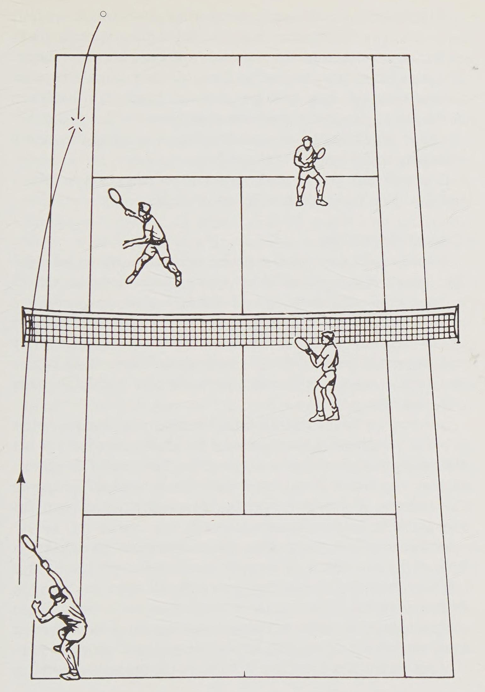
Nếu tỉ số là game point cho đối phương, thì đó là một sự lãng phí hoàn toàn, vì bốn game sau đó, người chơi trên lưới khó có thể cảm thấy bị hạn chế bởi bất kỳ cảnh báo nào mà bạn đã đưa ra từ bốn game trước; hơn nữa, set đấu có thể đã kết thúc vào lúc đó. Nếu đó là game point cho bạn, bên bạn có thể đã mất một break giao bóng. Nếu là 30-15, hoặc 15-30, như tỉ số thường thấy, bạn hoặc là để bên mình đối mặt với điểm game-point kép hoặc bạn đã đánh mất cơ hội có được vị trí đó cho chính mình.
Có vẻ như bạn không bao giờ được phép thư giãn, không bao giờ được nghỉ ngơi. Đó là một phần vai trò sân trái của bạn.
Vai Trò Sân Trái Các cặp đánh đôi không có đội trưởng, ngoại trừ đôi khi nói đùa. Sự tương đương gần nhất là người chơi sân trái. Ở đây, bạn nên là điểm tựa, người giữ thành khi bên bạn bị dẫn một điểm và là người giành lợi thế điểm kép hoặc chốt hạ game đấu khi đang dẫn trước. Chấp nhận trách nhiệm này và luôn ý thức về nó khiến cặp của bạn trở nên khó đánh bại hơn nhiều, và hỗ trợ đáng kể khả năng đánh bại các cặp yếu hơn một cách chắc chắn.
Khi chấp nhận trách nhiệm của mình, rõ ràng bạn có vị trí sân tốt hơn để thực hiện điều đó: hướng trái tay tự nhiên, không có người lên lưới chắn trước cú thuận tay, cú volley thuận tay của bạn để bảo vệ hầu hết khu vực trung tâm hoặc để tấn công, cú đập bóng thuận tay của bạn để bao quát gần như tất cả các pha bóng bổng trung tâm. Không ngạc nhiên khi sân trái thường được đảm nhận bởi người chơi mạnh hơn.
Nếu đối tác của bạn là người chơi mạnh hơn, nhưng chọn sân phải vì anh ta chuyên về vị trí đó, bạn vẫn nên chơi tennis sân trái một cách có trách nhiệm. Ví dụ, bạn vẫn sẽ phải bao quát bóng bổng trung tâm. Tuy nhiên, tình huống bình thường là bạn là người chơi mạnh hơn ở sân trái và cú đánh quan trọng nhất của bạn, dù có thể không phải là cú đánh tốt nhất, chính là cú trả giao bóng.
Cú trả bóng của bạn là tốt nếu nó buộc người giao bóng đang tiến lên phải volley từ dưới mức lưới, trong khi bạn vẫn giữ được thăng bằng tốt và có thể tiến lên lưới. Thoạt nhìn, điều đó có vẻ không phải là đặt ra tiêu chuẩn đủ cao cho bản thân, nhưng sau khi suy ngẫm, bạn có lẽ sẽ đồng ý, với tư cách là điểm tựa sân trái, rằng đó là cơ sở để đánh bại các cặp yếu hơn một cách chắc chắn.
Trong khi bạn trả bóng thấp và tiến lên, còn người giao bóng phải volley bóng bổng lên, bạn sẽ là người chiến thắng. Vì vậy, vai trò của bạn không phải là chấp nhận những rủi ro không cần thiết bằng cách đánh mạnh nhất, hoặc đánh xoáy xuống cực thấp, hoặc chạm bóng tinh tế nhất, hoặc lấy bóng ở điểm cao nhất, hoặc cắt trái tay ở góc rộng nhất có thể ra đường biên, hoặc vung vợt dài với cú drive trái tay topspin mà bạn không có đủ thời gian để thực hiện đúng cách.
Nếu bạn thực hiện được những cú đánh này, nó không thể gọi là lối chơi an toàn (sucker play), nhưng đó là một thái độ 'Sucker'. Nó khiến bạn và đối tác trở thành một cặp dễ tổn thương, dễ bị lật kèo.
Nếu bạn chấp nhận vai trò cấp cao ở sân trái, nguyên tắc dẫn dắt của bạn là Đủ là Đủ. Điều đó không có nghĩa là bạn không tấn công. Bạn đang tấn công, nếu bạn thực hiện những cú trả bóng đủ tốt để có thể tiến lên; bạn không thể làm điều đó một cách ngần ngại hoặc ngả người ra sau. Nếu đối thủ nâng tầm cuộc chơi, bạn cũng vậy.
Trách nhiệm cuối cùng của tennis sân trái là kiên trì đến cùng. Giả sử bạn đã chịu áp lực chính của game đấu, nhưng đối thủ đang giao bóng để kết thúc trận đấu; tuy nhiên, bên bạn xoay xở giành được break point, và bạn buộc đối thủ giao bóng phải volley yếu, nhưng sau đó đối tác của bạn lại đánh hỏng hoàn toàn; khi nhận bóng ở điểm deuce, anh ta mất bình tĩnh và đánh loạn xạ vào một cú giao bóng hai mà lẽ ra anh ta có thể trả vào cuộc và cho bạn một cơ hội. Bây giờ là match point cho đối phương. Đừng, tuyệt đối đừng, vung vợt loạn xạ ở cú giao bóng tiếp theo rồi chạy lên lưới để bắt tay trong sự thất bại giận dữ—tất cả là lỗi của đối tác. Hãy đặt cho mình một tiêu chuẩn cao ở đây. Không đủ để chỉ là một vận động viên chạy trung bình. Bạn phải là một người bền bỉ.
NHÃN QUAN VỀ CUỘC CHƠI Một trận đấu giữa một cặp cao lớn đánh mạnh và một cặp cao lớn đánh mạnh nổi tiếng đã được lên lịch, và một người bạn chưa có kinh nghiệm đã đến xem để học hỏi. Anh ta ngồi đối diện giữa sân để có thể nhìn thấy cả hai đầu sân như nhau, và ngồi ngang tầm sân để gần các cầu thủ nhất có thể vì anh ta muốn nghiên cứu các cú đánh của họ.
Trong mắt anh ta, cả bốn cầu thủ đều có những cú giao bóng khủng khiếp và họ sẽ giao ace hết lần này đến lần khác nếu chỉ một số trong số họ không đánh ra ngoài. Có những cú trả bóng nhanh, những cú volley sát, một vài cú lốp bóng khiến đối thủ đứng chôn chân và một số cú đập bóng sấm sét. Khá nhanh sau đó, cặp đôi nổi tiếng đã thắng trận 6-2, 6-2, cách biệt mười hai game so với chỉ bốn game, nhưng bạn của chúng ta vẫn không hiểu tại sao. Hai cặp trông giống hệt nhau. Anh ta không thấy bất kỳ sự khác biệt nào giữa bất kỳ ai trong bốn cầu thủ, nếu phải nói đến điều đó. Về thể hình và cả cú đánh, tất cả đều đánh mạnh, họ trông giống hệt nhau.
Cho đến nay, anh ta chưa có nhãn quan về cuộc chơi và chắc chắn anh ta cũng chơi như vậy.
Bạn nên xem một trận đấu từ một đầu sân và từ trên cao nhìn xuống, để có cái nhìn về trái bóng tương tự như cái nhìn của các cầu thủ. Một sân đánh đôi nhìn theo cách đó không hề bị quá tải. Nếu bạn xem những cú gần-ace nghẹt thở của trận đấu vừa mô tả, bạn sẽ thấy chúng rộng một cách vô hại và hầu hết được giao bởi cặp yếu hơn. Đối với bạn, trái bóng sẽ trông chậm hơn và dễ kiểm soát hơn, giống như đối với các cầu thủ.
Những cú trả bóng nhanh mà người bạn thiếu kinh nghiệm thấy, thực tế, chủ yếu đến từ cú thuận tay của người chơi sân phải của cặp mạnh hơn, vì cặp yếu hơn đã cho phép anh ta sử dụng nó thay vì tấn công trái tay của anh ta bằng những cú giao bóng vạch trung tâm. Anh ta có lẽ cũng là người thực hiện các cú lốp bóng—vượt qua phía trái tay của người lên lưới đang đứng quá gần lưới. Người chơi sân trái của cặp mạnh hơn vững vàng hơn nhiều trong việc trả giao bóng so với đối thủ của mình số. Cặp yếu hơn theo sát cú giao bóng của họ, nhưng cặp mạnh hơn thường tiến lên lưới cả khi trả giao bóng cũng như từ cú giao bóng của họ. Hầu hết cặp yếu hơn phải volley bóng bổng lên và cặp mạnh hơn volley bóng xuống. Và cứ thế tiếp diễn.
Nếu bạn, với tư cách là một người chơi đánh đôi theo Lối chơi Lên lưới, có thể nhìn nhận đánh đôi dưới góc độ đó, bạn cũng có thể chơi theo cách đó. Sẽ khó có khả năng một cặp đánh mạnh có thể khiến bạn bất ngờ và đánh bật bạn ra khỏi sân.
XUẤT HIỆN: MỘT KẺ KỲ DỊ KHÁC Sau tất cả những vị trí chính thống này và lối chơi sân phải táo bạo, lối chơi sân trái vững vàng, lối chơi đánh mạnh, lối chơi của người thuận tay trái và tất cả những thứ còn lại—sau tất cả những điều này, một kẻ kỳ dị với cú giao bóng chậm và cú volley chọc (stabbing volley) xuất hiện và khiến bạn hoàn toàn nản lòng. Anh ta thắng tất cả các game giao bóng của mình một cách dễ dàng.
Tại sao? Bởi vì anh ta luôn volley bóng xuống. Làm thế nào? Bởi vì bằng cách nào đó, anh ta luôn ở vị trí cao nhất của lưới.
Có lẽ bạn đã gặp anh ta trước đây. Có lẽ, để cho đầy đủ, người bạn gặp là một cựu binh với kiểu cầm vợt Western* người thực hiện nhiều cú volley thuận tay từ trước mặt và chọc những cú volley trái tay ra xa với lực tương đương. Anh ta giao bóng cao và chậm qua lưới và đưa bóng xuống sâu, và rồi anh ta lên đỉnh lưới trong nháy mắt và volley bóng xuống. Anh ta là một người sẽ không gây khó khăn cho bạn trong đánh đơn, vì anh ta không thể với tới những quả bóng rộng, nhưng ở đây trong đánh đôi, anh ta toàn chiến thuật và không có những cú đánh chuẩn mực ngoại trừ những cú volley chọc đó, giữ vững các game giao bóng và, ai biết được, có khả năng gây bất ngờ cho bạn. Những đồng đội ngưỡng mộ anh ta trên đường biên cười thầm trước sự lúng túng của bạn và khi bạn đổi sân, họ kể cho bạn nghe về huyền thoại của anh ta: “Jim già, bạn biết đấy—mỗi mùa giao bóng của ông ấy lại cao hơn và chậm hơn, và ông ấy lên lưới nhanh hơn. Một ngày nào đó ông ấy sẽ ở trên đó và cú giao bóng của ông ấy sẽ bay đến và đập vào sau đầu ông ấy.”
* Vợt được cầm như một chiếc chảo chiên hoặc một chiếc chổi đập thảm. Trái tay: đầu vợt xoay ngược lên trên và sử dụng cùng một mặt dây như đối với thuận tay.
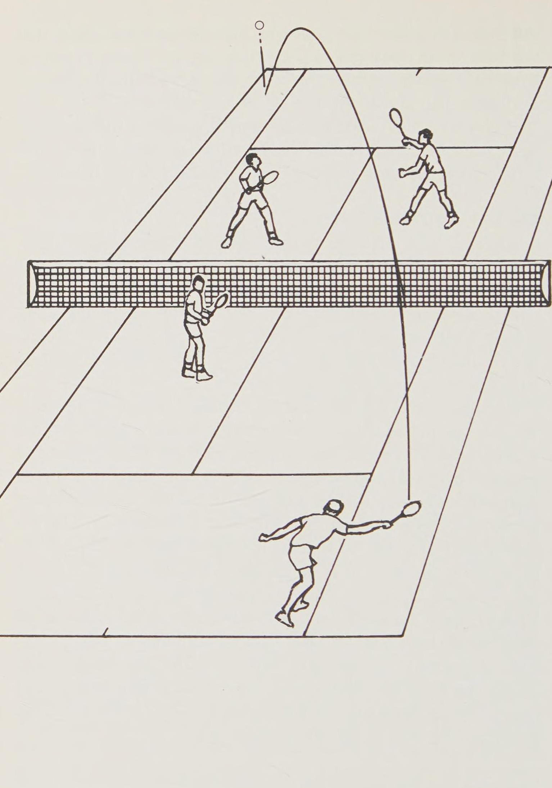
Nhận thấy bạn không thể vượt qua Jim, vì ông ấy đứng quá gần khiến mọi góc đánh chéo sân đều bị chặn, bạn thử lốp bóng. Không hiệu quả; ông ấy đã hướng dẫn kỹ đối tác trên lưới cho chiến thuật này; tỉnh táo và cảnh giác, người đối tác trên lưới này nhảy lùi lại và xử lý những cú lốp bóng của bạn; anh ta cũng không bao giờ đánh hỏng, vì đó là kiểu đối tác trên lưới duy nhất mà Jim già sẽ chơi cùng.
Tất nhiên là có giải pháp, nếu không phương pháp của Jim sẽ trở thành thực hành tiêu chuẩn trên toàn thế giới. Trong trường hợp bạn chưa biết, hãy xem Hình 37. Lốp bóng mạnh mẽ qua đầu Jim.
6. LỐI CHƠI LÊN LƯỚI—VẤN ĐỀ NGHIÊM TÚC
KHI TIẾN BỘ lên tiêu chuẩn nâng cao của đánh đôi Lối chơi Lên lưới, nơi các cú đánh và chiến thuật của cả hai cặp đối thủ đều chuẩn xác, trước hết chúng ta phải bắt kịp với Đội hình Song hành (Tandem). Nhiều người chơi trình độ cao không quen với Tandem và, kết quả là, chơi nó một cách miễn cưỡng, để làm hài lòng đối tác, và theo một cách không chuẩn xác nhất. Trong việc xem xét và phát triển Tandem, hãy thực hiện từ quan điểm của một người thuận tay trái chơi chống lại nó. Những đối thủ giao bóng là những người chơi Lối chơi Lên lưới.
NGƯỜI THUẬN TAY TRÁI CHỐNG LẠI TANDEM Bạn được giả định là kiểu người thuận tay trái khiến một cặp thuận tay phải chính thống bình thường phải dùng đến Tandem. Bạn có một cú drive thuận tay chéo sân topspin mạnh khiến người giao bóng đang tiến lên vô cùng lúng túng. Cú trái tay của bạn rất khó bị tìm thấy, trừ khi người giao bóng phải chấp nhận rủi ro giao bóng từ gần vạch trung tâm. Cú trái tay của bạn là một cú đánh xoáy trong nhỏ mà bạn thích đánh sang phía đối diện. Bạn đang chơi tốt, khiến người giao bóng đang tiến lên phải chịu đựng một loạt cú half-volley trái tay và giờ họ đang mạo hiểm và sẽ thử Đội hình Song hành chống lại bạn.
Tandem đột ngột được áp dụng trong một trận đấu mà không có nhiều sự luyện tập trước đó thường là một thất bại. Khi điều này xảy ra, nó làm mất điểm và, đồng thời, khiến cặp giao bóng bị thụt lùi và tạo cơ hội cho bạn.
Bạn có thể nhận ra ngay lập tức nếu một trong những cầu thủ không chắc chắn về việc mình phải làm gì; đối tác của anh ta luôn phải đưa ra một số lời hướng dẫn. Thông thường là người giao bóng muốn dùng Tandem, vì vậy thường là người lên lưới không biết chính xác mình nên đứng ở đâu và phải làm gì. Đôi khi thì ngược lại, nơi người lên lưới là người chơi mạnh hơn và đang cố gắng giúp đối tác yếu hơn giữ game giao bóng. Bất kể ai là người không chắc chắn, hãy tấn công phía sân của anh ta bằng cú trả giao bóng tiếp theo.
Nếu đó là người lên lưới, anh ta có thể không đứng đủ gần trung tâm để bảo vệ nó—và bạn có thể đánh xuyên qua trung tâm. Xem Hình 8 ở trang 35, tưởng tượng rằng người giao bóng đã tiến lên.
Nếu anh ta được đặt gần trung tâm và được bảo vệ nó, anh ta có khả năng tập trung vào điều này và mang đến cho bạn một cơ hội tuyệt vời để lốp bóng qua đầu anh ta, đặc biệt là phía trái tay. Lần tới anh ta đứng lùi lại một chút, bảo vệ cả trung tâm và bóng bổng; nhưng, khi lùi lại, anh ta mở ra khoảng trống ở phía bên trái và bạn có thể đánh một cú ngắn và thấp vào đó. Đối với cú đánh này và cú lốp bóng của bạn, hãy xem Hình 38.
Nếu người giao bóng là người không chắc chắn, anh ta gần như chắc chắn sẽ chậm chạp trong việc di chuyển sang phía “sai” của sân—Hãy chơi BE trong Hình 38.
Một cặp đôi phải thảo luận về đội hình Tandem của họ trước, sau đó thực hiện các điều chỉnh và vẫn mất điểm sẽ từ bỏ nó. Thường họ từ bỏ ngay sau điểm đầu tiên.
Khi Họ Am Hiểu Công Việc Vẫn giả định rằng bạn là một người thuận tay trái chơi chống lại các đối thủ giao bóng Lối chơi Lên lưới, nhưng lần này họ am hiểu công việc và lập tức ổn định vào các vị trí Tandem chính xác. Người giao bóng đi thẳng đến vạch trung tâm, để tấn công trái tay của bạn và để ở gần nhất có thể với phía “sai” của sân mà anh ta sẽ phải bao quát. Người lên lưới, so với vị trí trước đây trong đội hình chính thống, đứng gần trung tâm hơn và lùi xa hơn. Những vị trí này tương tự như những vị trí được hiển thị trong Thông thường là một chiến thuật tồi nếu bạn tấn công một người lên lưới có vị trí tốt, đã sẵn sàng để volley hoặc đập bóng, vì vậy cuộc tấn công của bạn nên hướng vào người giao bóng đang tiến lên. Bạn nên coi đó là một cuộc tấn công, vì vị trí của người giao bóng Tandem không hề bất khả xâm phạm. Thực tế, nó khá khó chịu. Một người giao bóng Tandem đang tiến lên phải tiếp cận lưới theo một đường hơi chéo, thay vì theo tự nhiên theo đường bay của cú giao bóng của mình một cách sát hơn. Ngoài ra anh ta tương đối bị hở. Đối tác trên lưới của anh ta ở phía bên kia của sân, thay vì đối diện với bạn.
Chống lại một đội hình chính thống, bạn phải tránh người lên lưới, nhưng giờ đây có khoảng trống trước mặt bạn—tức là, cho đến khi người giao bóng tiến lên theo đường chéo lấp đầy nó, nhưng ngay cả khi đó anh ta cũng không thể bao quát lưới mạnh mẽ như một người lên lưới chính thống. Thậm chí anh ta không thể tiến gần đến lưới như khi tiếp cận theo đường bay từ một cú giao bóng chính thống. Về phần đối tác trên lưới của bạn, chống lại Tandem anh ta có thể đe dọa một người giao bóng Tandem nhiều hơn một người giao bóng chính thống, vì anh ta có thể đứng gần trung tâm hơn mà không làm hở đường biên của mình—bởi vì
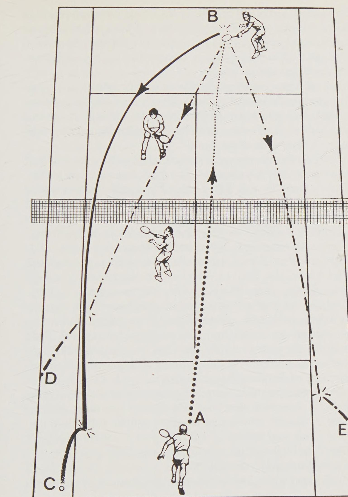
Đối tác của bạn nên đứng khoảng đối diện với người lên lưới của Tandem, nhưng gần lưới hơn, để gây hấn nhiều hơn, vì anh ta không phải chịu mối đe dọa lốp bóng tương tự.
Vì vậy, khi một cặp chuyên gia ổn định hiệu quả vào các vị trí Tandem chính xác chống lại bạn, không cần phải lo lắng.
Thay vào đó, cả bạn và đối tác nên sẵn sàng tấn công, ý thức được những khó khăn tiềm tàng của người giao bóng Tandem ở phía “sai” đang bị hở của anh ta.
Bây giờ, đến các cú trả giao bóng của bạn với tư cách là người nhận thuận tay trái. Người giao bóng giao bóng xuống trung tâm. Bạn không cần phải cố gắng thực hiện cú đánh hiệu quả được hiển thị ở BD trong Hình 27 ở trang 99. Đó là hướng sai cho cú trái tay xoáy trong của bạn. Nếu một cú đánh như vậy, từ bạn, luôn có vẻ làm trái bóng bay bổng lên cho một cú volley trong tầm với hoặc bay ra ngoài đường biên, đừng chơi nó. Thay vào đó, khi người giao bóng di chuyển để bao quát phía “sai” của sân, bạn nên nhắm vào nơi cú volley trái tay thấp hoặc chân của anh ta sẽ ở đó. Đây là hướng tự nhiên hơn đối với bạn và cho phép bạn kiểm soát tốt hơn. Hãy thực hiện cú đánh của bạn một cách ổn định (không có người lên lưới ở phía trước cản trở và bạn không cần phải thắng điểm trong một cú đánh) và, nếu bạn giữ bóng đủ thấp, bạn có thể hài lòng khi khiến người giao bóng đó phải đối mặt với thêm một cú half-volley trái tay nữa. Và nếu anh ta ngần ngại, đối tác của bạn ở vị trí tốt để tận dụng bất cứ điều gì cao và yếu.
Ở điểm tiếp theo, người giao bóng có thể quyết định giao bóng rộng sang phía thuận tay của bạn, lập luận rằng cú thuận tay tốt nhất của bạn được thực hiện với một hành động kéo chéo sân và do đó sẽ nằm trong tầm với của anh ta; từ cú trả bóng của bạn, anh ta sau đó sẽ thực hiện một cú volley đầu tiên thoải mái và sâu về phía trái tay đang bị hở của bạn và tiến vào để tạo thành rào chắn của mình. Đó là những gì anh ta lập luận.
Ồ, đừng cố đánh trái bóng ra khỏi tầm với của anh ta bằng cách trượt cú thuận tay sang phía đối diện nếu điều đó không tự nhiên và an toàn. Bạn có lẽ sẽ đánh bóng quá cao hoặc đưa nó ra ngoài đường biên, hoặc cả hai. Thay vào đó, hãy tiếp tục và thực hiện cú thuận tay đặc trưng: kéo, đánh từ ngoài bóng, topspin, nhanh, chéo sân. Nhưng khi đánh từ bên ngoài đường biên đánh đôi, hãy đánh nó qua khu vực lưới bên ngoài đường biên này để nằm ngoài tầm với của người giao bóng, và hãy để cú tiếp xúc ngoài-bóng đóng vai trò như một biện pháp an toàn trong việc uốn trái bóng vào sân. Xem Hình 36 ở trang 127, hiển thị một người thuận tay phải thực hiện điều này với trái tay của họ.
Đây là một cú đánh tự nhiên cho bạn và do đó an toàn hơn và nhanh hơn việc đẩy bóng và cố gắng lái nó ra xa người giao bóng.
Nếu người giao bóng giao bóng thẳng vào bạn, hãy thực hiện cú thuận tay và cố gắng tự giải thoát mình khỏi rắc rối thay vì chơi một cú trái tay phòng thủ. Nhắm, với thật nhiều topspin, vào phía trái tay thấp của anh ta.
Tóm lại, hãy luôn cố gắng biến Tandem Chống lại Người thuận tay trái thành Người thuận tay trái Chống lại Tandem. Nếu bạn là một người chơi đánh đôi thuận tay trái giỏi, bạn không thể để một đội hình nhân tạo như Tandem kìm hãm khả năng của mình.
Khía cạnh cuối cùng là một cặp thực sự giỏi sẽ không chơi Tandem chống lại bạn một cách nhất quán, khiến bạn ổn định vào một tình huống thoải mái khi không có người lên lưới đối diện với các cú trả giao bóng của bạn. Việc họ thay đổi từ đội hình này sang đội hình khác và ngược lại chắc chắn sẽ khiến bạn bất ổn nếu bạn phải chơi những cú đánh tự nhiên một phút và không tự nhiên vào phút tiếp theo. Những cú trả bóng được gợi ý ở trên cho phép bạn chơi tự nhiên mọi lúc, cụ thể là với cú thuận tay chéo sân và cú trái tay underspin sang phía đối diện.
Kéo Tandem (Tandem Scissors) Một người hoài nghi có thể nói với bạn rằng tất cả những cuộc thảo luận trên sẽ sụp đổ nếu cặp Tandem thực hiện kỹ thuật kéo (scissors). Nhưng tại sao anh ta lại giới hạn lời buộc tội đó cho Tandem? Nó cũng sẽ áp dụng tương tự đối với các cú trả giao bóng chống lại một cặp giao bóng từ đội hình chính thống và sau đó thực hiện kéo.
Kỹ thuật kéo thành công khi đó là một động tác gây bất ngờ và khi cú trả giao bóng bị yếu. Đối với lối chơi chung chống lại tiêu chuẩn trả bóng thường gặp trong tennis Lối chơi Lên lưới, khả năng volley của cặp giao bóng sẽ bị cản trở nếu họ cố gắng thực hiện nó trong khi đang kéo loạn xạ khắp nơi. Phải là như vậy, nếu không kỹ thuật kéo sẽ liên tục được các nhà vô địch sử dụng. Dù sao thì, hãy tự mình thử nghiệm.
BỨC TRANH TỔNG THỂ VỀ ĐÁNH ĐÔI LỐI CHƠI LÊN LƯỚI Cơ sở của chiến thuật Lối chơi Lên lưới của bạn là tạo ra một rào chắn trên lưới. Điều này đặt các cú volley và đập bóng của bạn đối lập với những cú đánh nền và lốp bóng của đối phương. Kết quả cho thấy các cú volley và đập bóng thường giành chiến thắng. Vì vậy, vấn đề chỉ còn là cách bạn tạo ra rào chắn trên lưới của mình.
Giao bóng Khi giao bóng, bạn đặt một người ở lưới, nhằm bao quát đường biên và bóng bổng của anh ta và bảo vệ đầy đủ khu vực trung tâm. Người giao bóng hoàn thiện rào chắn trên lưới theo hai giai đoạn, ổn định bản thân trước khi thực hiện cú volley đầu tiên từ bên trong vạch giao bóng nếu có thể, và sau đó tiến lên gần hơn sau đó.
Ở mức độ chơi Lên lưới thấp, người lên lưới thường bảo vệ đường biên của mình và bỏ qua hai trách nhiệm còn lại. Về bóng bổng, anh ta đập những quả lốp bóng trong tầm với, và lối chơi trung tâm của anh ta chủ yếu bao gồm việc đánh chặn thỉnh thoảng. Đứng gần lưới, anh ta hái quả khi đối tác giao bóng tốt, nhưng hỗ trợ rất ít khi đối tác không làm được.
Người giao bóng thường có cú giao bóng nhanh và tốt, nếu không anh ta sẽ không chơi Lối chơi Lên lưới mà không có nhiều ý niệm về chiến thuật của nó. Anh ta có xu hướng “lao” lên lưới và, giống như đối tác của mình, làm tốt ở những điểm mà anh ta giao bóng tốt. Khi người nhận kiểm soát trái bóng cho cú trả bóng, cặp giao bóng trở nên dễ bị tổn thương.
Ở mức độ cao hơn, người lên lưới nhận ra vai trò then chốt của mình là bao quát đường biên, bóng bổng và trung tâm, và anh ta chọn một vị trí trên lưới phù hợp để giúp mình thực hiện điều đó. Người giao bóng kết hợp hành động giao bóng với việc tiếp cận lưới, và chủ yếu giao bóng với ý định thiết lập một cú volley đầu tiên thoải mái. Anh ta đưa được nhiều cú giao bóng một vào cuộc. Hai cầu thủ thắng các game giao bóng của họ như một cặp. Họ là một bức tường gạch chống lại các cặp yếu hơn và là một hạt dẻ rất khó nhằn đối với các cặp tốt hơn. Rào chắn trên lưới của họ hiếm khi bị phá vỡ; từ điểm đầu tiên của một pha bóng đến điểm cuối cùng, mỗi cầu thủ bao quát bóng bổng của chính mình và hiếm khi bị lốp bóng qua đầu.
Đây là những chiến thuật cơ bản cho giao bóng Lối chơi Lên lưới, mặc dù nếu bạn chơi thường xuyên với cùng một đối tác, bạn sẽ có những bổ sung riêng. Khi làm vậy, hãy lưu ý rằng các tác dụng phụ không được can thiệp vào cấu trúc cơ bản. Ví dụ, khi một trong hai bạn bất ngờ bị lốp bóng qua đầu, có thể dễ dàng hơn cho đối tác còn lại xoay nửa người và đuổi theo bóng theo đường chéo, thay vì để đối tác mắc lỗi phải quay toàn bộ và chạy thẳng ngược lại sau bóng. Bạn nên làm điều này như một sự bao quát cuối cùng trong một số trường hợp, nhưng nếu bạn biến nó thành phương pháp bình thường, tác dụng phụ thực tế sẽ là cả hai bạn sẽ bị lốp bóng qua đầu thường xuyên hơn, và đó sẽ là một tổn thất thuần túy.
Một ví dụ khác là các tín hiệu. Điều này có vẻ là lời cuối cùng cho một sự kết hợp tinh vi, nhưng trong thực tế giá trị của chúng là đáng nghi ngờ. Ý tưởng là người lên lưới ra tín hiệu giao bóng ở đâu hoặc giao bóng như thế nào để anh ta có thể đánh chặn bất ngờ. Nhưng tại sao phải bận tâm với vở kịch này khi bạn có thể dễ dàng thì thầm với đối tác giao bóng, “Giao thẳng vào anh ta và tôi sẽ băng qua,” hoặc bất cứ điều gì tương tự? Các tín hiệu phút cuối gửi đến một người giao bóng không thể phản hồi là một thiết bị nguy hiểm. Bạn có thể ra tín hiệu cho một kiểu giao bóng ngay khi đối tác giao bóng của bạn cảm thấy muốn giao bóng kiểu khác. Dù sao thì việc sắp đặt trước có nghĩa là cam kết trước, và nếu mọi thứ không diễn ra chính xác, đội hình của bạn sẽ trở thành một mớ hỗn độn. Không ai có thể chấp nhận điều đó.
Xác nhận từ Đỉnh cao Giải quyết vấn đề tín hiệu trước, các cặp vô địch thế giới không chơi tennis theo kiểu cam kết. Mặt khác, họ không chơi tennis hời hợt và chỉ dựa vào những cú đánh hủy diệt mà chúng ta thấy họ tạo ra. Về cơ bản, họ chơi những chiến thuật giống như chơi cờ được hiển thị trong Hình 24 ở trang 92, từ đó họ phát triển thành lối chơi rực rỡ.
Với chiến thuật được phát triển đầy đủ, điều hiển nhiên là bước tiến tiếp theo của bạn sẽ được thực hiện thông qua các cú đánh. Những cú đánh tốt hơn tự thân chúng nâng tầm lối chơi đánh đôi của bạn, như mọi người đều biết, nhưng đồng thời chúng hỗ trợ bạn trong việc thực hiện chiến thuật. Lấy các cú giao bóng của nhà vô địch làm ví dụ, những cú giao bóng này đe dọa aces vung rộng ra ngoài thuận tay đến mức người nhận phải đề phòng điều này bằng cách để hở trái tay nhiều hơn mức họ muốn. Vì vậy, bạn sẽ nhận thấy cú giao bóng hết lần này đến lần khác tìm đến trái tay, và người giao bóng thực hiện hầu hết các cú volley đầu tiên chống lại những cú trả bóng trái tay. Đó có thể là cú đánh tốt hơn của người nhận nhưng trong một cú đánh thì ít nguy hiểm hơn cú thuận tay của anh ta. Nhà vô địch tự hào về lối chơi tennis theo tỷ lệ phần trăm, vì vậy anh ta thích thực hiện một cú volley đầu tiên chắc chắn và kiểm soát cuộc chơi từ đó. Đó chính là chiến thuật của bạn. Anh ta thực hiện chúng tốt hơn, thông qua một cú giao bóng tốt hơn.
Chúng ta chủ yếu đề cập đến cú giao bóng một của các nhà vô địch, khẩu pháo lớn ấn tượng, nhưng bạn có lẽ đã đạt đến giới hạn của mình với cú đánh này. Thật đáng mừng khi biết rằng nhiều chuyên gia đánh giá tennis đã nói rằng sự khác biệt lớn nhất về hiệu quả cú đánh giữa người chơi bình thường và nhà vô địch nằm ở cú giao bóng hai. Việc cải thiện cú giao bóng hai của chính bạn chắc chắn nằm trong khả năng của bạn.
Tất nhiên, không chỉ là giao bóng. Cách tiếp cận lưới của nhà vô địch nhanh chóng và phối hợp, và anh ta khiến hầu hết các cú volley đầu tiên trông thật thoải mái, ngay cả những cú hóa ra là half-volley. Sẽ dễ dàng hơn để thấy họ làm điều đó như thế nào nếu bạn có thể xem
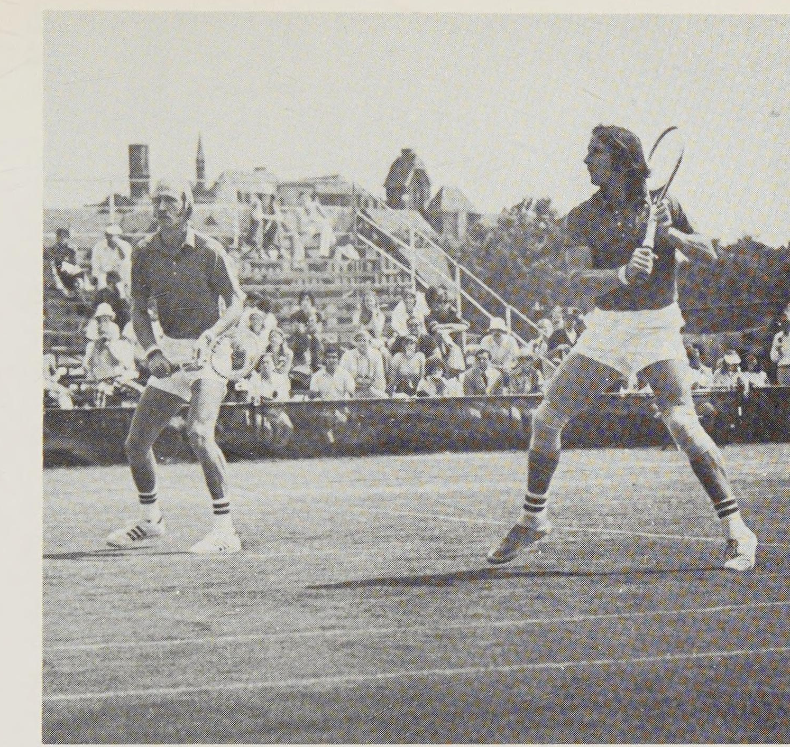
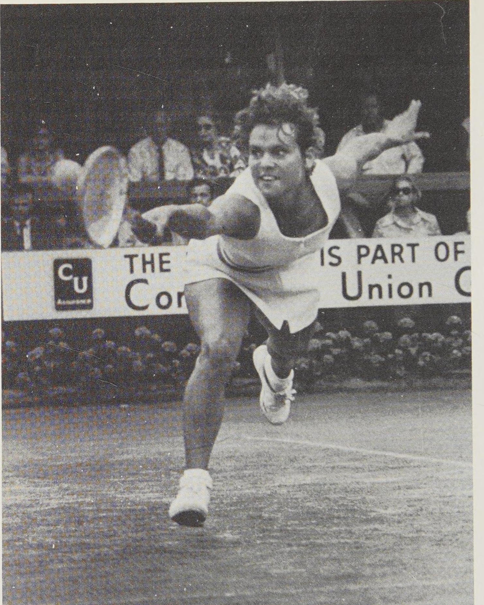
Họ trực tiếp, và bạn có thể quan sát trên TV nếu bạn nhìn kỹ phần chơi này của họ. Nếu bạn có thể xem tennis, bạn có thể chơi theo cách tương tự.
Chuyển từ các cú đánh của nhà vô địch sang vị trí và phản xạ của họ, bạn có thể nhận thấy rằng trong đánh đôi đẳng cấp thế giới, người lên lưới thường đứng rất rộng so với đường biên, để bao quát trung tâm, nhưng anh ta đứng gần lưới hơn mức chúng ta đã khuyến nghị. Anh ta volley quyết liệt hơn từ đó, phản xạ nhanh bù đắp cho thời gian ngắn hơn có được để thực hiện cú đánh. Vị trí “quá gần” khiến anh ta có vẻ dễ bị tổn thương trước một cú lốp bóng chuẩn xác, nhưng một lần nữa phản xạ nhanh đã bù đắp. Những người lên lưới ở mọi trình độ của đánh đôi Lối chơi Lên lưới phải bao quát những cú lốp bóng của chính mình; họ có thể đứng bất cứ đâu họ muốn; nhưng họ phải bao quát được chúng.
Đừng nhầm lẫn về phần cuối đó. Nếu một người lên lưới nhà vô địch bị lốp bóng qua đầu, anh ta đã làm hỏng cả đội với một cú đánh hỏng lớn như bất kỳ ai khác. Anh ta sẽ quay lại trong nháy mắt và sẽ tâng trái bóng lên trời bằng một cú lốp bóng phòng thủ để giành được nhiều thời gian nhất có thể, hoặc anh ta sẽ thực hiện một cú drive tuyệt vời khi xoay người—nhưng anh ta đang đối đầu với một vài người chơi lưới giỏi nhất thế giới và khả năng anh ta thoát khỏi sai lầm sơ đẳng của mình là rất thấp. Đó là cách những cú break giao bóng được tạo ra, và đẳng cấp của đối thủ không quan trọng.
Liên quan đến vị trí đứng rất rộng của người lên lưới, ngoài phản xạ nhanh còn có hai lý do liên kết với nhau. Thứ nhất, những người nhận bóng đẳng cấp cao chơi tennis theo tỷ lệ phần trăm: với những cú trả giao bóng của họ và điều này có nghĩa là họ gần như phớt lờ người lên lưới đã ở vị trí sẵn sàng, và thay vào đó, liên tục tấn công người giao bóng đang tiến lên dễ bị tổn thương hơn. Thứ hai, và bổ trợ, vì những người nhận bóng cho phép người lên lưới đứng rộng, anh ta chắc chắn sẽ làm vậy—để bảo vệ trung tâm một cách đầy đủ và từ đó hỗ trợ đối tác giao bóng của mình chống lại các cuộc tấn công của người nhận bóng.
Một người bình thường có thể áp dụng vị trí đứng gần và rất rộng của các nhà vô địch nếu anh ta biết mình đang làm gì. Nếu anh ta sao chép một cách mù quáng, chỉ vì anh ta thấy một nhà vô địch sử dụng, anh ta có khả năng vừa bị đánh ra khỏi sân vừa bị lốp bóng qua đầu.
Quan sát các nhà vô địch một cách phê phán, bạn cũng có thể nhận thấy rằng họ dường như đánh hỏng nhiều cú giao bóng một hơn bạn mong đợi. Có lẽ chúng ta kỳ vọng quá nhiều. Bạn cũng biết đó là một lỗi không trực tiếp mất điểm, và rằng khẩu pháo lớn của họ có lẽ đáng để mạo hiểm thỉnh thoảng, và rằng họ có những cú giao bóng hai rất tốt dự phòng—nhưng dù vậy bạn vẫn ngạc nhiên khi thấy họ đánh hỏng nhiều quả bóng một hơn một người giao bóng chơi Lối chơi Lên lưới “tiêu chuẩn cao” có thể cho phép.
Điều này có nghĩa là cuối cùng chúng ta đã tìm thấy một trường hợp mà các nhà vô địch đi chệch khỏi những chiến thuật tốt nhất cho những người chơi trình độ cao? Không, không phải vậy. Trong game cuối cùng của một trận đấu sít sao, bạn sẽ thấy cặp giao bóng tập trung cao độ vào nhiệm vụ của mình và chốt mọi thứ bằng cách giao bóng một an toàn vào cuộc, để họ không bị tấn công, và thiết lập các cú volley đầu tiên an toàn.
Điều này có nghĩa là cặp nhận bóng có thể trông cậy vào điều này và đứng gần hơn để tấn công tốt hơn? Có lẽ, nhưng một lần nữa họ có thể bị ace vì sự nỗ lực đó. Nhà vô địch sẽ luôn là nhà vô địch.
Nhận bóng Chủ đề của chúng ta vẫn là cách bạn tạo ra rào chắn trên lưới.
Nhận bóng chống lại một cặp Một trên Một dưới, bạn có thể tạo rào chắn trên lưới gần như theo ý muốn. Hãy đứng ngay sau trái bóng để đảm bảo tránh được người lên lưới, thay vì lấy bóng ở điểm cao, và theo cú trả bóng của bạn để gia nhập cùng đối tác tại lưới. Chỉ những cú giao bóng đủ khó để làm bạn mất thăng bằng mới có thể ngăn bạn giành được vị trí này trực tiếp từ cú trả giao bóng của mình.
Nếu bạn coi cú trả bóng là một cú tiếp cận (approach shot), bạn sẽ chơi nó hiệu quả hơn. Bạn nên tiến thêm một bước và coi cú tiếp cận này và cú volley đầu tiên sau đó là một cặp cú đánh thay vì hai cú đánh riêng biệt, vì điều này sẽ khiến bạn di chuyển vào vị trí tốt hơn. Khả năng cao là sẽ có một cú volley đầu tiên cho bạn thực hiện, vì người giao bóng trả bóng sẽ thực tế luôn chọn tấn công bạn, với tư cách là người nhận bóng đang tiến lên, thay vì đối tác của bạn đã đứng sẵn ở lưới.
Khi bạn thực hiện cặp cú đánh này hết lần này đến lần khác, nghĩa là đối thủ không thể ngăn bạn làm điều này, bạn đang chiến thắng.
Chống lại những người giao bóng Lối chơi Lên lưới ít kinh nghiệm, không quá khó để giành được vị trí trên lưới đối lập với họ. Bất cứ khi nào bạn xử lý một cú giao bóng đủ tốt để buộc người giao bóng đang tiến lên phải volley bóng bổng lên, và chính bạn vẫn giữ được thăng bằng, bạn có thể tiến lên. Một lần nữa, việc đứng sau trái bóng để đảm bảo chắc chắn quan trọng hơn là lấy bóng ở điểm cao.
Đôi khi bạn thậm chí có thể thay thế rào chắn trên lưới của họ bằng cách lốp bóng qua đầu một người lên lưới không cảnh giác.
Chống lại những người giao bóng Lối chơi Lên lưới trình độ cao, bạn không thể kỳ vọng sử dụng cú lốp bóng qua đầu người lên lưới như một cú trả giao bóng nữa, vì anh ta đã bịt kín lỗ hổng đó. Tương tự, khả năng tiếp cận lưới và volley của người giao bóng trở nên quá tốt để một cú trả giao bóng thả bóng rơi có thể cung cấp một sự tiếp cận lưới nữa.
Đứng lùi lại trước những cú giao bóng nhanh và sau đó đánh một cú thả bóng rơi tốn quá nhiều thời gian, bất kể bạn đánh mạnh thế nào. Đến lúc đó đối thủ của bạn đã ở vị trí quá tốt và, sau cú volley đầu tiên, rào chắn trên lưới của họ trông như bất khả xâm phạm.
Nếu bạn muốn tạo ra rào chắn trên lưới của mình, giờ đây điều thiết yếu là phải lấy bóng ở điểm cao (on the rise). Một cuộc đấu tồn tại giữa bạn và người giao bóng về việc hình thành rào chắn trên lưới của bạn, cả hai đều có những hạn chế về chiến thuật. Trước khi thực hiện cú volley đầu tiên, anh ta cần ổn định bản thân trong quá trình tiếp cận, vì khi đang chạy anh ta không thể bao quát sân rộng cũng như volley hiệu quả, và anh ta không thể tiến vào quá gần nếu không bị quá sát và cho phép bạn có khoảng trống để lốp bóng qua đầu anh ta. Hạn chế của bạn là trong nỗ lực lấy bóng ở điểm cao ngày càng sớm để đánh bại anh ta trước, bạn sẽ hoặc rơi vào giai đoạn đánh hỏng hoặc bạn sẽ bị đứng quá gần đến mức bạn cho phép anh ta có khoảng trống để giao ace. Xem Hình 39.
Bạn cũng cần giữ cú trả bóng thấp, nhưng phải cẩn thận để không lặp lại sai lầm của người mới bắt đầu là đánh bóng vào lưới mà không bị ép buộc. Topspin mang lại cho bạn cơ hội tốt nhất ở đây, và bạn có thời gian để sử dụng nó với cú thuận tay. Nếu bạn chưa bao giờ tự tin với việc tiếp xúc bóng đang bay lên vì trái bóng bay vút lên và ra xa ngoài tầm kiểm soát, các khái niệm hiển thị ở Hình 40 có thể giúp ích.
Cho đến nay mọi thứ vẫn ổn, nhưng đến giai đoạn này, người giao bóng đang loại bỏ cú trả thuận tay của bạn ra khỏi cuộc chơi và giao bóng vào trái tay của bạn, nơi bạn có thể chỉ có thời gian để thực hiện một cú slice. Đặc điểm chính của slice là sự an toàn, nhưng ngay cả ưu điểm đó cũng có thể biến mất trong cuộc đối đầu ngày càng khốc liệt với người giao bóng đối phương. Vì anh ta gặp ít khó khăn trong việc volley cú slice của bạn, bạn cố gắng đánh nó thấp hơn và thấp hơn hoặc tinh tế hơn, cho đến khi bạn mắc lỗi. Nếu slice là tất cả những gì bạn cảm thấy mình có thời gian để thực hiện với một quả bóng đang bay lên, đặc biệt là từ sân phải, bạn sẽ phải tiếp tục với nó. Tuy nhiên, nhiều người chơi giỏi thực hiện các cú trả giao bóng trái tay topspin lấy bóng ở điểm cao từ cả sân trái hoặc sân phải và nếu bạn muốn đứng trong số họ, những điểm sau đây có thể giúp ích.
Đầu tiên, không nhất thiết là chơi một quả bóng đang bay lên với cú slice dễ hơn so với cú đánh topspin. Thông thường bạn có thể đánh một cú drive trái tay cuối sân dài với topspin và một cú trả giao bóng lấy bóng ở điểm cao với cú slice trái tay ngắn hơn, nhưng đối với một quả bóng đến rất sớm, chẳng hạn như một cú half-volley trái tay, bạn thường sử dụng kiểu cuộn (roll) và không bao giờ dùng underspin. Bạn có thể phản đối ở đây rằng không có vung vợt (backswing) trong một cú half-volley, vốn tự tạo ra động lực của chính nó, nhưng sự phản đối của bạn dẫn trực tiếp đến điểm thứ hai: rằng bạn chỉ cần một cú vung vợt rất ngắn để thực hiện một cú trả giao bóng trái tay lấy bóng ở điểm cao. Với cùng một cú vung vợt (ngắn), trái tay của bạn có tốc độ hơn thuận tay. Thuận tay của bạn là
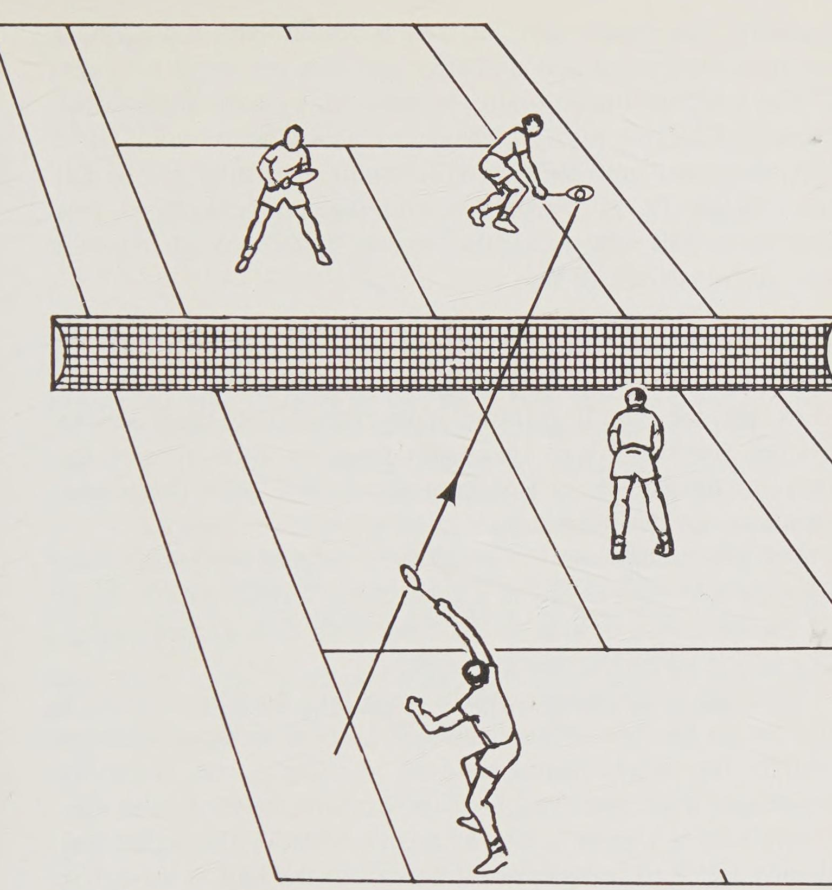
Thông thường là cú đánh nhanh hơn của bạn, nhưng đó là vì bạn sử dụng một cú vung vợt dài hơn. Hành động trái tay mạnh hơn; bạn có nhiều đòn bẩy hơn.
Nếu bạn coi cú trả giao bóng trái tay ngắn-vung, lấy bóng điểm cao, topspin của mình giống như một phiên bản mạnh hơn của cú đánh trái tay lấy bóng sớm cơ bản trong bóng bàn, bạn có thể thấy nó không quá khó sau tất cả. Có lẽ bạn đã tưởng tượng những cú đánh bóng bàn này là half-volley, nhưng không phải vậy. Nếu bạn nhìn lại, bạn sẽ thấy chúng là những cú đánh bóng đang bay lên.
Điều Gì Ở Trên Đỉnh?
Ở cấp độ cao nhất, bạn vẫn sẽ thấy nhiều cú trả giao bóng trái tay slice, nhưng bạn sẽ lưu ý rằng ngoại trừ những trường hợp ngoại lệ, cú đánh topspin là cú trả bóng tấn công hơn. Chúng tôi để khía cạnh này cho sở thích riêng của bạn.
Ấn tượng đầu tiên về một trận đánh đôi đẳng cấp thế giới mà trong đó các cú trả bóng của người nhận rất tốt là lợi thế dường như thay đổi từ bên này sang bên kia với mỗi cú đánh tuyệt vời. Người giao bóng quất cú giao bóng vào cuộc.
“Không ai có thể xử lý quả đó!” Chúng ta nghĩ. Nhưng người nhận nhanh nhẹn, đứng sau trái bóng, lấy bóng ở điểm cao, tránh xa người lên lưới đứng rộng và tấn công người giao bóng đang tiến lên bằng một cú trả bóng thấp và nhanh—tất cả diễn ra trước khi bạn kịp chớp mắt.
“Anh ta đã đánh một cú winner”—nhưng không phải vậy, vì người giao bóng đã nhanh chóng tiến lên và volley trái bóng như thể đó chính xác là điều anh ta đang chờ đợi. Một trận chiến giữa những gã khổng lồ đã bắt đầu, nhưng khá nhanh, sau một vài game và tỉ số cân bằng, chúng ta nhận ra rằng gã khổng lồ chiến thắng không phải là cặp đôi nào theo tên gọi mà là cặp giao bóng. Người giao bóng thực hiện cú đánh đầu tiên và do đó có cơ hội đầu tiên, điều mà anh ta luôn tận dụng, để volley và tiến vào hình thành rào chắn trên lưới.
Chúng ta cũng thấy rằng người giao bóng hầu hết thắng cuộc đối đầu giữa người giao bóng/người nhận đó, trong khi người nhận cố gắng hình thành một rào chắn trên lưới thứ hai.
150 co TENNIS ĐÔI Topspin: Khi bạn drive một quả bóng rơi từ sau vạch cuối sân, khái niệm của bạn là đánh vào nửa dưới của bóng, có lẽ ngay dưới một đường phân cách tưởng tượng, và nâng lên với xoáy tiến (topspin). Khi bạn thực hiện một cú trả giao bóng lấy bóng ở điểm cao, khái niệm là đánh vào nửa trên của bóng, có lẽ ngay trên đường phân cách, và cuộn xoáy topspin. Bóng nảy càng cao và càng gần lưới, bạn càng nên đánh cao hơn đường phân cách (hoặc đánh xa hơn về phía trước của bóng, nếu bạn muốn).
Lưu ý: Bất kỳ ai đã tự tin chơi bóng bay lên, sử dụng khái niệm đặc biệt của riêng mình (chẳng hạn như dồn trọng tâm về phía trước sớm hơn bình thường) nên bỏ qua hình minh họa này và văn bản của nó. Có nhiều con đường dẫn đến thành Rome.
Phần lớn anh ta không được phép, và phải chơi cú đánh tiếp theo như một cú đánh nền (groundstroke).
Người bạn của chúng ta, từ trang 130, người không thể phân biệt trò chơi của người chơi cao lớn đánh mạnh này với người khác, xem một trận đấu đẳng cấp cao và sau đó về nhà nói với vợ rằng việc volley diễn ra nhanh đến mức anh ta khó có thể nhìn thấy trái bóng, và cả bốn cầu thủ đều ở trên đỉnh lưới thực hiện những pha volley trao đổi tuyệt vời suốt thời gian đó.
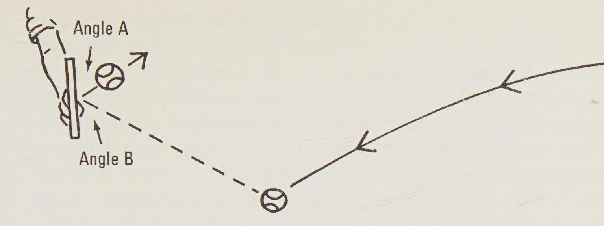
Không chỉ là trái bóng mà anh ta không nhìn thấy. Có một số pha trao đổi sắc sảo như vậy, và chúng khiến khán giả hào hứng, nhưng cả bốn cầu thủ, hai rào chắn trên lưới, không ở trên lưới toàn bộ thời gian. Điều đó sẽ có nghĩa là bên nhận luôn ở thế thượng phong, mỗi người nhận liên tục thắng cuộc đối đầu với người giao bóng bằng cách có thể tiến lên và hình thành rào chắn trên lưới của người nhận. Khi bạn của chúng ta chơi lần tới, chắc chắn anh ta sẽ cố gắng bắt chước những gì anh ta nghĩ mình đã thấy và lao lên lưới ở mọi cú trả bóng, dù nó cao, yếu hay nói chung là kém. Hãy hy vọng anh ta không đối đầu với hai cầu thủ cao lớn đánh mạnh.
Trò Chơi Tiêu Chuẩn Cao Của Bạn Cuộc thảo luận chiến thuật cuối cùng của chúng tôi bao quát lối chơi cuối sân của bạn sau cú volley đầu tiên của người giao bóng.
Bạn là người nhận trong một trận đấu tiêu chuẩn cao nơi cả hai người lên lưới đều am hiểu công việc, nơi người giao bóng giao tốt, nơi bạn trả bóng lấy điểm cao với mục tiêu tiến lên và thiết lập rào chắn trên lưới của người nhận, và nơi người giao bóng thực hiện các cú volley đầu tiên tốt và hầu hết thắng cuộc đối đầu và dập tắt mục tiêu của bạn.
Vì vậy: Bạn đang ở sân phải; anh ta giao bóng vào trái tay của bạn và bạn đã trả bóng mà không thể tiến lên; anh ta volley bóng lại cho bạn ở cuối sân. Phải làm gì tiếp theo?
Chúng ta sẽ giả định rằng cú trả bóng của bạn đủ mạnh để ngăn người giao bóng volley sâu xuống trung tâm vượt qua đối tác trên lưới của bạn. Thay vào đó, cú volley của anh ta nảy lên khoảng tầm cao của lưới và bạn có thể tiến lên với cú thuận tay. Bạn nên thực hiện một cú thuận tay dipping mạnh xuống giữa—hướng về phía trái tay của người giao bóng, tránh cú volley thuận tay của người lên lưới—và nếu bóng đến với người giao bóng dưới tầm cao của lưới, bạn tiến lên. Anh ta đã volley ngắn. Đó là cơ hội tốt nhất bạn có được. Hãy thực hiện cú đánh của mình không chút do dự. Nếu bạn vô tình đánh hỏng, hãy thực hiện nó vào lần tới mà không có những nghi ngờ làm xao nhãng rằng có lẽ bạn nên chơi an toàn hơn. Đó cũng là điều bản năng phải làm, sau khi thực hiện một cú trả giao bóng mạnh nhưng không đủ tốt để tiến lên, nhưng đủ để buộc người giao bóng phải volley ngắn về phía thuận tay của bạn.
Bây giờ hãy lấy một thái cực khác, nơi cú trả giao bóng của bạn hơi cao và đối tác trên lưới của bạn không thể ngăn người giao bóng volley nhanh và rất sâu về phía trái tay của bạn. Đây là trường hợp bạn ở vị trí tệ đến mức bạn nên cố gắng đánh để tự giải thoát mình khỏi rắc rối. Hãy tung ra một cú half-volley trái tay drive với thật nhiều topspin bao phủ.
Được thực hiện một cách có mục đích và không chút nghi ngờ rằng có lẽ bạn nên lốp bóng, điều này khác xa với sự tuyệt vọng hoang dại.
Nếu cú volley của người giao bóng rộng hơn trái tay của bạn và sâu đến mức nó đáp xuống phía sau bạn, bạn có ít cơ hội tự giải thoát mình vì bạn không thể tạo ra đủ lực để gây khó khăn cho rào chắn trên lưới của họ. Có lẽ bạn có thể thực hiện một cú slice trái tay thấp khiến người giao bóng phải volley từ dưới tầm cao của lưới, và điều này sẽ giữ cho cơ hội của bạn còn sống.
Tuy nhiên, phần lớn, bạn sẽ phải lốp bóng. Nếu có thể, hãy nhắm nó qua phía trái tay của người giao bóng, đừng bao giờ nhắm về phía cú đập bóng đang chờ đợi của người lên lưới. Nếu không còn lựa chọn nào khác, hãy tung một cú lốp bóng rất cao và sâu và chờ đợi các sự kiện.
Từ cú lốp bóng rất cao và sâu, đối thủ của bạn có lẽ sẽ không cố gắng thắng bằng một cú đập bóng duy nhất (vì họ có vị trí thắng thế và không cần mạo hiểm) và bạn có thể có cơ hội tấn công tốt hơn so với cú volley đầu tiên xuyên thấu của người giao bóng đã gây ra cho bạn. Trong phòng thủ, bạn phải tìm kiếm sự tấn công. Nếu người chơi chuẩn bị xử lý cú lốp bóng của bạn có bất kỳ dấu hiệu nao núng hoặc mất thăng bằng, hoặc nếu anh ta né tránh vấn đề và chạy lùi lại để cú lốp bóng của bạn đáp sâu trong sân, thì trong cả hai trường hợp, bạn và đối tác nên chiếm lĩnh lưới ngay lập tức. Bạn đã được trao cơ hội tạo rào chắn trên lưới. Bạn sẽ có thể đối phó với một cú đập bóng nao núng.
Đối với cú lốp bóng nảy, cầu thủ đối phương sẽ đánh cú half-smash như một tên lửa bây giờ khi anh ta thấy bạn đã ở trên lưới, nhưng thì sao nào? Không ai hứa với bạn là lúc nào ở trên lưới cũng nhận được bóng nhẹ cả.
Đối tác trên lưới của bạn sẽ đồng điệu với tất cả những điều này. Khi cú volley đầu tiên sâu của người giao bóng vượt qua anh ta, anh ta bắt đầu di chuyển lùi lại. Nếu anh ta thấy cú slice trái tay của bạn sẽ thấp qua lưới, anh ta di chuyển lên theo bóng, nhưng nếu anh ta thấy bạn định lốp bóng, anh ta sẽ ở lại phía sau. Nếu anh ta thấy sẽ có một cú đập bóng nao núng hoặc một cú half-smash từ sâu trong sân, anh ta phải tiến lên nhanh như bạn. Nếu anh ta do dự và chỉ tiến được một nửa, anh ta có lẽ sẽ phải half-volley, nếu có thể. Nếu anh ta ở lại phía sau, đối thủ đập bóng có thể chơi cú đánh trên cao của mình một cách an toàn hướng về phía anh ta như một cú tiếp cận và tiến lên theo sau. Rào chắn trên lưới sẽ là của họ thay vì của bạn.
Chúng ta đã thảo luận về những cú volley đầu tiên ngắn và dễ tấn công, những cú nảy gần chân bạn mà từ đó bạn nên biến sự bắt buộc thành lợi thế và half-volley mạnh, và những cú sâu đáp rộng và hơi phía sau bạn. Trong cả ba trường hợp, những câu trả lời chiến thuật tốt nhất của bạn ít nhiều là bản năng đối với một người chơi đánh đôi nâng cao, và bản năng này áp dụng cho lối chơi của bạn đối với tất cả các loại volley đầu tiên khác tìm đến bạn. Phần lớn bạn đánh bóng trả lại một lần nữa, cố gắng khiến người giao bóng volley từ dưới tầm cao của lưới, sử dụng một cú drive topspin dipping hoặc một cú slice rất thấp. Nếu người lên lưới có dấu hiệu đánh chặn, hãy thực hiện một trong những cú lốp bóng mạnh mẽ qua phía trái tay của anh ta. Nếu người giao bóng tiến vào quá gần sau cú volley đầu tiên, hãy lốp bóng qua đầu anh ta.
Bạn có thể thấy một khoảng hở cho một cú thuận tay góc nhọn chéo qua cơ thể người giao bóng. Sẽ tốt hơn cho bạn nếu đó là cú bạn có thể thực hiện với một cú drive dipping mạnh, thay vì một cú đánh cần sự tinh tế, vì đối tác của bạn sẽ khốn khổ nếu cú đánh tinh tế của bạn bay cao.
Các góc thường là bẫy cho những người chơi trẻ và khu vực trung tâm mang lại nhiều thành công nhất.
Mục tiêu chung của bạn sau cú volley đầu tiên và bất kỳ cú đánh tiếp theo nào là giữ cho cuộc chơi tiếp tục cho đến khi bạn có thể thực hiện một cú tiếp cận và tiến lên. Bằng mọi giá, hãy đánh một cú đánh nền để giành điểm thắng nếu có thể, nhưng là một chiến thuật tồi nếu đánh quá mạnh và hỏng trong khi bạn có thể đã chơi với tốc độ trung bình mạnh và tiến lên.
Phần lớn bên giao bóng đối phó được với tất cả, giống như bạn nếu bạn là người giao bóng. Hầu hết các game giao bóng tiếp tục được giữ. Tuy nhiên, không phải tất cả, và khi không được giữ, chúng bị break bởi người nhận, chứ không phải mất do lỗi từ bên giao bóng. “Lấy bóng trở lại, hãy để họ mắc sai lầm,” là lời khuyên hời hợt cho một người nhận trong đánh đôi đẳng cấp cao—ví dụ, với các cú trả giao bóng, anh ta chỉ đang cho người giao bóng một loạt các cú volley đầu tiên thoải mái.
Bạn sẽ thực hiện các cú break giao bóng bằng cách trả bóng mạnh mẽ, chiếm vị trí lưới và hình thành cũng như giữ vững rào chắn của mình—bằng cách thắng cuộc đối đầu đó, từ cú trả giao bóng của bạn hoặc cuối cùng là đạt được. Và bạn sẽ chỉ thực hiện tốt nhất những chiến thuật này khi bạn hài lòng rằng chúng đúng. Trong khi đó, khi bạn đang tự thuyết phục mình bằng quan sát và kinh nghiệm, không ai sẽ tặng bạn những cú volley và đập bóng hỏng, chưa nói đến việc giao bóng lỗi kép.
CHIẾN THUẬT CAO ĐẾN CƠ CHẾ AN TOÀN Thay đổi sân nhanh chóng, bạn cũng phải tránh lỗi giao bóng kép. Nếu bạn đột nhiên mất tự tin vào cú giao bóng của mình, rắc rối gần như chắc chắn là sự mất phối hợp tạm thời, phối hợp trong chính cú giao bóng và việc kết hợp nó với cách tiếp cận lưới của bạn. Bạn biết mình đang vội vã, làm mọi thứ cùng một lúc, nhưng khi bạn cố gắng chậm lại, mọi thứ trở nên tách biệt và bạn cảm thấy mất thăng bằng. Bạn đổ người vào bóng và cú giao bóng hai của bạn có nhiều khả năng đi vào lưới hơn là qua lưới.
Bạn có thể khắc phục tất cả những điều này bằng một phương pháp, cụ thể là tạm thời giảm số lượng các chuyển động phối hợp mà bạn đã sử dụng. Tách hai tay ra, để bạn không cần phối hợp chúng, bằng cách giữ tay trái cầm bóng ở gần eo, và hạ đầu vợt xuống gần chân phải. Tung bóng thẳng đứng, để bạn không phải phối hợp việc nghiêng người về phía trước và vung chân phải vào sân. Hãy hài lòng với việc đánh bóng chắc chắn qua lưới và sau đó tiến lên, từ bỏ khởi đầu bay bổng của bạn.
Là một người giao bóng giỏi bình thường, sự tự tin của bạn nhanh chóng quay trở lại, và bạn có thể xây dựng lại tốc độ và nhịp điệu một lần nữa. Bạn có thể vượt qua rắc rối trong vòng một game giao bóng, chắc chắn là trong một set. Không cần phải thiếu tự tin trong giao bóng suốt cả trận đấu hoặc mang nó như một gánh nặng từ trận này sang trận khác.
Có lẽ một ngày nào đó bạn sẽ chơi với tôi. Cứ tiến lên gần lưới bao nhiêu tùy thích. Tôi sẽ bao quát các cú lốp bóng của bạn.
Sân trái ổn với bạn chứ?
Bảng Tra Cứu Thuật Ngữ (Index)
| Thuật Ngữ Tiếng Anh | Thuật Ngữ Tiếng Việt | Định Nghĩa & Ý Nghĩa Chiến Thuật |
|---|---|---|
| Center Coverage | Bao quát trung tâm | Trách nhiệm của người đứng lưới trong việc bảo vệ khoảng trống ở giữa sân, nơi dễ bị đối thủ khai thác nhất nếu không được che chắn. |
| Sidelines (Alley Coverage) | Bao quát đường biên dọc | Trách nhiệm của người đứng lưới trong việc bảo vệ hành lang biên dọc mà không bỏ hở khoảng trung tâm. |
| Rising Balls | Bóng bay lên (Rising Balls) | Cách xử lý và đánh bóng ngay khi bóng vừa nảy lên khỏi mặt sân, giúp rút ngắn thời gian phản ứng của đối thủ. |
| Left-Handed Play | Chơi thuận tay trái | Các điều chỉnh chiến thuật khi một hoặc cả hai đối tác thuận tay trái — từ chọn ô sân đến hướng giao bóng và đội hình Tandem. |
| Playing Centre / Aiming for the Middle | Chơi trung tâm | Chiến thuật nhắm bóng vào khoảng giữa hai đối thủ, khai thác sự do dự về việc ai sẽ đánh trái bóng. |
| Championship-Level Tactics | Chơi đẳng cấp vô địch và chiến thuật | Các nguyên tắc chiến thuật nâng cao — tín hiệu, giao bóng một mạnh, phối hợp bao quát lưới — áp dụng ở trình độ thi đấu cao nhất. |
| Continental Grip | Cách cầm vợt Continental | Kiểu cầm vợt trung tính thường dùng khi giao bóng và vô-lê, giúp cổ tay linh hoạt hơn để thay đổi hướng và độ xoáy. |
| Drop Shot | Cú bỏ nhỏ (Drop Shot) | Cú đánh nhẹ, rơi ngắn gần lưới đối phương; hiếm dùng trong đánh đôi nhưng có thể hiệu quả trước một người đứng lưới yếu. |
| Ace | Cú giao bóng ăn điểm trực tiếp | Giao bóng mà đối phương không thể chạm vợt; đặc biệt nguy hiểm khi kết hợp với giao bóng hai có kiểm soát thay vì chỉ dựa vào tốc độ. |
| Freak / Unorthodox Return | Cú trả bóng kỳ dị | Cú trả giao bóng bất thường (cách cầm vợt hoặc động tác lạ) mà một số cầu thủ sử dụng, gây khó đoán cho người giao bóng. |
| Crosscourt Shot | Cú đánh chéo sân | Đường bóng đánh từ một góc sân sang góc đối diện của sân bên kia; cú đánh cơ bản trong các pha đôi công cuối sân. |
| Dink Shot | Cú đánh chạm nhẹ (Dink Shot) | Cú thuận tay thấp, chậm, thường dùng ở ô bên trái để đưa người giao bóng đang tiến lưới vào một cú vô-lê khó. |
| Cannonball Service | Giao bóng Cannonball (giao bóng phẳng lực mạnh) | Cú giao bóng phẳng, tốc độ cao, biên độ an toàn qua lưới thấp; chủ yếu dành cho các cầu thủ nam cao, mạnh và chuẩn xác. |
| Flat Serve | Giao bóng phẳng | Loại giao bóng ít xoáy nhất, ưu tiên tốc độ nhưng có biên độ an toàn qua lưới thấp nhất, dễ mắc lỗi khi đánh quá mạnh. |
| Two Back | Hai dưới (Two Back) | Đội hình phòng ngự trong đó cả hai đối tác đứng ở cuối sân; hiếm dùng vì không tận dụng được lợi thế lưới. |
| Center Gap (at net) | Khoảng hở lưới trung tâm | Khoảng trống nguy hiểm giữa hai người chơi lưới khi họ đứng quá lệch về phía đường biên dọc của mình. |
| Court Dimensions | Kích thước sân | Kích thước tiêu chuẩn của sân đánh đôi, bao gồm cả hành lang (alley) hai bên, quyết định các góc giao bóng và trả bóng. |
| Net Game | Lối chơi Lên lưới (Net Game) | Đội hình tấn công trong đó cả hai đối tác cùng chiếm lĩnh lưới để tạo thành một rào chắn vô-lê và đập bóng không thể xuyên phá. |
| Lob | Lốp bóng | Cú đánh bổng cao qua đầu người đứng lưới đối phương; vũ khí tấn công quan trọng để phá vỡ rào chắn lưới của đối thủ. |
| Foot Fault | Lỗi chân (Foot-fault) | Lỗi khi chân chạm hoặc vượt qua vạch cuối sân trước khi vợt tiếp xúc bóng khi giao bóng; dễ xảy ra khi vội tiến lưới. |
| One-Up-One-Back | Một trên Một dưới | Đội hình phổ biến nhất: một người đứng lưới, người còn lại (thường là người giao bóng hoặc người trả bóng) chơi ở cuối sân. |
| Women in Mixed Doubles | Phụ nữ trong đánh đôi nam nữ | Những điều chỉnh chiến thuật đặc thù — vị trí ô sân, mức độ tham gia ở lưới — dành riêng cho vận động viên nữ khi thi đấu nam nữ kết hợp. |
| Tandem | Song hành (Tandem) | Đội hình trong đó người đứng lưới đứng cùng phía sân với người giao bóng, dùng để triệt tiêu cú thuận tay mạnh của một đối thủ thuận tay trái. |
| Left Court — Receiving | Sân trái — nhận bóng | Vai trò và chiến thuật của người nhận giao bóng ở ô bên trái: thường phải đánh nhiều cú trái tay và có ít góc tấn công thuận tay hơn ô phải. |
| Changing a Shot | Thay đổi một cú đánh (vào giây cuối) | Việc điều chỉnh cú trả bóng vào khoảnh khắc cuối khi người đứng lưới đối phương di chuyển chặn bóng; một kỹ năng khó nhưng cần thiết. |
| Backhand (strong/weak) | Thuận tay và trái tay, mạnh và yếu | Việc chọn ô sân (phải/trái) và chiến thuật giao bóng, trả bóng của cặp đấu đều xoay quanh việc bảo vệ cú đánh yếu và khai thác cú đánh mạnh của mỗi người. |
| Responsibility (Court Coverage) | Trách nhiệm bao quát sân | Sự phân chia rõ ràng khu vực sân mà mỗi đối tác phải chịu trách nhiệm, tránh tình trạng cả hai cùng tránh hoặc cùng lao vào một quả bóng. |
| Passing / Down-the-Line Return | Trả bóng trực tiếp (dọc dây) | Cú trả giao bóng đánh thẳng dọc theo đường biên dọc, vượt qua người đứng lưới đối phương, thay vì đánh chéo sân. |
| Serve, Return of | Trả giao bóng | Cú đánh đầu tiên và quan trọng nhất của người nhận; nền tảng quyết định toàn bộ diễn biến của ván giao bóng. |
| First Volley | Volley đầu tiên | Cú vô-lê đầu tiên sau khi giao bóng và tiến lưới — cú đánh then chốt quyết định ai giành quyền kiểm soát lưới. |
| Danger Court | Ô Nguy Hiểm (ô bên phải) | Cách Metzler gọi ô bên phải, vì mất điểm ở đây thường buộc người giao bóng phải gỡ tỉ số bất lợi (0-30, 15-40...) trong các điểm tiếp theo. |
| Double Hit | Đánh bóng hai lần (lỗi) | Lỗi khi vợt chạm bóng hai lần trong một cú đánh, thường xảy ra khi hai đối tác cùng vươn tới một quả bóng. |
| Late Hitting | Đánh bóng muộn | Cách xử lý bóng bay lên hoặc bóng khó bằng cách chờ bóng xuống thấp hơn một chút trước khi tiếp xúc, thường dùng ở ô bên trái. |
| Interception / Poaching | Đánh chặn / Bắt bài | Người đứng lưới chủ động di chuyển sang phần sân của đối tác để cắt đường bóng và kết liễu điểm trước khi đối tác cuối sân phải xử lý. |
| Depth of Serve | Độ sâu cú giao bóng | Yếu tố quan trọng hơn cả hướng giao bóng — giao sâu buộc đối thủ trả bóng xa hơn, cho đối tác đứng lưới nhiều thời gian chặn bóng hơn. |
| Australian Formation | Đội hình kiểu Úc (xem Song hành / Tandem) | Cách gọi khác của đội hình Song hành — người đứng lưới và người giao bóng cùng đứng về một phía sân để che trái tay của đối thủ thuận tay trái. |
| Mixed Doubles Formations | Đội hình đánh đôi nam nữ | Cách bố trí đội hình (Lối chơi Lên lưới, Một trên Một dưới, Song hành, Hai dưới) được điều chỉnh theo sự chênh lệch sức mạnh thường thấy giữa hai đối tác nam và nữ. |